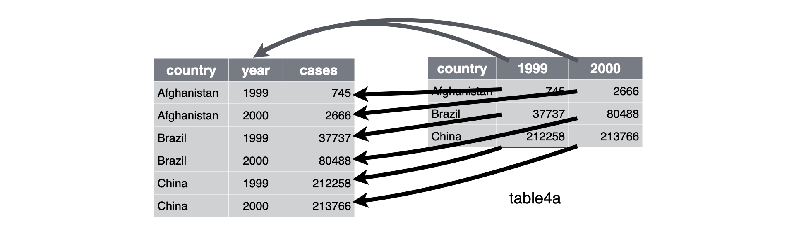

<!DOCTYPE html>
<html lang="" xml:lang="">
<head>

  <meta charset="utf-8" />
  <meta http-equiv="X-UA-Compatible" content="IE=edge" />
  <title>6 Data tidying | R for Data Science (2e)</title>
  <meta name="description" content="This book will teach you how to do data science with R: You’ll learn how to get your data into R, get it into the most useful structure, transform it, visualise it and model it. In this book, you will find a practicum of skills for data science. Just as a chemist learns how to clean test tubes and stock a lab, you’ll learn how to clean data and draw plots—and many other things besides. These are the skills that allow data science to happen, and here you will find the best practices for doing each of these things with R. You’ll learn how to use the grammar of graphics, literate programming, and reproducible research to save time. You’ll also learn how to manage cognitive resources to facilitate discoveries when wrangling, visualising, and exploring data." />
  <meta name="generator" content="bookdown 0.23 and GitBook 2.6.7" />

  <meta property="og:title" content="6 Data tidying | R for Data Science (2e)" />
  <meta property="og:type" content="book" />
  <meta property="og:url" content="https://r4ds.had.co.nz/" />
  <meta property="og:image" content="https://r4ds.had.co.nz//cover.png" />
  <meta property="og:description" content="This book will teach you how to do data science with R: You’ll learn how to get your data into R, get it into the most useful structure, transform it, visualise it and model it. In this book, you will find a practicum of skills for data science. Just as a chemist learns how to clean test tubes and stock a lab, you’ll learn how to clean data and draw plots—and many other things besides. These are the skills that allow data science to happen, and here you will find the best practices for doing each of these things with R. You’ll learn how to use the grammar of graphics, literate programming, and reproducible research to save time. You’ll also learn how to manage cognitive resources to facilitate discoveries when wrangling, visualising, and exploring data." />
  <meta name="github-repo" content="hadley/r4ds" />

  <meta name="twitter:card" content="summary" />
  <meta name="twitter:title" content="6 Data tidying | R for Data Science (2e)" />
  <meta name="twitter:site" content="@hadley" />
  <meta name="twitter:description" content="This book will teach you how to do data science with R: You’ll learn how to get your data into R, get it into the most useful structure, transform it, visualise it and model it. In this book, you will find a practicum of skills for data science. Just as a chemist learns how to clean test tubes and stock a lab, you’ll learn how to clean data and draw plots—and many other things besides. These are the skills that allow data science to happen, and here you will find the best practices for doing each of these things with R. You’ll learn how to use the grammar of graphics, literate programming, and reproducible research to save time. You’ll also learn how to manage cognitive resources to facilitate discoveries when wrangling, visualising, and exploring data." />
  <meta name="twitter:image" content="https://r4ds.had.co.nz//cover.png" />

<meta name="author" content="Hadley Wickham and Garrett Grolemund" />


  <meta name="viewport" content="width=device-width, initial-scale=1" />
  <meta name="apple-mobile-web-app-capable" content="yes" />
  <meta name="apple-mobile-web-app-status-bar-style" content="black" />
  
  
<link rel="prev" href="data-transform.html"/>
<link rel="next" href="workflow-pipes.html"/>
<script src="libs/header-attrs-2.10/header-attrs.js"></script>
<script src="libs/jquery-3.6.0/jquery-3.6.0.min.js"></script>
<link href="libs/gitbook-2.6.7/css/style.css" rel="stylesheet" />
<link href="libs/gitbook-2.6.7/css/plugin-table.css" rel="stylesheet" />
<link href="libs/gitbook-2.6.7/css/plugin-bookdown.css" rel="stylesheet" />
<link href="libs/gitbook-2.6.7/css/plugin-highlight.css" rel="stylesheet" />
<link href="libs/gitbook-2.6.7/css/plugin-search.css" rel="stylesheet" />
<link href="libs/gitbook-2.6.7/css/plugin-fontsettings.css" rel="stylesheet" />
<link href="libs/gitbook-2.6.7/css/plugin-clipboard.css" rel="stylesheet" />


<link href="libs/anchor-sections-1.0.1/anchor-sections.css" rel="stylesheet" />
<script src="libs/anchor-sections-1.0.1/anchor-sections.js"></script>
<script src="libs/htmlwidgets-1.5.3/htmlwidgets.js"></script>
<link href="libs/leaflet-1.3.1/leaflet.css" rel="stylesheet" />
<script src="libs/leaflet-1.3.1/leaflet.js"></script>
<link href="libs/leafletfix-1.0.0/leafletfix.css" rel="stylesheet" />
<script src="libs/proj4-2.6.2/proj4.min.js"></script>
<script src="libs/Proj4Leaflet-1.0.1/proj4leaflet.js"></script>
<link href="libs/rstudio_leaflet-1.3.1/rstudio_leaflet.css" rel="stylesheet" />
<script src="libs/leaflet-binding-2.0.4.1/leaflet.js"></script>
<!-- Global site tag (gtag.js) - Google Analytics -->
<script async src="https://www.googletagmanager.com/gtag/js?id=UA-115082821-1"></script>
<script>
  window.dataLayer = window.dataLayer || [];
  function gtag(){dataLayer.push(arguments);}
  gtag('js', new Date());

  gtag('config', 'UA-115082821-1');
</script>


<style type="text/css">
pre > code.sourceCode { white-space: pre; position: relative; }
pre > code.sourceCode > span { display: inline-block; line-height: 1.25; }
pre > code.sourceCode > span:empty { height: 1.2em; }
.sourceCode { overflow: visible; }
code.sourceCode > span { color: inherit; text-decoration: inherit; }
pre.sourceCode { margin: 0; }
@media screen {
div.sourceCode { overflow: auto; }
}
@media print {
pre > code.sourceCode { white-space: pre-wrap; }
pre > code.sourceCode > span { text-indent: -5em; padding-left: 5em; }
}
pre.numberSource code
  { counter-reset: source-line 0; }
pre.numberSource code > span
  { position: relative; left: -4em; counter-increment: source-line; }
pre.numberSource code > span > a:first-child::before
  { content: counter(source-line);
    position: relative; left: -1em; text-align: right; vertical-align: baseline;
    border: none; display: inline-block;
    -webkit-touch-callout: none; -webkit-user-select: none;
    -khtml-user-select: none; -moz-user-select: none;
    -ms-user-select: none; user-select: none;
    padding: 0 4px; width: 4em;
    color: #aaaaaa;
  }
pre.numberSource { margin-left: 3em; border-left: 1px solid #aaaaaa;  padding-left: 4px; }
div.sourceCode
  {   }
@media screen {
pre > code.sourceCode > span > a:first-child::before { text-decoration: underline; }
}
code span.al { color: #ff0000; font-weight: bold; } /* Alert */
code span.an { color: #60a0b0; font-weight: bold; font-style: italic; } /* Annotation */
code span.at { color: #7d9029; } /* Attribute */
code span.bn { color: #40a070; } /* BaseN */
code span.bu { } /* BuiltIn */
code span.cf { color: #007020; font-weight: bold; } /* ControlFlow */
code span.ch { color: #4070a0; } /* Char */
code span.cn { color: #880000; } /* Constant */
code span.co { color: #60a0b0; font-style: italic; } /* Comment */
code span.cv { color: #60a0b0; font-weight: bold; font-style: italic; } /* CommentVar */
code span.do { color: #ba2121; font-style: italic; } /* Documentation */
code span.dt { color: #902000; } /* DataType */
code span.dv { color: #40a070; } /* DecVal */
code span.er { color: #ff0000; font-weight: bold; } /* Error */
code span.ex { } /* Extension */
code span.fl { color: #40a070; } /* Float */
code span.fu { color: #06287e; } /* Function */
code span.im { } /* Import */
code span.in { color: #60a0b0; font-weight: bold; font-style: italic; } /* Information */
code span.kw { color: #007020; font-weight: bold; } /* Keyword */
code span.op { color: #666666; } /* Operator */
code span.ot { color: #007020; } /* Other */
code span.pp { color: #bc7a00; } /* Preprocessor */
code span.sc { color: #4070a0; } /* SpecialChar */
code span.ss { color: #bb6688; } /* SpecialString */
code span.st { color: #4070a0; } /* String */
code span.va { color: #19177c; } /* Variable */
code span.vs { color: #4070a0; } /* VerbatimString */
code span.wa { color: #60a0b0; font-weight: bold; font-style: italic; } /* Warning */
</style>


<link rel="stylesheet" href="r4ds.css" type="text/css" />
</head>

<body>


  <div class="book without-animation with-summary font-size-2 font-family-1" data-basepath=".">

    <div class="book-summary">
      <nav role="navigation">

<ul class="summary">
<li><strong><a href="./">R for Data Science</a></strong></li>

<li class="divider"></li>
<li class="chapter" data-level="" data-path="index.html"><a href="index.html"><i class="fa fa-check"></i>Welcome</a>
<ul>
<li class="chapter" data-level="" data-path="index.html"><a href="index.html#acknowledgements"><i class="fa fa-check"></i>Acknowledgements</a></li>
</ul></li>
<li class="chapter" data-level="" data-path="preface-to-the-second-edition.html"><a href="preface-to-the-second-edition.html"><i class="fa fa-check"></i>Preface to the second edition</a>
<ul>
<li class="chapter" data-level="" data-path="preface-to-the-second-edition.html"><a href="preface-to-the-second-edition.html#major-changes"><i class="fa fa-check"></i>Major changes</a></li>
<li class="chapter" data-level="" data-path="preface-to-the-second-edition.html"><a href="preface-to-the-second-edition.html#acknowledgements-1"><i class="fa fa-check"></i>Acknowledgements</a></li>
</ul></li>
<li class="chapter" data-level="1" data-path="introduction.html"><a href="introduction.html"><i class="fa fa-check"></i><b>1</b> Introduction</a>
<ul>
<li class="chapter" data-level="1.1" data-path="introduction.html"><a href="introduction.html#what-you-will-learn"><i class="fa fa-check"></i><b>1.1</b> What you will learn</a></li>
<li class="chapter" data-level="1.2" data-path="introduction.html"><a href="introduction.html#how-this-book-is-organised"><i class="fa fa-check"></i><b>1.2</b> How this book is organised</a></li>
<li class="chapter" data-level="1.3" data-path="introduction.html"><a href="introduction.html#what-you-wont-learn"><i class="fa fa-check"></i><b>1.3</b> What you won’t learn</a>
<ul>
<li class="chapter" data-level="1.3.1" data-path="introduction.html"><a href="introduction.html#big-data"><i class="fa fa-check"></i><b>1.3.1</b> Big data</a></li>
<li class="chapter" data-level="1.3.2" data-path="introduction.html"><a href="introduction.html#python-julia-and-friends"><i class="fa fa-check"></i><b>1.3.2</b> Python, Julia, and friends</a></li>
<li class="chapter" data-level="1.3.3" data-path="introduction.html"><a href="introduction.html#non-rectangular-data"><i class="fa fa-check"></i><b>1.3.3</b> Non-rectangular data</a></li>
<li class="chapter" data-level="1.3.4" data-path="introduction.html"><a href="introduction.html#hypothesis-confirmation"><i class="fa fa-check"></i><b>1.3.4</b> Hypothesis confirmation</a></li>
</ul></li>
<li class="chapter" data-level="1.4" data-path="introduction.html"><a href="introduction.html#prerequisites"><i class="fa fa-check"></i><b>1.4</b> Prerequisites</a>
<ul>
<li class="chapter" data-level="1.4.1" data-path="introduction.html"><a href="introduction.html#r"><i class="fa fa-check"></i><b>1.4.1</b> R</a></li>
<li class="chapter" data-level="1.4.2" data-path="introduction.html"><a href="introduction.html#rstudio"><i class="fa fa-check"></i><b>1.4.2</b> RStudio</a></li>
<li class="chapter" data-level="1.4.3" data-path="introduction.html"><a href="introduction.html#the-tidyverse"><i class="fa fa-check"></i><b>1.4.3</b> The tidyverse</a></li>
<li class="chapter" data-level="1.4.4" data-path="introduction.html"><a href="introduction.html#other-packages"><i class="fa fa-check"></i><b>1.4.4</b> Other packages</a></li>
</ul></li>
<li class="chapter" data-level="1.5" data-path="introduction.html"><a href="introduction.html#running-r-code"><i class="fa fa-check"></i><b>1.5</b> Running R code</a></li>
<li class="chapter" data-level="1.6" data-path="introduction.html"><a href="introduction.html#getting-help-and-learning-more"><i class="fa fa-check"></i><b>1.6</b> Getting help and learning more</a></li>
<li class="chapter" data-level="1.7" data-path="introduction.html"><a href="introduction.html#acknowledgements-2"><i class="fa fa-check"></i><b>1.7</b> Acknowledgements</a></li>
<li class="chapter" data-level="1.8" data-path="introduction.html"><a href="introduction.html#colophon"><i class="fa fa-check"></i><b>1.8</b> Colophon</a></li>
</ul></li>
<li class="part"><span><b>I Whole game</b></span></li>
<li class="chapter" data-level="2" data-path="explore-intro.html"><a href="explore-intro.html"><i class="fa fa-check"></i><b>2</b> Introduction</a></li>
<li class="chapter" data-level="3" data-path="data-visualisation.html"><a href="data-visualisation.html"><i class="fa fa-check"></i><b>3</b> Data visualisation</a>
<ul>
<li class="chapter" data-level="3.1" data-path="data-visualisation.html"><a href="data-visualisation.html#introduction-1"><i class="fa fa-check"></i><b>3.1</b> Introduction</a>
<ul>
<li class="chapter" data-level="3.1.1" data-path="data-visualisation.html"><a href="data-visualisation.html#prerequisites-1"><i class="fa fa-check"></i><b>3.1.1</b> Prerequisites</a></li>
</ul></li>
<li class="chapter" data-level="3.2" data-path="data-visualisation.html"><a href="data-visualisation.html#first-steps"><i class="fa fa-check"></i><b>3.2</b> First steps</a>
<ul>
<li class="chapter" data-level="3.2.1" data-path="data-visualisation.html"><a href="data-visualisation.html#the-mpg-data-frame"><i class="fa fa-check"></i><b>3.2.1</b> The <code>mpg</code> data frame</a></li>
<li class="chapter" data-level="3.2.2" data-path="data-visualisation.html"><a href="data-visualisation.html#creating-a-ggplot"><i class="fa fa-check"></i><b>3.2.2</b> Creating a ggplot</a></li>
<li class="chapter" data-level="3.2.3" data-path="data-visualisation.html"><a href="data-visualisation.html#a-graphing-template"><i class="fa fa-check"></i><b>3.2.3</b> A graphing template</a></li>
<li class="chapter" data-level="3.2.4" data-path="data-visualisation.html"><a href="data-visualisation.html#exercises"><i class="fa fa-check"></i><b>3.2.4</b> Exercises</a></li>
</ul></li>
<li class="chapter" data-level="3.3" data-path="data-visualisation.html"><a href="data-visualisation.html#aesthetic-mappings"><i class="fa fa-check"></i><b>3.3</b> Aesthetic mappings</a>
<ul>
<li class="chapter" data-level="3.3.1" data-path="data-visualisation.html"><a href="data-visualisation.html#exercises-1"><i class="fa fa-check"></i><b>3.3.1</b> Exercises</a></li>
</ul></li>
<li class="chapter" data-level="3.4" data-path="data-visualisation.html"><a href="data-visualisation.html#common-problems"><i class="fa fa-check"></i><b>3.4</b> Common problems</a></li>
<li class="chapter" data-level="3.5" data-path="data-visualisation.html"><a href="data-visualisation.html#facets"><i class="fa fa-check"></i><b>3.5</b> Facets</a>
<ul>
<li class="chapter" data-level="3.5.1" data-path="data-visualisation.html"><a href="data-visualisation.html#exercises-2"><i class="fa fa-check"></i><b>3.5.1</b> Exercises</a></li>
</ul></li>
<li class="chapter" data-level="3.6" data-path="data-visualisation.html"><a href="data-visualisation.html#geometric-objects"><i class="fa fa-check"></i><b>3.6</b> Geometric objects</a>
<ul>
<li class="chapter" data-level="3.6.1" data-path="data-visualisation.html"><a href="data-visualisation.html#exercises-3"><i class="fa fa-check"></i><b>3.6.1</b> Exercises</a></li>
</ul></li>
<li class="chapter" data-level="3.7" data-path="data-visualisation.html"><a href="data-visualisation.html#statistical-transformations"><i class="fa fa-check"></i><b>3.7</b> Statistical transformations</a>
<ul>
<li class="chapter" data-level="3.7.1" data-path="data-visualisation.html"><a href="data-visualisation.html#exercises-4"><i class="fa fa-check"></i><b>3.7.1</b> Exercises</a></li>
</ul></li>
<li class="chapter" data-level="3.8" data-path="data-visualisation.html"><a href="data-visualisation.html#position-adjustments"><i class="fa fa-check"></i><b>3.8</b> Position adjustments</a>
<ul>
<li class="chapter" data-level="3.8.1" data-path="data-visualisation.html"><a href="data-visualisation.html#exercises-5"><i class="fa fa-check"></i><b>3.8.1</b> Exercises</a></li>
</ul></li>
<li class="chapter" data-level="3.9" data-path="data-visualisation.html"><a href="data-visualisation.html#coordinate-systems"><i class="fa fa-check"></i><b>3.9</b> Coordinate systems</a>
<ul>
<li class="chapter" data-level="3.9.1" data-path="data-visualisation.html"><a href="data-visualisation.html#exercises-6"><i class="fa fa-check"></i><b>3.9.1</b> Exercises</a></li>
</ul></li>
<li class="chapter" data-level="3.10" data-path="data-visualisation.html"><a href="data-visualisation.html#the-layered-grammar-of-graphics"><i class="fa fa-check"></i><b>3.10</b> The layered grammar of graphics</a></li>
</ul></li>
<li class="chapter" data-level="4" data-path="workflow-basics.html"><a href="workflow-basics.html"><i class="fa fa-check"></i><b>4</b> Workflow: basics</a>
<ul>
<li class="chapter" data-level="4.1" data-path="workflow-basics.html"><a href="workflow-basics.html#coding-basics"><i class="fa fa-check"></i><b>4.1</b> Coding basics</a></li>
<li class="chapter" data-level="4.2" data-path="workflow-basics.html"><a href="workflow-basics.html#whats-in-a-name"><i class="fa fa-check"></i><b>4.2</b> What’s in a name?</a></li>
<li class="chapter" data-level="4.3" data-path="workflow-basics.html"><a href="workflow-basics.html#calling-functions"><i class="fa fa-check"></i><b>4.3</b> Calling functions</a></li>
<li class="chapter" data-level="4.4" data-path="workflow-basics.html"><a href="workflow-basics.html#exercises-7"><i class="fa fa-check"></i><b>4.4</b> Exercises</a></li>
</ul></li>
<li class="chapter" data-level="5" data-path="data-transform.html"><a href="data-transform.html"><i class="fa fa-check"></i><b>5</b> Data transformation</a>
<ul>
<li class="chapter" data-level="5.1" data-path="data-transform.html"><a href="data-transform.html#introduction-2"><i class="fa fa-check"></i><b>5.1</b> Introduction</a>
<ul>
<li class="chapter" data-level="5.1.1" data-path="data-transform.html"><a href="data-transform.html#prerequisites-2"><i class="fa fa-check"></i><b>5.1.1</b> Prerequisites</a></li>
<li class="chapter" data-level="5.1.2" data-path="data-transform.html"><a href="data-transform.html#nycflights13"><i class="fa fa-check"></i><b>5.1.2</b> nycflights13</a></li>
<li class="chapter" data-level="5.1.3" data-path="data-transform.html"><a href="data-transform.html#dplyr-basics"><i class="fa fa-check"></i><b>5.1.3</b> dplyr basics</a></li>
</ul></li>
<li class="chapter" data-level="5.2" data-path="data-transform.html"><a href="data-transform.html#rows"><i class="fa fa-check"></i><b>5.2</b> Rows</a>
<ul>
<li class="chapter" data-level="5.2.1" data-path="data-transform.html"><a href="data-transform.html#filter"><i class="fa fa-check"></i><b>5.2.1</b> <code>filter()</code></a></li>
<li class="chapter" data-level="5.2.2" data-path="data-transform.html"><a href="data-transform.html#arrange"><i class="fa fa-check"></i><b>5.2.2</b> <code>arrange()</code></a></li>
<li class="chapter" data-level="5.2.3" data-path="data-transform.html"><a href="data-transform.html#exercises-8"><i class="fa fa-check"></i><b>5.2.3</b> Exercises</a></li>
</ul></li>
<li class="chapter" data-level="5.3" data-path="data-transform.html"><a href="data-transform.html#columns"><i class="fa fa-check"></i><b>5.3</b> Columns</a>
<ul>
<li class="chapter" data-level="5.3.1" data-path="data-transform.html"><a href="data-transform.html#mutate"><i class="fa fa-check"></i><b>5.3.1</b> <code>mutate()</code></a></li>
<li class="chapter" data-level="5.3.2" data-path="data-transform.html"><a href="data-transform.html#select"><i class="fa fa-check"></i><b>5.3.2</b> <code>select()</code></a></li>
<li class="chapter" data-level="5.3.3" data-path="data-transform.html"><a href="data-transform.html#rename"><i class="fa fa-check"></i><b>5.3.3</b> <code>rename()</code></a></li>
<li class="chapter" data-level="5.3.4" data-path="data-transform.html"><a href="data-transform.html#relocate"><i class="fa fa-check"></i><b>5.3.4</b> <code>relocate()</code></a></li>
<li class="chapter" data-level="5.3.5" data-path="data-transform.html"><a href="data-transform.html#exercises-9"><i class="fa fa-check"></i><b>5.3.5</b> Exercises</a></li>
</ul></li>
<li class="chapter" data-level="5.4" data-path="data-transform.html"><a href="data-transform.html#groups"><i class="fa fa-check"></i><b>5.4</b> Groups</a>
<ul>
<li class="chapter" data-level="5.4.1" data-path="data-transform.html"><a href="data-transform.html#group_by"><i class="fa fa-check"></i><b>5.4.1</b> <code>group_by()</code></a></li>
<li class="chapter" data-level="5.4.2" data-path="data-transform.html"><a href="data-transform.html#summarise"><i class="fa fa-check"></i><b>5.4.2</b> <code>summarise()</code></a></li>
<li class="chapter" data-level="5.4.3" data-path="data-transform.html"><a href="data-transform.html#combining-multiple-operations"><i class="fa fa-check"></i><b>5.4.3</b> Combining multiple operations</a></li>
<li class="chapter" data-level="5.4.4" data-path="data-transform.html"><a href="data-transform.html#grouping-by-multiple-variables"><i class="fa fa-check"></i><b>5.4.4</b> Grouping by multiple variables</a></li>
<li class="chapter" data-level="5.4.5" data-path="data-transform.html"><a href="data-transform.html#ungrouping"><i class="fa fa-check"></i><b>5.4.5</b> Ungrouping</a></li>
<li class="chapter" data-level="5.4.6" data-path="data-transform.html"><a href="data-transform.html#selecting-rows"><i class="fa fa-check"></i><b>5.4.6</b> Selecting rows</a></li>
<li class="chapter" data-level="5.4.7" data-path="data-transform.html"><a href="data-transform.html#other-verbs"><i class="fa fa-check"></i><b>5.4.7</b> Other verbs</a></li>
<li class="chapter" data-level="5.4.8" data-path="data-transform.html"><a href="data-transform.html#exercises-10"><i class="fa fa-check"></i><b>5.4.8</b> Exercises</a></li>
</ul></li>
<li class="chapter" data-level="5.5" data-path="data-transform.html"><a href="data-transform.html#case-study-aggregates-and-sample-size"><i class="fa fa-check"></i><b>5.5</b> Case study: aggregates and sample size</a></li>
</ul></li>
<li class="chapter" data-level="6" data-path="data-tidy.html"><a href="data-tidy.html"><i class="fa fa-check"></i><b>6</b> Data tidying</a>
<ul>
<li class="chapter" data-level="6.1" data-path="data-tidy.html"><a href="data-tidy.html#introduction-3"><i class="fa fa-check"></i><b>6.1</b> Introduction</a>
<ul>
<li class="chapter" data-level="6.1.1" data-path="data-tidy.html"><a href="data-tidy.html#prerequisites-3"><i class="fa fa-check"></i><b>6.1.1</b> Prerequisites</a></li>
</ul></li>
<li class="chapter" data-level="6.2" data-path="data-tidy.html"><a href="data-tidy.html#tidy-data"><i class="fa fa-check"></i><b>6.2</b> Tidy data</a>
<ul>
<li class="chapter" data-level="6.2.1" data-path="data-tidy.html"><a href="data-tidy.html#exercises-11"><i class="fa fa-check"></i><b>6.2.1</b> Exercises</a></li>
</ul></li>
<li class="chapter" data-level="6.3" data-path="data-tidy.html"><a href="data-tidy.html#pivoting"><i class="fa fa-check"></i><b>6.3</b> Pivoting</a>
<ul>
<li class="chapter" data-level="6.3.1" data-path="data-tidy.html"><a href="data-tidy.html#longer"><i class="fa fa-check"></i><b>6.3.1</b> Longer</a></li>
<li class="chapter" data-level="6.3.2" data-path="data-tidy.html"><a href="data-tidy.html#wider"><i class="fa fa-check"></i><b>6.3.2</b> Wider</a></li>
<li class="chapter" data-level="6.3.3" data-path="data-tidy.html"><a href="data-tidy.html#exercises-12"><i class="fa fa-check"></i><b>6.3.3</b> Exercises</a></li>
</ul></li>
<li class="chapter" data-level="6.4" data-path="data-tidy.html"><a href="data-tidy.html#case-study"><i class="fa fa-check"></i><b>6.4</b> Case study</a>
<ul>
<li class="chapter" data-level="6.4.1" data-path="data-tidy.html"><a href="data-tidy.html#exercises-13"><i class="fa fa-check"></i><b>6.4.1</b> Exercises</a></li>
</ul></li>
<li class="chapter" data-level="6.5" data-path="data-tidy.html"><a href="data-tidy.html#non-tidy-data"><i class="fa fa-check"></i><b>6.5</b> Non-tidy data</a></li>
</ul></li>
<li class="chapter" data-level="7" data-path="workflow-pipes.html"><a href="workflow-pipes.html"><i class="fa fa-check"></i><b>7</b> Workflow: pipes</a></li>
<li class="chapter" data-level="8" data-path="data-import.html"><a href="data-import.html"><i class="fa fa-check"></i><b>8</b> Data import</a>
<ul>
<li class="chapter" data-level="8.1" data-path="data-import.html"><a href="data-import.html#introduction-4"><i class="fa fa-check"></i><b>8.1</b> Introduction</a>
<ul>
<li class="chapter" data-level="8.1.1" data-path="data-import.html"><a href="data-import.html#prerequisites-4"><i class="fa fa-check"></i><b>8.1.1</b> Prerequisites</a></li>
</ul></li>
<li class="chapter" data-level="8.2" data-path="data-import.html"><a href="data-import.html#getting-started"><i class="fa fa-check"></i><b>8.2</b> Getting started</a>
<ul>
<li class="chapter" data-level="8.2.1" data-path="data-import.html"><a href="data-import.html#compared-to-base-r"><i class="fa fa-check"></i><b>8.2.1</b> Compared to base R</a></li>
<li class="chapter" data-level="8.2.2" data-path="data-import.html"><a href="data-import.html#exercises-14"><i class="fa fa-check"></i><b>8.2.2</b> Exercises</a></li>
</ul></li>
<li class="chapter" data-level="8.3" data-path="data-import.html"><a href="data-import.html#parsing-a-vector"><i class="fa fa-check"></i><b>8.3</b> Parsing a vector</a>
<ul>
<li class="chapter" data-level="8.3.1" data-path="data-import.html"><a href="data-import.html#numbers"><i class="fa fa-check"></i><b>8.3.1</b> Numbers</a></li>
<li class="chapter" data-level="8.3.2" data-path="data-import.html"><a href="data-import.html#readr-strings"><i class="fa fa-check"></i><b>8.3.2</b> Strings</a></li>
<li class="chapter" data-level="8.3.3" data-path="data-import.html"><a href="data-import.html#readr-factors"><i class="fa fa-check"></i><b>8.3.3</b> Factors</a></li>
<li class="chapter" data-level="8.3.4" data-path="data-import.html"><a href="data-import.html#readr-datetimes"><i class="fa fa-check"></i><b>8.3.4</b> Dates, date-times, and times</a></li>
<li class="chapter" data-level="8.3.5" data-path="data-import.html"><a href="data-import.html#exercises-15"><i class="fa fa-check"></i><b>8.3.5</b> Exercises</a></li>
</ul></li>
<li class="chapter" data-level="8.4" data-path="data-import.html"><a href="data-import.html#parsing-a-file"><i class="fa fa-check"></i><b>8.4</b> Parsing a file</a>
<ul>
<li class="chapter" data-level="8.4.1" data-path="data-import.html"><a href="data-import.html#strategy"><i class="fa fa-check"></i><b>8.4.1</b> Strategy</a></li>
<li class="chapter" data-level="8.4.2" data-path="data-import.html"><a href="data-import.html#problems"><i class="fa fa-check"></i><b>8.4.2</b> Problems</a></li>
<li class="chapter" data-level="8.4.3" data-path="data-import.html"><a href="data-import.html#other-strategies"><i class="fa fa-check"></i><b>8.4.3</b> Other strategies</a></li>
</ul></li>
<li class="chapter" data-level="8.5" data-path="data-import.html"><a href="data-import.html#writing-to-a-file"><i class="fa fa-check"></i><b>8.5</b> Writing to a file</a></li>
<li class="chapter" data-level="8.6" data-path="data-import.html"><a href="data-import.html#other-types-of-data"><i class="fa fa-check"></i><b>8.6</b> Other types of data</a></li>
</ul></li>
<li class="chapter" data-level="9" data-path="workflow-scripts.html"><a href="workflow-scripts.html"><i class="fa fa-check"></i><b>9</b> Workflow: scripts</a>
<ul>
<li class="chapter" data-level="9.1" data-path="workflow-scripts.html"><a href="workflow-scripts.html#running-code"><i class="fa fa-check"></i><b>9.1</b> Running code</a></li>
<li class="chapter" data-level="9.2" data-path="workflow-scripts.html"><a href="workflow-scripts.html#rstudio-diagnostics"><i class="fa fa-check"></i><b>9.2</b> RStudio diagnostics</a></li>
<li class="chapter" data-level="9.3" data-path="workflow-scripts.html"><a href="workflow-scripts.html#exercises-16"><i class="fa fa-check"></i><b>9.3</b> Exercises</a></li>
</ul></li>
<li class="chapter" data-level="10" data-path="exploratory-data-analysis.html"><a href="exploratory-data-analysis.html"><i class="fa fa-check"></i><b>10</b> Exploratory Data Analysis</a>
<ul>
<li class="chapter" data-level="10.1" data-path="exploratory-data-analysis.html"><a href="exploratory-data-analysis.html#introduction-5"><i class="fa fa-check"></i><b>10.1</b> Introduction</a>
<ul>
<li class="chapter" data-level="10.1.1" data-path="exploratory-data-analysis.html"><a href="exploratory-data-analysis.html#prerequisites-5"><i class="fa fa-check"></i><b>10.1.1</b> Prerequisites</a></li>
</ul></li>
<li class="chapter" data-level="10.2" data-path="exploratory-data-analysis.html"><a href="exploratory-data-analysis.html#questions"><i class="fa fa-check"></i><b>10.2</b> Questions</a></li>
<li class="chapter" data-level="10.3" data-path="exploratory-data-analysis.html"><a href="exploratory-data-analysis.html#variation"><i class="fa fa-check"></i><b>10.3</b> Variation</a>
<ul>
<li class="chapter" data-level="10.3.1" data-path="exploratory-data-analysis.html"><a href="exploratory-data-analysis.html#visualising-distributions"><i class="fa fa-check"></i><b>10.3.1</b> Visualising distributions</a></li>
<li class="chapter" data-level="10.3.2" data-path="exploratory-data-analysis.html"><a href="exploratory-data-analysis.html#typical-values"><i class="fa fa-check"></i><b>10.3.2</b> Typical values</a></li>
<li class="chapter" data-level="10.3.3" data-path="exploratory-data-analysis.html"><a href="exploratory-data-analysis.html#unusual-values"><i class="fa fa-check"></i><b>10.3.3</b> Unusual values</a></li>
<li class="chapter" data-level="10.3.4" data-path="exploratory-data-analysis.html"><a href="exploratory-data-analysis.html#exercises-17"><i class="fa fa-check"></i><b>10.3.4</b> Exercises</a></li>
</ul></li>
<li class="chapter" data-level="10.4" data-path="exploratory-data-analysis.html"><a href="exploratory-data-analysis.html#missing-values-eda"><i class="fa fa-check"></i><b>10.4</b> Missing values</a>
<ul>
<li class="chapter" data-level="10.4.1" data-path="exploratory-data-analysis.html"><a href="exploratory-data-analysis.html#exercises-18"><i class="fa fa-check"></i><b>10.4.1</b> Exercises</a></li>
</ul></li>
<li class="chapter" data-level="10.5" data-path="exploratory-data-analysis.html"><a href="exploratory-data-analysis.html#covariation"><i class="fa fa-check"></i><b>10.5</b> Covariation</a>
<ul>
<li class="chapter" data-level="10.5.1" data-path="exploratory-data-analysis.html"><a href="exploratory-data-analysis.html#cat-cont"><i class="fa fa-check"></i><b>10.5.1</b> A categorical and continuous variable</a></li>
<li class="chapter" data-level="10.5.2" data-path="exploratory-data-analysis.html"><a href="exploratory-data-analysis.html#two-categorical-variables"><i class="fa fa-check"></i><b>10.5.2</b> Two categorical variables</a></li>
<li class="chapter" data-level="10.5.3" data-path="exploratory-data-analysis.html"><a href="exploratory-data-analysis.html#two-continuous-variables"><i class="fa fa-check"></i><b>10.5.3</b> Two continuous variables</a></li>
</ul></li>
<li class="chapter" data-level="10.6" data-path="exploratory-data-analysis.html"><a href="exploratory-data-analysis.html#patterns-and-models"><i class="fa fa-check"></i><b>10.6</b> Patterns and models</a></li>
<li class="chapter" data-level="10.7" data-path="exploratory-data-analysis.html"><a href="exploratory-data-analysis.html#ggplot2-calls"><i class="fa fa-check"></i><b>10.7</b> ggplot2 calls</a></li>
<li class="chapter" data-level="10.8" data-path="exploratory-data-analysis.html"><a href="exploratory-data-analysis.html#learning-more"><i class="fa fa-check"></i><b>10.8</b> Learning more</a></li>
</ul></li>
<li class="chapter" data-level="11" data-path="workflow-projects.html"><a href="workflow-projects.html"><i class="fa fa-check"></i><b>11</b> Workflow: projects</a>
<ul>
<li class="chapter" data-level="11.1" data-path="workflow-projects.html"><a href="workflow-projects.html#what-is-real"><i class="fa fa-check"></i><b>11.1</b> What is real?</a></li>
<li class="chapter" data-level="11.2" data-path="workflow-projects.html"><a href="workflow-projects.html#where-does-your-analysis-live"><i class="fa fa-check"></i><b>11.2</b> Where does your analysis live?</a></li>
<li class="chapter" data-level="11.3" data-path="workflow-projects.html"><a href="workflow-projects.html#paths-and-directories"><i class="fa fa-check"></i><b>11.3</b> Paths and directories</a></li>
<li class="chapter" data-level="11.4" data-path="workflow-projects.html"><a href="workflow-projects.html#rstudio-projects"><i class="fa fa-check"></i><b>11.4</b> RStudio projects</a></li>
<li class="chapter" data-level="11.5" data-path="workflow-projects.html"><a href="workflow-projects.html#summary"><i class="fa fa-check"></i><b>11.5</b> Summary</a></li>
</ul></li>
<li class="part"><span><b>II Transform</b></span></li>
<li class="chapter" data-level="12" data-path="data-types-intro.html"><a href="data-types-intro.html"><i class="fa fa-check"></i><b>12</b> Introduction</a></li>
<li class="chapter" data-level="13" data-path="tibbles.html"><a href="tibbles.html"><i class="fa fa-check"></i><b>13</b> Tibbles</a>
<ul>
<li class="chapter" data-level="13.1" data-path="tibbles.html"><a href="tibbles.html#introduction-6"><i class="fa fa-check"></i><b>13.1</b> Introduction</a>
<ul>
<li class="chapter" data-level="13.1.1" data-path="tibbles.html"><a href="tibbles.html#prerequisites-6"><i class="fa fa-check"></i><b>13.1.1</b> Prerequisites</a></li>
</ul></li>
<li class="chapter" data-level="13.2" data-path="tibbles.html"><a href="tibbles.html#creating-tibbles"><i class="fa fa-check"></i><b>13.2</b> Creating tibbles</a></li>
<li class="chapter" data-level="13.3" data-path="tibbles.html"><a href="tibbles.html#tibbles-vs.-data.frame"><i class="fa fa-check"></i><b>13.3</b> Tibbles vs. data.frame</a>
<ul>
<li class="chapter" data-level="13.3.1" data-path="tibbles.html"><a href="tibbles.html#printing"><i class="fa fa-check"></i><b>13.3.1</b> Printing</a></li>
<li class="chapter" data-level="13.3.2" data-path="tibbles.html"><a href="tibbles.html#subsetting"><i class="fa fa-check"></i><b>13.3.2</b> Subsetting</a></li>
</ul></li>
<li class="chapter" data-level="13.4" data-path="tibbles.html"><a href="tibbles.html#interacting-with-older-code"><i class="fa fa-check"></i><b>13.4</b> Interacting with older code</a></li>
<li class="chapter" data-level="13.5" data-path="tibbles.html"><a href="tibbles.html#exercises-22"><i class="fa fa-check"></i><b>13.5</b> Exercises</a></li>
</ul></li>
<li class="chapter" data-level="14" data-path="relational-data.html"><a href="relational-data.html"><i class="fa fa-check"></i><b>14</b> Relational data</a>
<ul>
<li class="chapter" data-level="14.1" data-path="relational-data.html"><a href="relational-data.html#introduction-7"><i class="fa fa-check"></i><b>14.1</b> Introduction</a>
<ul>
<li class="chapter" data-level="14.1.1" data-path="relational-data.html"><a href="relational-data.html#prerequisites-7"><i class="fa fa-check"></i><b>14.1.1</b> Prerequisites</a></li>
</ul></li>
<li class="chapter" data-level="14.2" data-path="relational-data.html"><a href="relational-data.html#nycflights13-relational"><i class="fa fa-check"></i><b>14.2</b> nycflights13</a>
<ul>
<li class="chapter" data-level="14.2.1" data-path="relational-data.html"><a href="relational-data.html#exercises-23"><i class="fa fa-check"></i><b>14.2.1</b> Exercises</a></li>
</ul></li>
<li class="chapter" data-level="14.3" data-path="relational-data.html"><a href="relational-data.html#keys"><i class="fa fa-check"></i><b>14.3</b> Keys</a>
<ul>
<li class="chapter" data-level="14.3.1" data-path="relational-data.html"><a href="relational-data.html#exercises-24"><i class="fa fa-check"></i><b>14.3.1</b> Exercises</a></li>
</ul></li>
<li class="chapter" data-level="14.4" data-path="relational-data.html"><a href="relational-data.html#mutating-joins"><i class="fa fa-check"></i><b>14.4</b> Mutating joins</a>
<ul>
<li class="chapter" data-level="14.4.1" data-path="relational-data.html"><a href="relational-data.html#understanding-joins"><i class="fa fa-check"></i><b>14.4.1</b> Understanding joins</a></li>
<li class="chapter" data-level="14.4.2" data-path="relational-data.html"><a href="relational-data.html#inner-join"><i class="fa fa-check"></i><b>14.4.2</b> Inner join</a></li>
<li class="chapter" data-level="14.4.3" data-path="relational-data.html"><a href="relational-data.html#outer-join"><i class="fa fa-check"></i><b>14.4.3</b> Outer joins</a></li>
<li class="chapter" data-level="14.4.4" data-path="relational-data.html"><a href="relational-data.html#join-matches"><i class="fa fa-check"></i><b>14.4.4</b> Duplicate keys</a></li>
<li class="chapter" data-level="14.4.5" data-path="relational-data.html"><a href="relational-data.html#join-by"><i class="fa fa-check"></i><b>14.4.5</b> Defining the key columns</a></li>
<li class="chapter" data-level="14.4.6" data-path="relational-data.html"><a href="relational-data.html#exercises-25"><i class="fa fa-check"></i><b>14.4.6</b> Exercises</a></li>
<li class="chapter" data-level="14.4.7" data-path="relational-data.html"><a href="relational-data.html#other-implementations"><i class="fa fa-check"></i><b>14.4.7</b> Other implementations</a></li>
</ul></li>
<li class="chapter" data-level="14.5" data-path="relational-data.html"><a href="relational-data.html#filtering-joins"><i class="fa fa-check"></i><b>14.5</b> Filtering joins</a>
<ul>
<li class="chapter" data-level="14.5.1" data-path="relational-data.html"><a href="relational-data.html#exercises-26"><i class="fa fa-check"></i><b>14.5.1</b> Exercises</a></li>
</ul></li>
<li class="chapter" data-level="14.6" data-path="relational-data.html"><a href="relational-data.html#join-problems"><i class="fa fa-check"></i><b>14.6</b> Join problems</a></li>
<li class="chapter" data-level="14.7" data-path="relational-data.html"><a href="relational-data.html#set-operations"><i class="fa fa-check"></i><b>14.7</b> Set operations</a></li>
</ul></li>
<li class="chapter" data-level="15" data-path="vector-tools.html"><a href="vector-tools.html"><i class="fa fa-check"></i><b>15</b> Vector tools</a>
<ul>
<li class="chapter" data-level="15.1" data-path="vector-tools.html"><a href="vector-tools.html#introduction-8"><i class="fa fa-check"></i><b>15.1</b> Introduction</a></li>
<li class="chapter" data-level="15.2" data-path="vector-tools.html"><a href="vector-tools.html#counts"><i class="fa fa-check"></i><b>15.2</b> Counts</a></li>
<li class="chapter" data-level="15.3" data-path="vector-tools.html"><a href="vector-tools.html#window-functions"><i class="fa fa-check"></i><b>15.3</b> Window functions</a>
<ul>
<li class="chapter" data-level="15.3.1" data-path="vector-tools.html"><a href="vector-tools.html#dplyr"><i class="fa fa-check"></i><b>15.3.1</b> dplyr</a></li>
<li class="chapter" data-level="15.3.2" data-path="vector-tools.html"><a href="vector-tools.html#exercises-27"><i class="fa fa-check"></i><b>15.3.2</b> Exercises</a></li>
</ul></li>
</ul></li>
<li class="chapter" data-level="16" data-path="logicals-numbers.html"><a href="logicals-numbers.html"><i class="fa fa-check"></i><b>16</b> Logicals and numbers</a>
<ul>
<li class="chapter" data-level="16.1" data-path="logicals-numbers.html"><a href="logicals-numbers.html#introduction-9"><i class="fa fa-check"></i><b>16.1</b> Introduction</a></li>
<li class="chapter" data-level="16.2" data-path="logicals-numbers.html"><a href="logicals-numbers.html#logical-operators"><i class="fa fa-check"></i><b>16.2</b> Logical operators</a></li>
<li class="chapter" data-level="16.3" data-path="logicals-numbers.html"><a href="logicals-numbers.html#summaries"><i class="fa fa-check"></i><b>16.3</b> Summaries</a>
<ul>
<li class="chapter" data-level="16.3.1" data-path="logicals-numbers.html"><a href="logicals-numbers.html#exercises-28"><i class="fa fa-check"></i><b>16.3.1</b> Exercises</a></li>
</ul></li>
<li class="chapter" data-level="16.4" data-path="logicals-numbers.html"><a href="logicals-numbers.html#basic-math"><i class="fa fa-check"></i><b>16.4</b> Basic math</a>
<ul>
<li class="chapter" data-level="16.4.1" data-path="logicals-numbers.html"><a href="logicals-numbers.html#recycling-rules"><i class="fa fa-check"></i><b>16.4.1</b> Recycling rules</a></li>
</ul></li>
<li class="chapter" data-level="16.5" data-path="logicals-numbers.html"><a href="logicals-numbers.html#summaries-1"><i class="fa fa-check"></i><b>16.5</b> Summaries</a>
<ul>
<li class="chapter" data-level="16.5.1" data-path="logicals-numbers.html"><a href="logicals-numbers.html#exercises-29"><i class="fa fa-check"></i><b>16.5.1</b> Exercises</a></li>
</ul></li>
<li class="chapter" data-level="16.6" data-path="logicals-numbers.html"><a href="logicals-numbers.html#floating-point"><i class="fa fa-check"></i><b>16.6</b> Floating point</a></li>
<li class="chapter" data-level="16.7" data-path="logicals-numbers.html"><a href="logicals-numbers.html#exercises-30"><i class="fa fa-check"></i><b>16.7</b> Exercises</a></li>
</ul></li>
<li class="chapter" data-level="17" data-path="missing-values.html"><a href="missing-values.html"><i class="fa fa-check"></i><b>17</b> Missing values</a>
<ul>
<li class="chapter" data-level="17.1" data-path="missing-values.html"><a href="missing-values.html#introduction-10"><i class="fa fa-check"></i><b>17.1</b> Introduction</a></li>
<li class="chapter" data-level="17.2" data-path="missing-values.html"><a href="missing-values.html#basics"><i class="fa fa-check"></i><b>17.2</b> Basics</a>
<ul>
<li class="chapter" data-level="17.2.1" data-path="missing-values.html"><a href="missing-values.html#missing-values-filter"><i class="fa fa-check"></i><b>17.2.1</b> Missing values</a></li>
<li class="chapter" data-level="17.2.2" data-path="missing-values.html"><a href="missing-values.html#exercises-31"><i class="fa fa-check"></i><b>17.2.2</b> Exercises</a></li>
</ul></li>
<li class="chapter" data-level="17.3" data-path="missing-values.html"><a href="missing-values.html#missing-values-tidy"><i class="fa fa-check"></i><b>17.3</b> Explicit vs implicit missing values</a>
<ul>
<li class="chapter" data-level="17.3.1" data-path="missing-values.html"><a href="missing-values.html#exercises-32"><i class="fa fa-check"></i><b>17.3.1</b> Exercises</a></li>
</ul></li>
<li class="chapter" data-level="17.4" data-path="missing-values.html"><a href="missing-values.html#dplyr-verbs"><i class="fa fa-check"></i><b>17.4</b> dplyr verbs</a></li>
<li class="chapter" data-level="17.5" data-path="missing-values.html"><a href="missing-values.html#exercises-33"><i class="fa fa-check"></i><b>17.5</b> Exercises</a></li>
</ul></li>
<li class="chapter" data-level="18" data-path="strings.html"><a href="strings.html"><i class="fa fa-check"></i><b>18</b> Strings</a>
<ul>
<li class="chapter" data-level="18.1" data-path="strings.html"><a href="strings.html#introduction-11"><i class="fa fa-check"></i><b>18.1</b> Introduction</a>
<ul>
<li class="chapter" data-level="18.1.1" data-path="strings.html"><a href="strings.html#prerequisites-8"><i class="fa fa-check"></i><b>18.1.1</b> Prerequisites</a></li>
</ul></li>
<li class="chapter" data-level="18.2" data-path="strings.html"><a href="strings.html#creating-a-string"><i class="fa fa-check"></i><b>18.2</b> Creating a string</a>
<ul>
<li class="chapter" data-level="18.2.1" data-path="strings.html"><a href="strings.html#escapes"><i class="fa fa-check"></i><b>18.2.1</b> Escapes</a></li>
<li class="chapter" data-level="18.2.2" data-path="strings.html"><a href="strings.html#raw-strings"><i class="fa fa-check"></i><b>18.2.2</b> Raw strings</a></li>
<li class="chapter" data-level="18.2.3" data-path="strings.html"><a href="strings.html#other-special-characters"><i class="fa fa-check"></i><b>18.2.3</b> Other special characters</a></li>
</ul></li>
<li class="chapter" data-level="18.3" data-path="strings.html"><a href="strings.html#combining-strings"><i class="fa fa-check"></i><b>18.3</b> Combining strings</a></li>
<li class="chapter" data-level="18.4" data-path="strings.html"><a href="strings.html#length-and-subsetting"><i class="fa fa-check"></i><b>18.4</b> Length and subsetting</a>
<ul>
<li class="chapter" data-level="18.4.1" data-path="strings.html"><a href="strings.html#exercises-34"><i class="fa fa-check"></i><b>18.4.1</b> Exercises</a></li>
</ul></li>
<li class="chapter" data-level="18.5" data-path="strings.html"><a href="strings.html#long-strings"><i class="fa fa-check"></i><b>18.5</b> Long strings</a></li>
<li class="chapter" data-level="18.6" data-path="strings.html"><a href="strings.html#string-summaries"><i class="fa fa-check"></i><b>18.6</b> String summaries</a></li>
<li class="chapter" data-level="18.7" data-path="strings.html"><a href="strings.html#detect-matches"><i class="fa fa-check"></i><b>18.7</b> Detect matches</a>
<ul>
<li class="chapter" data-level="18.7.1" data-path="strings.html"><a href="strings.html#exercises-35"><i class="fa fa-check"></i><b>18.7.1</b> Exercises</a></li>
</ul></li>
<li class="chapter" data-level="18.8" data-path="strings.html"><a href="strings.html#introduction-to-regular-expressions"><i class="fa fa-check"></i><b>18.8</b> Introduction to regular expressions</a>
<ul>
<li class="chapter" data-level="18.8.1" data-path="strings.html"><a href="strings.html#exercises-36"><i class="fa fa-check"></i><b>18.8.1</b> Exercises</a></li>
</ul></li>
<li class="chapter" data-level="18.9" data-path="strings.html"><a href="strings.html#replacing-matches"><i class="fa fa-check"></i><b>18.9</b> Replacing matches</a></li>
<li class="chapter" data-level="18.10" data-path="strings.html"><a href="strings.html#extract-full-matches"><i class="fa fa-check"></i><b>18.10</b> Extract full matches</a>
<ul>
<li class="chapter" data-level="18.10.1" data-path="strings.html"><a href="strings.html#exercises-38"><i class="fa fa-check"></i><b>18.10.1</b> Exercises</a></li>
</ul></li>
<li class="chapter" data-level="18.11" data-path="strings.html"><a href="strings.html#strings---columns"><i class="fa fa-check"></i><b>18.11</b> Strings -&gt; Columns</a></li>
<li class="chapter" data-level="18.12" data-path="strings.html"><a href="strings.html#separate"><i class="fa fa-check"></i><b>18.12</b> Separate</a></li>
<li class="chapter" data-level="18.13" data-path="strings.html"><a href="strings.html#strings---rows"><i class="fa fa-check"></i><b>18.13</b> Strings -&gt; Rows</a>
<ul>
<li class="chapter" data-level="18.13.1" data-path="strings.html"><a href="strings.html#exercises-39"><i class="fa fa-check"></i><b>18.13.1</b> Exercises</a></li>
</ul></li>
<li class="chapter" data-level="18.14" data-path="strings.html"><a href="strings.html#other-languages"><i class="fa fa-check"></i><b>18.14</b> Other writing systems</a>
<ul>
<li class="chapter" data-level="18.14.1" data-path="strings.html"><a href="strings.html#encoding"><i class="fa fa-check"></i><b>18.14.1</b> Encoding</a></li>
<li class="chapter" data-level="18.14.2" data-path="strings.html"><a href="strings.html#length-and-subsetting-1"><i class="fa fa-check"></i><b>18.14.2</b> Length and subsetting</a></li>
<li class="chapter" data-level="18.14.3" data-path="strings.html"><a href="strings.html#collation-rules"><i class="fa fa-check"></i><b>18.14.3</b> Collation rules</a></li>
<li class="chapter" data-level="18.14.4" data-path="strings.html"><a href="strings.html#upper-and-lower-case"><i class="fa fa-check"></i><b>18.14.4</b> Upper and lower case</a></li>
<li class="chapter" data-level="18.14.5" data-path="strings.html"><a href="strings.html#sorting"><i class="fa fa-check"></i><b>18.14.5</b> Sorting</a></li>
</ul></li>
</ul></li>
<li class="chapter" data-level="19" data-path="regular-expressions.html"><a href="regular-expressions.html"><i class="fa fa-check"></i><b>19</b> Regular expressions</a>
<ul>
<li class="chapter" data-level="19.1" data-path="regular-expressions.html"><a href="regular-expressions.html#introduction-12"><i class="fa fa-check"></i><b>19.1</b> Introduction</a></li>
<li class="chapter" data-level="19.2" data-path="regular-expressions.html"><a href="regular-expressions.html#matching-patterns-with-regular-expressions"><i class="fa fa-check"></i><b>19.2</b> Matching patterns with regular expressions</a>
<ul>
<li class="chapter" data-level="19.2.1" data-path="regular-expressions.html"><a href="regular-expressions.html#prerequisites-9"><i class="fa fa-check"></i><b>19.2.1</b> Prerequisites</a></li>
</ul></li>
<li class="chapter" data-level="19.3" data-path="regular-expressions.html"><a href="regular-expressions.html#basic-matches"><i class="fa fa-check"></i><b>19.3</b> Basic matches</a>
<ul>
<li class="chapter" data-level="19.3.1" data-path="regular-expressions.html"><a href="regular-expressions.html#exercises-40"><i class="fa fa-check"></i><b>19.3.1</b> Exercises</a></li>
</ul></li>
<li class="chapter" data-level="19.4" data-path="regular-expressions.html"><a href="regular-expressions.html#anchors"><i class="fa fa-check"></i><b>19.4</b> Anchors</a>
<ul>
<li class="chapter" data-level="19.4.1" data-path="regular-expressions.html"><a href="regular-expressions.html#exercises-41"><i class="fa fa-check"></i><b>19.4.1</b> Exercises</a></li>
</ul></li>
<li class="chapter" data-level="19.5" data-path="regular-expressions.html"><a href="regular-expressions.html#overlapping-and-zero-width-patterns"><i class="fa fa-check"></i><b>19.5</b> Overlapping and zero-width patterns</a></li>
<li class="chapter" data-level="19.6" data-path="regular-expressions.html"><a href="regular-expressions.html#character-classes-and-alternatives"><i class="fa fa-check"></i><b>19.6</b> Character classes and alternatives</a>
<ul>
<li class="chapter" data-level="19.6.1" data-path="regular-expressions.html"><a href="regular-expressions.html#exercises-42"><i class="fa fa-check"></i><b>19.6.1</b> Exercises</a></li>
</ul></li>
<li class="chapter" data-level="19.7" data-path="regular-expressions.html"><a href="regular-expressions.html#repetition-quantifiers"><i class="fa fa-check"></i><b>19.7</b> Repetition / Quantifiers</a>
<ul>
<li class="chapter" data-level="19.7.1" data-path="regular-expressions.html"><a href="regular-expressions.html#exercises-43"><i class="fa fa-check"></i><b>19.7.1</b> Exercises</a></li>
</ul></li>
<li class="chapter" data-level="19.8" data-path="regular-expressions.html"><a href="regular-expressions.html#grouping-and-backreferences"><i class="fa fa-check"></i><b>19.8</b> Grouping and backreferences</a>
<ul>
<li class="chapter" data-level="19.8.1" data-path="regular-expressions.html"><a href="regular-expressions.html#exercises-44"><i class="fa fa-check"></i><b>19.8.1</b> Exercises</a></li>
</ul></li>
<li class="chapter" data-level="19.9" data-path="regular-expressions.html"><a href="regular-expressions.html#other-uses-of-regular-expressions"><i class="fa fa-check"></i><b>19.9</b> Other uses of regular expressions</a></li>
<li class="chapter" data-level="19.10" data-path="regular-expressions.html"><a href="regular-expressions.html#options"><i class="fa fa-check"></i><b>19.10</b> Options</a></li>
<li class="chapter" data-level="19.11" data-path="regular-expressions.html"><a href="regular-expressions.html#a-caution"><i class="fa fa-check"></i><b>19.11</b> A caution</a></li>
</ul></li>
<li class="chapter" data-level="20" data-path="factors.html"><a href="factors.html"><i class="fa fa-check"></i><b>20</b> Factors</a>
<ul>
<li class="chapter" data-level="20.1" data-path="factors.html"><a href="factors.html#introduction-13"><i class="fa fa-check"></i><b>20.1</b> Introduction</a>
<ul>
<li class="chapter" data-level="20.1.1" data-path="factors.html"><a href="factors.html#prerequisites-10"><i class="fa fa-check"></i><b>20.1.1</b> Prerequisites</a></li>
<li class="chapter" data-level="20.1.2" data-path="factors.html"><a href="factors.html#learning-more-1"><i class="fa fa-check"></i><b>20.1.2</b> Learning more</a></li>
</ul></li>
<li class="chapter" data-level="20.2" data-path="factors.html"><a href="factors.html#creating-factors"><i class="fa fa-check"></i><b>20.2</b> Creating factors</a></li>
<li class="chapter" data-level="20.3" data-path="factors.html"><a href="factors.html#general-social-survey"><i class="fa fa-check"></i><b>20.3</b> General Social Survey</a>
<ul>
<li class="chapter" data-level="20.3.1" data-path="factors.html"><a href="factors.html#exercise"><i class="fa fa-check"></i><b>20.3.1</b> Exercise</a></li>
</ul></li>
<li class="chapter" data-level="20.4" data-path="factors.html"><a href="factors.html#modifying-factor-order"><i class="fa fa-check"></i><b>20.4</b> Modifying factor order</a>
<ul>
<li class="chapter" data-level="20.4.1" data-path="factors.html"><a href="factors.html#exercises-45"><i class="fa fa-check"></i><b>20.4.1</b> Exercises</a></li>
</ul></li>
<li class="chapter" data-level="20.5" data-path="factors.html"><a href="factors.html#modifying-factor-levels"><i class="fa fa-check"></i><b>20.5</b> Modifying factor levels</a>
<ul>
<li class="chapter" data-level="20.5.1" data-path="factors.html"><a href="factors.html#exercises-46"><i class="fa fa-check"></i><b>20.5.1</b> Exercises</a></li>
</ul></li>
</ul></li>
<li class="chapter" data-level="21" data-path="dates-and-times.html"><a href="dates-and-times.html"><i class="fa fa-check"></i><b>21</b> Dates and times</a>
<ul>
<li class="chapter" data-level="21.1" data-path="dates-and-times.html"><a href="dates-and-times.html#introduction-14"><i class="fa fa-check"></i><b>21.1</b> Introduction</a>
<ul>
<li class="chapter" data-level="21.1.1" data-path="dates-and-times.html"><a href="dates-and-times.html#prerequisites-11"><i class="fa fa-check"></i><b>21.1.1</b> Prerequisites</a></li>
</ul></li>
<li class="chapter" data-level="21.2" data-path="dates-and-times.html"><a href="dates-and-times.html#creating-datetimes"><i class="fa fa-check"></i><b>21.2</b> Creating date/times</a>
<ul>
<li class="chapter" data-level="21.2.1" data-path="dates-and-times.html"><a href="dates-and-times.html#from-strings"><i class="fa fa-check"></i><b>21.2.1</b> From strings</a></li>
<li class="chapter" data-level="21.2.2" data-path="dates-and-times.html"><a href="dates-and-times.html#from-individual-components"><i class="fa fa-check"></i><b>21.2.2</b> From individual components</a></li>
<li class="chapter" data-level="21.2.3" data-path="dates-and-times.html"><a href="dates-and-times.html#from-other-types"><i class="fa fa-check"></i><b>21.2.3</b> From other types</a></li>
<li class="chapter" data-level="21.2.4" data-path="dates-and-times.html"><a href="dates-and-times.html#exercises-47"><i class="fa fa-check"></i><b>21.2.4</b> Exercises</a></li>
</ul></li>
<li class="chapter" data-level="21.3" data-path="dates-and-times.html"><a href="dates-and-times.html#date-time-components"><i class="fa fa-check"></i><b>21.3</b> Date-time components</a>
<ul>
<li class="chapter" data-level="21.3.1" data-path="dates-and-times.html"><a href="dates-and-times.html#getting-components"><i class="fa fa-check"></i><b>21.3.1</b> Getting components</a></li>
<li class="chapter" data-level="21.3.2" data-path="dates-and-times.html"><a href="dates-and-times.html#rounding"><i class="fa fa-check"></i><b>21.3.2</b> Rounding</a></li>
<li class="chapter" data-level="21.3.3" data-path="dates-and-times.html"><a href="dates-and-times.html#setting-components"><i class="fa fa-check"></i><b>21.3.3</b> Setting components</a></li>
<li class="chapter" data-level="21.3.4" data-path="dates-and-times.html"><a href="dates-and-times.html#exercises-48"><i class="fa fa-check"></i><b>21.3.4</b> Exercises</a></li>
</ul></li>
<li class="chapter" data-level="21.4" data-path="dates-and-times.html"><a href="dates-and-times.html#time-spans"><i class="fa fa-check"></i><b>21.4</b> Time spans</a>
<ul>
<li class="chapter" data-level="21.4.1" data-path="dates-and-times.html"><a href="dates-and-times.html#durations"><i class="fa fa-check"></i><b>21.4.1</b> Durations</a></li>
<li class="chapter" data-level="21.4.2" data-path="dates-and-times.html"><a href="dates-and-times.html#periods"><i class="fa fa-check"></i><b>21.4.2</b> Periods</a></li>
<li class="chapter" data-level="21.4.3" data-path="dates-and-times.html"><a href="dates-and-times.html#intervals"><i class="fa fa-check"></i><b>21.4.3</b> Intervals</a></li>
<li class="chapter" data-level="21.4.4" data-path="dates-and-times.html"><a href="dates-and-times.html#summary-1"><i class="fa fa-check"></i><b>21.4.4</b> Summary</a></li>
<li class="chapter" data-level="21.4.5" data-path="dates-and-times.html"><a href="dates-and-times.html#exercises-49"><i class="fa fa-check"></i><b>21.4.5</b> Exercises</a></li>
</ul></li>
<li class="chapter" data-level="21.5" data-path="dates-and-times.html"><a href="dates-and-times.html#time-zones"><i class="fa fa-check"></i><b>21.5</b> Time zones</a></li>
</ul></li>
<li class="chapter" data-level="22" data-path="column-wise.html"><a href="column-wise.html"><i class="fa fa-check"></i><b>22</b> Column-wise operations</a>
<ul>
<li class="chapter" data-level="22.1" data-path="column-wise.html"><a href="column-wise.html#introduction-15"><i class="fa fa-check"></i><b>22.1</b> Introduction</a>
<ul>
<li class="chapter" data-level="22.1.1" data-path="column-wise.html"><a href="column-wise.html#prerequisites-12"><i class="fa fa-check"></i><b>22.1.1</b> Prerequisites</a></li>
</ul></li>
</ul></li>
<li class="part"><span><b>III Import</b></span></li>
<li class="chapter" data-level="23" data-path="import-intro.html"><a href="import-intro.html"><i class="fa fa-check"></i><b>23</b> Introduction</a></li>
<li class="chapter" data-level="24" data-path="import-rectangular.html"><a href="import-rectangular.html"><i class="fa fa-check"></i><b>24</b> Rectangular data</a></li>
<li class="chapter" data-level="25" data-path="import-spreadsheets.html"><a href="import-spreadsheets.html"><i class="fa fa-check"></i><b>25</b> Spreadsheets</a></li>
<li class="chapter" data-level="26" data-path="import-databases.html"><a href="import-databases.html"><i class="fa fa-check"></i><b>26</b> Databases</a></li>
<li class="chapter" data-level="27" data-path="import-webscrape.html"><a href="import-webscrape.html"><i class="fa fa-check"></i><b>27</b> Web scraping</a></li>
<li class="chapter" data-level="28" data-path="import-other.html"><a href="import-other.html"><i class="fa fa-check"></i><b>28</b> Other types of data</a></li>
<li class="part"><span><b>IV Tidy</b></span></li>
<li class="chapter" data-level="29" data-path="wrangle-intro.html"><a href="wrangle-intro.html"><i class="fa fa-check"></i><b>29</b> Introduction</a></li>
<li class="chapter" data-level="30" data-path="list-columns.html"><a href="list-columns.html"><i class="fa fa-check"></i><b>30</b> List columns</a>
<ul>
<li class="chapter" data-level="30.1" data-path="list-columns.html"><a href="list-columns.html#introduction-16"><i class="fa fa-check"></i><b>30.1</b> Introduction</a>
<ul>
<li class="chapter" data-level="30.1.1" data-path="list-columns.html"><a href="list-columns.html#prerequisites-13"><i class="fa fa-check"></i><b>30.1.1</b> Prerequisites</a></li>
</ul></li>
</ul></li>
<li class="chapter" data-level="31" data-path="rectangle-data.html"><a href="rectangle-data.html"><i class="fa fa-check"></i><b>31</b> Data rectangling</a>
<ul>
<li class="chapter" data-level="31.1" data-path="rectangle-data.html"><a href="rectangle-data.html#introduction-17"><i class="fa fa-check"></i><b>31.1</b> Introduction</a>
<ul>
<li class="chapter" data-level="31.1.1" data-path="rectangle-data.html"><a href="rectangle-data.html#prerequisites-14"><i class="fa fa-check"></i><b>31.1.1</b> Prerequisites</a></li>
</ul></li>
</ul></li>
<li class="part"><span><b>V Program</b></span></li>
<li class="chapter" data-level="32" data-path="program-intro.html"><a href="program-intro.html"><i class="fa fa-check"></i><b>32</b> Introduction</a>
<ul>
<li class="chapter" data-level="32.1" data-path="program-intro.html"><a href="program-intro.html#learning-more-2"><i class="fa fa-check"></i><b>32.1</b> Learning more</a></li>
</ul></li>
<li class="chapter" data-level="33" data-path="pipes.html"><a href="pipes.html"><i class="fa fa-check"></i><b>33</b> Pipes</a>
<ul>
<li class="chapter" data-level="33.1" data-path="pipes.html"><a href="pipes.html#introduction-18"><i class="fa fa-check"></i><b>33.1</b> Introduction</a>
<ul>
<li class="chapter" data-level="33.1.1" data-path="pipes.html"><a href="pipes.html#prerequisites-15"><i class="fa fa-check"></i><b>33.1.1</b> Prerequisites</a></li>
</ul></li>
<li class="chapter" data-level="33.2" data-path="pipes.html"><a href="pipes.html#piping-alternatives"><i class="fa fa-check"></i><b>33.2</b> Piping alternatives</a>
<ul>
<li class="chapter" data-level="33.2.1" data-path="pipes.html"><a href="pipes.html#intermediate-steps"><i class="fa fa-check"></i><b>33.2.1</b> Intermediate steps</a></li>
<li class="chapter" data-level="33.2.2" data-path="pipes.html"><a href="pipes.html#overwrite-the-original"><i class="fa fa-check"></i><b>33.2.2</b> Overwrite the original</a></li>
<li class="chapter" data-level="33.2.3" data-path="pipes.html"><a href="pipes.html#function-composition"><i class="fa fa-check"></i><b>33.2.3</b> Function composition</a></li>
<li class="chapter" data-level="33.2.4" data-path="pipes.html"><a href="pipes.html#use-the-pipe"><i class="fa fa-check"></i><b>33.2.4</b> Use the pipe</a></li>
</ul></li>
<li class="chapter" data-level="33.3" data-path="pipes.html"><a href="pipes.html#when-not-to-use-the-pipe"><i class="fa fa-check"></i><b>33.3</b> When not to use the pipe</a></li>
<li class="chapter" data-level="33.4" data-path="pipes.html"><a href="pipes.html#other-tools-from-magrittr"><i class="fa fa-check"></i><b>33.4</b> Other tools from magrittr</a></li>
</ul></li>
<li class="chapter" data-level="34" data-path="functions.html"><a href="functions.html"><i class="fa fa-check"></i><b>34</b> Functions</a>
<ul>
<li class="chapter" data-level="34.1" data-path="functions.html"><a href="functions.html#introduction-19"><i class="fa fa-check"></i><b>34.1</b> Introduction</a>
<ul>
<li class="chapter" data-level="34.1.1" data-path="functions.html"><a href="functions.html#prerequisites-16"><i class="fa fa-check"></i><b>34.1.1</b> Prerequisites</a></li>
</ul></li>
<li class="chapter" data-level="34.2" data-path="functions.html"><a href="functions.html#when-should-you-write-a-function"><i class="fa fa-check"></i><b>34.2</b> When should you write a function?</a>
<ul>
<li class="chapter" data-level="34.2.1" data-path="functions.html"><a href="functions.html#exercises-50"><i class="fa fa-check"></i><b>34.2.1</b> Exercises</a></li>
</ul></li>
<li class="chapter" data-level="34.3" data-path="functions.html"><a href="functions.html#functions-are-for-humans-and-computers"><i class="fa fa-check"></i><b>34.3</b> Functions are for humans and computers</a>
<ul>
<li class="chapter" data-level="34.3.1" data-path="functions.html"><a href="functions.html#exercises-51"><i class="fa fa-check"></i><b>34.3.1</b> Exercises</a></li>
</ul></li>
<li class="chapter" data-level="34.4" data-path="functions.html"><a href="functions.html#conditional-execution"><i class="fa fa-check"></i><b>34.4</b> Conditional execution</a>
<ul>
<li class="chapter" data-level="34.4.1" data-path="functions.html"><a href="functions.html#conditions"><i class="fa fa-check"></i><b>34.4.1</b> Conditions</a></li>
<li class="chapter" data-level="34.4.2" data-path="functions.html"><a href="functions.html#multiple-conditions"><i class="fa fa-check"></i><b>34.4.2</b> Multiple conditions</a></li>
<li class="chapter" data-level="34.4.3" data-path="functions.html"><a href="functions.html#code-style"><i class="fa fa-check"></i><b>34.4.3</b> Code style</a></li>
<li class="chapter" data-level="34.4.4" data-path="functions.html"><a href="functions.html#exercises-52"><i class="fa fa-check"></i><b>34.4.4</b> Exercises</a></li>
</ul></li>
<li class="chapter" data-level="34.5" data-path="functions.html"><a href="functions.html#function-arguments"><i class="fa fa-check"></i><b>34.5</b> Function arguments</a>
<ul>
<li class="chapter" data-level="34.5.1" data-path="functions.html"><a href="functions.html#choosing-names"><i class="fa fa-check"></i><b>34.5.1</b> Choosing names</a></li>
<li class="chapter" data-level="34.5.2" data-path="functions.html"><a href="functions.html#checking-values"><i class="fa fa-check"></i><b>34.5.2</b> Checking values</a></li>
<li class="chapter" data-level="34.5.3" data-path="functions.html"><a href="functions.html#dot-dot-dot"><i class="fa fa-check"></i><b>34.5.3</b> Dot-dot-dot (…)</a></li>
<li class="chapter" data-level="34.5.4" data-path="functions.html"><a href="functions.html#lazy-evaluation"><i class="fa fa-check"></i><b>34.5.4</b> Lazy evaluation</a></li>
<li class="chapter" data-level="34.5.5" data-path="functions.html"><a href="functions.html#exercises-53"><i class="fa fa-check"></i><b>34.5.5</b> Exercises</a></li>
</ul></li>
<li class="chapter" data-level="34.6" data-path="functions.html"><a href="functions.html#return-values"><i class="fa fa-check"></i><b>34.6</b> Return values</a>
<ul>
<li class="chapter" data-level="34.6.1" data-path="functions.html"><a href="functions.html#explicit-return-statements"><i class="fa fa-check"></i><b>34.6.1</b> Explicit return statements</a></li>
<li class="chapter" data-level="34.6.2" data-path="functions.html"><a href="functions.html#writing-pipeable-functions"><i class="fa fa-check"></i><b>34.6.2</b> Writing pipeable functions</a></li>
</ul></li>
<li class="chapter" data-level="34.7" data-path="functions.html"><a href="functions.html#environment"><i class="fa fa-check"></i><b>34.7</b> Environment</a></li>
</ul></li>
<li class="chapter" data-level="35" data-path="vectors.html"><a href="vectors.html"><i class="fa fa-check"></i><b>35</b> Vectors</a>
<ul>
<li class="chapter" data-level="35.1" data-path="vectors.html"><a href="vectors.html#introduction-20"><i class="fa fa-check"></i><b>35.1</b> Introduction</a>
<ul>
<li class="chapter" data-level="35.1.1" data-path="vectors.html"><a href="vectors.html#prerequisites-17"><i class="fa fa-check"></i><b>35.1.1</b> Prerequisites</a></li>
</ul></li>
<li class="chapter" data-level="35.2" data-path="vectors.html"><a href="vectors.html#vector-basics"><i class="fa fa-check"></i><b>35.2</b> Vector basics</a></li>
<li class="chapter" data-level="35.3" data-path="vectors.html"><a href="vectors.html#important-types-of-atomic-vector"><i class="fa fa-check"></i><b>35.3</b> Important types of atomic vector</a>
<ul>
<li class="chapter" data-level="35.3.1" data-path="vectors.html"><a href="vectors.html#logical"><i class="fa fa-check"></i><b>35.3.1</b> Logical</a></li>
<li class="chapter" data-level="35.3.2" data-path="vectors.html"><a href="vectors.html#numeric"><i class="fa fa-check"></i><b>35.3.2</b> Numeric</a></li>
<li class="chapter" data-level="35.3.3" data-path="vectors.html"><a href="vectors.html#character"><i class="fa fa-check"></i><b>35.3.3</b> Character</a></li>
<li class="chapter" data-level="35.3.4" data-path="vectors.html"><a href="vectors.html#missing-values-vectors"><i class="fa fa-check"></i><b>35.3.4</b> Missing values</a></li>
<li class="chapter" data-level="35.3.5" data-path="vectors.html"><a href="vectors.html#exercises-54"><i class="fa fa-check"></i><b>35.3.5</b> Exercises</a></li>
</ul></li>
<li class="chapter" data-level="35.4" data-path="vectors.html"><a href="vectors.html#using-atomic-vectors"><i class="fa fa-check"></i><b>35.4</b> Using atomic vectors</a>
<ul>
<li class="chapter" data-level="35.4.1" data-path="vectors.html"><a href="vectors.html#coercion"><i class="fa fa-check"></i><b>35.4.1</b> Coercion</a></li>
<li class="chapter" data-level="35.4.2" data-path="vectors.html"><a href="vectors.html#test-functions"><i class="fa fa-check"></i><b>35.4.2</b> Test functions</a></li>
<li class="chapter" data-level="35.4.3" data-path="vectors.html"><a href="vectors.html#scalars-and-recycling-rules"><i class="fa fa-check"></i><b>35.4.3</b> Scalars and recycling rules</a></li>
<li class="chapter" data-level="35.4.4" data-path="vectors.html"><a href="vectors.html#naming-vectors"><i class="fa fa-check"></i><b>35.4.4</b> Naming vectors</a></li>
<li class="chapter" data-level="35.4.5" data-path="vectors.html"><a href="vectors.html#vector-subsetting"><i class="fa fa-check"></i><b>35.4.5</b> Subsetting</a></li>
<li class="chapter" data-level="35.4.6" data-path="vectors.html"><a href="vectors.html#exercises-55"><i class="fa fa-check"></i><b>35.4.6</b> Exercises</a></li>
</ul></li>
<li class="chapter" data-level="35.5" data-path="vectors.html"><a href="vectors.html#lists"><i class="fa fa-check"></i><b>35.5</b> Recursive vectors (lists)</a>
<ul>
<li class="chapter" data-level="35.5.1" data-path="vectors.html"><a href="vectors.html#visualising-lists"><i class="fa fa-check"></i><b>35.5.1</b> Visualising lists</a></li>
<li class="chapter" data-level="35.5.2" data-path="vectors.html"><a href="vectors.html#subsetting-1"><i class="fa fa-check"></i><b>35.5.2</b> Subsetting</a></li>
<li class="chapter" data-level="35.5.3" data-path="vectors.html"><a href="vectors.html#lists-of-condiments"><i class="fa fa-check"></i><b>35.5.3</b> Lists of condiments</a></li>
<li class="chapter" data-level="35.5.4" data-path="vectors.html"><a href="vectors.html#exercises-56"><i class="fa fa-check"></i><b>35.5.4</b> Exercises</a></li>
</ul></li>
<li class="chapter" data-level="35.6" data-path="vectors.html"><a href="vectors.html#attributes"><i class="fa fa-check"></i><b>35.6</b> Attributes</a></li>
<li class="chapter" data-level="35.7" data-path="vectors.html"><a href="vectors.html#augmented-vectors"><i class="fa fa-check"></i><b>35.7</b> Augmented vectors</a>
<ul>
<li class="chapter" data-level="35.7.1" data-path="vectors.html"><a href="vectors.html#factors-1"><i class="fa fa-check"></i><b>35.7.1</b> Factors</a></li>
<li class="chapter" data-level="35.7.2" data-path="vectors.html"><a href="vectors.html#dates-and-date-times"><i class="fa fa-check"></i><b>35.7.2</b> Dates and date-times</a></li>
<li class="chapter" data-level="35.7.3" data-path="vectors.html"><a href="vectors.html#tibbles-1"><i class="fa fa-check"></i><b>35.7.3</b> Tibbles</a></li>
<li class="chapter" data-level="35.7.4" data-path="vectors.html"><a href="vectors.html#exercises-57"><i class="fa fa-check"></i><b>35.7.4</b> Exercises</a></li>
</ul></li>
</ul></li>
<li class="chapter" data-level="36" data-path="iteration.html"><a href="iteration.html"><i class="fa fa-check"></i><b>36</b> Iteration</a>
<ul>
<li class="chapter" data-level="36.1" data-path="iteration.html"><a href="iteration.html#introduction-21"><i class="fa fa-check"></i><b>36.1</b> Introduction</a>
<ul>
<li class="chapter" data-level="36.1.1" data-path="iteration.html"><a href="iteration.html#prerequisites-18"><i class="fa fa-check"></i><b>36.1.1</b> Prerequisites</a></li>
</ul></li>
<li class="chapter" data-level="36.2" data-path="iteration.html"><a href="iteration.html#for-loops"><i class="fa fa-check"></i><b>36.2</b> For loops</a>
<ul>
<li class="chapter" data-level="36.2.1" data-path="iteration.html"><a href="iteration.html#exercises-58"><i class="fa fa-check"></i><b>36.2.1</b> Exercises</a></li>
</ul></li>
<li class="chapter" data-level="36.3" data-path="iteration.html"><a href="iteration.html#for-loop-variations"><i class="fa fa-check"></i><b>36.3</b> For loop variations</a>
<ul>
<li class="chapter" data-level="36.3.1" data-path="iteration.html"><a href="iteration.html#modifying-an-existing-object"><i class="fa fa-check"></i><b>36.3.1</b> Modifying an existing object</a></li>
<li class="chapter" data-level="36.3.2" data-path="iteration.html"><a href="iteration.html#looping-patterns"><i class="fa fa-check"></i><b>36.3.2</b> Looping patterns</a></li>
<li class="chapter" data-level="36.3.3" data-path="iteration.html"><a href="iteration.html#unknown-output-length"><i class="fa fa-check"></i><b>36.3.3</b> Unknown output length</a></li>
<li class="chapter" data-level="36.3.4" data-path="iteration.html"><a href="iteration.html#unknown-sequence-length"><i class="fa fa-check"></i><b>36.3.4</b> Unknown sequence length</a></li>
<li class="chapter" data-level="36.3.5" data-path="iteration.html"><a href="iteration.html#exercises-59"><i class="fa fa-check"></i><b>36.3.5</b> Exercises</a></li>
</ul></li>
<li class="chapter" data-level="36.4" data-path="iteration.html"><a href="iteration.html#for-loops-vs.-functionals"><i class="fa fa-check"></i><b>36.4</b> For loops vs. functionals</a>
<ul>
<li class="chapter" data-level="36.4.1" data-path="iteration.html"><a href="iteration.html#exercises-60"><i class="fa fa-check"></i><b>36.4.1</b> Exercises</a></li>
</ul></li>
<li class="chapter" data-level="36.5" data-path="iteration.html"><a href="iteration.html#the-map-functions"><i class="fa fa-check"></i><b>36.5</b> The map functions</a>
<ul>
<li class="chapter" data-level="36.5.1" data-path="iteration.html"><a href="iteration.html#shortcuts"><i class="fa fa-check"></i><b>36.5.1</b> Shortcuts</a></li>
<li class="chapter" data-level="36.5.2" data-path="iteration.html"><a href="iteration.html#base-r"><i class="fa fa-check"></i><b>36.5.2</b> Base R</a></li>
<li class="chapter" data-level="36.5.3" data-path="iteration.html"><a href="iteration.html#exercises-61"><i class="fa fa-check"></i><b>36.5.3</b> Exercises</a></li>
</ul></li>
<li class="chapter" data-level="36.6" data-path="iteration.html"><a href="iteration.html#dealing-with-failure"><i class="fa fa-check"></i><b>36.6</b> Dealing with failure</a></li>
<li class="chapter" data-level="36.7" data-path="iteration.html"><a href="iteration.html#mapping-over-multiple-arguments"><i class="fa fa-check"></i><b>36.7</b> Mapping over multiple arguments</a>
<ul>
<li class="chapter" data-level="36.7.1" data-path="iteration.html"><a href="iteration.html#invoking-different-functions"><i class="fa fa-check"></i><b>36.7.1</b> Invoking different functions</a></li>
</ul></li>
<li class="chapter" data-level="36.8" data-path="iteration.html"><a href="iteration.html#walk"><i class="fa fa-check"></i><b>36.8</b> Walk</a></li>
<li class="chapter" data-level="36.9" data-path="iteration.html"><a href="iteration.html#other-patterns-of-for-loops"><i class="fa fa-check"></i><b>36.9</b> Other patterns of for loops</a>
<ul>
<li class="chapter" data-level="36.9.1" data-path="iteration.html"><a href="iteration.html#predicate-functions"><i class="fa fa-check"></i><b>36.9.1</b> Predicate functions</a></li>
<li class="chapter" data-level="36.9.2" data-path="iteration.html"><a href="iteration.html#reduce-and-accumulate"><i class="fa fa-check"></i><b>36.9.2</b> Reduce and accumulate</a></li>
<li class="chapter" data-level="36.9.3" data-path="iteration.html"><a href="iteration.html#exercises-62"><i class="fa fa-check"></i><b>36.9.3</b> Exercises</a></li>
</ul></li>
<li class="chapter" data-level="36.10" data-path="iteration.html"><a href="iteration.html#case-study-1"><i class="fa fa-check"></i><b>36.10</b> Case study</a></li>
</ul></li>
<li class="chapter" data-level="37" data-path="programming-with-strings.html"><a href="programming-with-strings.html"><i class="fa fa-check"></i><b>37</b> Programming with strings</a>
<ul>
<li class="chapter" data-level="37.0.1" data-path="programming-with-strings.html"><a href="programming-with-strings.html#str_c"><i class="fa fa-check"></i><b>37.0.1</b> str_c</a></li>
<li class="chapter" data-level="37.1" data-path="programming-with-strings.html"><a href="programming-with-strings.html#performance"><i class="fa fa-check"></i><b>37.1</b> Performance</a>
<ul>
<li class="chapter" data-level="37.1.1" data-path="programming-with-strings.html"><a href="programming-with-strings.html#section"><i class="fa fa-check"></i><b>37.1.1</b> </a></li>
<li class="chapter" data-level="37.1.2" data-path="programming-with-strings.html"><a href="programming-with-strings.html#extract"><i class="fa fa-check"></i><b>37.1.2</b> Extract</a></li>
<li class="chapter" data-level="37.1.3" data-path="programming-with-strings.html"><a href="programming-with-strings.html#exercises-63"><i class="fa fa-check"></i><b>37.1.3</b> Exercises</a></li>
</ul></li>
<li class="chapter" data-level="37.2" data-path="programming-with-strings.html"><a href="programming-with-strings.html#grouped-matches"><i class="fa fa-check"></i><b>37.2</b> Grouped matches</a></li>
<li class="chapter" data-level="37.3" data-path="programming-with-strings.html"><a href="programming-with-strings.html#spitting"><i class="fa fa-check"></i><b>37.3</b> Spitting</a></li>
<li class="chapter" data-level="37.4" data-path="programming-with-strings.html"><a href="programming-with-strings.html#replace-with-function"><i class="fa fa-check"></i><b>37.4</b> Replace with function</a></li>
<li class="chapter" data-level="37.5" data-path="programming-with-strings.html"><a href="programming-with-strings.html#locations"><i class="fa fa-check"></i><b>37.5</b> Locations</a></li>
<li class="chapter" data-level="37.6" data-path="programming-with-strings.html"><a href="programming-with-strings.html#stringi"><i class="fa fa-check"></i><b>37.6</b> stringi</a>
<ul>
<li class="chapter" data-level="37.6.1" data-path="programming-with-strings.html"><a href="programming-with-strings.html#exercises-64"><i class="fa fa-check"></i><b>37.6.1</b> Exercises</a></li>
<li class="chapter" data-level="37.6.2" data-path="programming-with-strings.html"><a href="programming-with-strings.html#exercises-65"><i class="fa fa-check"></i><b>37.6.2</b> Exercises</a></li>
</ul></li>
</ul></li>
<li class="part"><span><b>VI Communicate</b></span></li>
<li class="chapter" data-level="38" data-path="communicate-intro.html"><a href="communicate-intro.html"><i class="fa fa-check"></i><b>38</b> Introduction</a></li>
<li class="chapter" data-level="39" data-path="r-markdown.html"><a href="r-markdown.html"><i class="fa fa-check"></i><b>39</b> R Markdown</a>
<ul>
<li class="chapter" data-level="39.1" data-path="r-markdown.html"><a href="r-markdown.html#introduction-22"><i class="fa fa-check"></i><b>39.1</b> Introduction</a>
<ul>
<li class="chapter" data-level="39.1.1" data-path="r-markdown.html"><a href="r-markdown.html#prerequisites-19"><i class="fa fa-check"></i><b>39.1.1</b> Prerequisites</a></li>
</ul></li>
<li class="chapter" data-level="39.2" data-path="r-markdown.html"><a href="r-markdown.html#r-markdown-basics"><i class="fa fa-check"></i><b>39.2</b> R Markdown basics</a>
<ul>
<li class="chapter" data-level="39.2.1" data-path="r-markdown.html"><a href="r-markdown.html#exercises-66"><i class="fa fa-check"></i><b>39.2.1</b> Exercises</a></li>
</ul></li>
<li class="chapter" data-level="39.3" data-path="r-markdown.html"><a href="r-markdown.html#text-formatting-with-markdown"><i class="fa fa-check"></i><b>39.3</b> Text formatting with Markdown</a>
<ul>
<li class="chapter" data-level="39.3.1" data-path="r-markdown.html"><a href="r-markdown.html#exercises-67"><i class="fa fa-check"></i><b>39.3.1</b> Exercises</a></li>
</ul></li>
<li class="chapter" data-level="39.4" data-path="r-markdown.html"><a href="r-markdown.html#code-chunks"><i class="fa fa-check"></i><b>39.4</b> Code chunks</a>
<ul>
<li class="chapter" data-level="39.4.1" data-path="r-markdown.html"><a href="r-markdown.html#chunk-name"><i class="fa fa-check"></i><b>39.4.1</b> Chunk name</a></li>
<li class="chapter" data-level="39.4.2" data-path="r-markdown.html"><a href="r-markdown.html#chunk-options"><i class="fa fa-check"></i><b>39.4.2</b> Chunk options</a></li>
<li class="chapter" data-level="39.4.3" data-path="r-markdown.html"><a href="r-markdown.html#table"><i class="fa fa-check"></i><b>39.4.3</b> Table</a></li>
<li class="chapter" data-level="39.4.4" data-path="r-markdown.html"><a href="r-markdown.html#caching"><i class="fa fa-check"></i><b>39.4.4</b> Caching</a></li>
<li class="chapter" data-level="39.4.5" data-path="r-markdown.html"><a href="r-markdown.html#global-options"><i class="fa fa-check"></i><b>39.4.5</b> Global options</a></li>
<li class="chapter" data-level="39.4.6" data-path="r-markdown.html"><a href="r-markdown.html#inline-code"><i class="fa fa-check"></i><b>39.4.6</b> Inline code</a></li>
<li class="chapter" data-level="39.4.7" data-path="r-markdown.html"><a href="r-markdown.html#exercises-68"><i class="fa fa-check"></i><b>39.4.7</b> Exercises</a></li>
</ul></li>
<li class="chapter" data-level="39.5" data-path="r-markdown.html"><a href="r-markdown.html#troubleshooting"><i class="fa fa-check"></i><b>39.5</b> Troubleshooting</a></li>
<li class="chapter" data-level="39.6" data-path="r-markdown.html"><a href="r-markdown.html#yaml-header"><i class="fa fa-check"></i><b>39.6</b> YAML header</a>
<ul>
<li class="chapter" data-level="39.6.1" data-path="r-markdown.html"><a href="r-markdown.html#parameters"><i class="fa fa-check"></i><b>39.6.1</b> Parameters</a></li>
<li class="chapter" data-level="39.6.2" data-path="r-markdown.html"><a href="r-markdown.html#bibliographies-and-citations"><i class="fa fa-check"></i><b>39.6.2</b> Bibliographies and Citations</a></li>
</ul></li>
<li class="chapter" data-level="39.7" data-path="r-markdown.html"><a href="r-markdown.html#learning-more-3"><i class="fa fa-check"></i><b>39.7</b> Learning more</a></li>
</ul></li>
<li class="chapter" data-level="40" data-path="graphics-for-communication.html"><a href="graphics-for-communication.html"><i class="fa fa-check"></i><b>40</b> Graphics for communication</a>
<ul>
<li class="chapter" data-level="40.1" data-path="graphics-for-communication.html"><a href="graphics-for-communication.html#introduction-23"><i class="fa fa-check"></i><b>40.1</b> Introduction</a>
<ul>
<li class="chapter" data-level="40.1.1" data-path="graphics-for-communication.html"><a href="graphics-for-communication.html#prerequisites-20"><i class="fa fa-check"></i><b>40.1.1</b> Prerequisites</a></li>
</ul></li>
<li class="chapter" data-level="40.2" data-path="graphics-for-communication.html"><a href="graphics-for-communication.html#label"><i class="fa fa-check"></i><b>40.2</b> Label</a>
<ul>
<li class="chapter" data-level="40.2.1" data-path="graphics-for-communication.html"><a href="graphics-for-communication.html#exercises-69"><i class="fa fa-check"></i><b>40.2.1</b> Exercises</a></li>
</ul></li>
<li class="chapter" data-level="40.3" data-path="graphics-for-communication.html"><a href="graphics-for-communication.html#annotations"><i class="fa fa-check"></i><b>40.3</b> Annotations</a>
<ul>
<li class="chapter" data-level="40.3.1" data-path="graphics-for-communication.html"><a href="graphics-for-communication.html#exercises-70"><i class="fa fa-check"></i><b>40.3.1</b> Exercises</a></li>
</ul></li>
<li class="chapter" data-level="40.4" data-path="graphics-for-communication.html"><a href="graphics-for-communication.html#scales"><i class="fa fa-check"></i><b>40.4</b> Scales</a>
<ul>
<li class="chapter" data-level="40.4.1" data-path="graphics-for-communication.html"><a href="graphics-for-communication.html#axis-ticks-and-legend-keys"><i class="fa fa-check"></i><b>40.4.1</b> Axis ticks and legend keys</a></li>
<li class="chapter" data-level="40.4.2" data-path="graphics-for-communication.html"><a href="graphics-for-communication.html#legend-layout"><i class="fa fa-check"></i><b>40.4.2</b> Legend layout</a></li>
<li class="chapter" data-level="40.4.3" data-path="graphics-for-communication.html"><a href="graphics-for-communication.html#replacing-a-scale"><i class="fa fa-check"></i><b>40.4.3</b> Replacing a scale</a></li>
<li class="chapter" data-level="40.4.4" data-path="graphics-for-communication.html"><a href="graphics-for-communication.html#exercises-71"><i class="fa fa-check"></i><b>40.4.4</b> Exercises</a></li>
</ul></li>
<li class="chapter" data-level="40.5" data-path="graphics-for-communication.html"><a href="graphics-for-communication.html#zooming"><i class="fa fa-check"></i><b>40.5</b> Zooming</a></li>
<li class="chapter" data-level="40.6" data-path="graphics-for-communication.html"><a href="graphics-for-communication.html#themes"><i class="fa fa-check"></i><b>40.6</b> Themes</a></li>
<li class="chapter" data-level="40.7" data-path="graphics-for-communication.html"><a href="graphics-for-communication.html#saving-your-plots"><i class="fa fa-check"></i><b>40.7</b> Saving your plots</a>
<ul>
<li class="chapter" data-level="40.7.1" data-path="graphics-for-communication.html"><a href="graphics-for-communication.html#figure-sizing"><i class="fa fa-check"></i><b>40.7.1</b> Figure sizing</a></li>
<li class="chapter" data-level="40.7.2" data-path="graphics-for-communication.html"><a href="graphics-for-communication.html#other-important-options"><i class="fa fa-check"></i><b>40.7.2</b> Other important options</a></li>
</ul></li>
<li class="chapter" data-level="40.8" data-path="graphics-for-communication.html"><a href="graphics-for-communication.html#learning-more-4"><i class="fa fa-check"></i><b>40.8</b> Learning more</a></li>
</ul></li>
<li class="chapter" data-level="41" data-path="r-markdown-formats.html"><a href="r-markdown-formats.html"><i class="fa fa-check"></i><b>41</b> R Markdown formats</a>
<ul>
<li class="chapter" data-level="41.1" data-path="r-markdown-formats.html"><a href="r-markdown-formats.html#introduction-24"><i class="fa fa-check"></i><b>41.1</b> Introduction</a></li>
<li class="chapter" data-level="41.2" data-path="r-markdown-formats.html"><a href="r-markdown-formats.html#output-options"><i class="fa fa-check"></i><b>41.2</b> Output options</a></li>
<li class="chapter" data-level="41.3" data-path="r-markdown-formats.html"><a href="r-markdown-formats.html#documents"><i class="fa fa-check"></i><b>41.3</b> Documents</a></li>
<li class="chapter" data-level="41.4" data-path="r-markdown-formats.html"><a href="r-markdown-formats.html#notebooks"><i class="fa fa-check"></i><b>41.4</b> Notebooks</a></li>
<li class="chapter" data-level="41.5" data-path="r-markdown-formats.html"><a href="r-markdown-formats.html#presentations"><i class="fa fa-check"></i><b>41.5</b> Presentations</a></li>
<li class="chapter" data-level="41.6" data-path="r-markdown-formats.html"><a href="r-markdown-formats.html#dashboards"><i class="fa fa-check"></i><b>41.6</b> Dashboards</a></li>
<li class="chapter" data-level="41.7" data-path="r-markdown-formats.html"><a href="r-markdown-formats.html#interactivity"><i class="fa fa-check"></i><b>41.7</b> Interactivity</a>
<ul>
<li class="chapter" data-level="41.7.1" data-path="r-markdown-formats.html"><a href="r-markdown-formats.html#htmlwidgets"><i class="fa fa-check"></i><b>41.7.1</b> htmlwidgets</a></li>
<li class="chapter" data-level="41.7.2" data-path="r-markdown-formats.html"><a href="r-markdown-formats.html#shiny"><i class="fa fa-check"></i><b>41.7.2</b> Shiny</a></li>
</ul></li>
<li class="chapter" data-level="41.8" data-path="r-markdown-formats.html"><a href="r-markdown-formats.html#websites"><i class="fa fa-check"></i><b>41.8</b> Websites</a></li>
<li class="chapter" data-level="41.9" data-path="r-markdown-formats.html"><a href="r-markdown-formats.html#other-formats"><i class="fa fa-check"></i><b>41.9</b> Other formats</a></li>
<li class="chapter" data-level="41.10" data-path="r-markdown-formats.html"><a href="r-markdown-formats.html#learning-more-5"><i class="fa fa-check"></i><b>41.10</b> Learning more</a></li>
</ul></li>
<li class="chapter" data-level="42" data-path="r-markdown-workflow.html"><a href="r-markdown-workflow.html"><i class="fa fa-check"></i><b>42</b> R Markdown workflow</a></li>
</ul>

      </nav>
    </div>

    <div class="book-body">
      <div class="body-inner">
        <div class="book-header" role="navigation">
          <h1>
            <i class="fa fa-circle-o-notch fa-spin"></i><a href="./">R for Data Science (2e)</a>
          </h1>
        </div>

        <div class="page-wrapper" tabindex="-1" role="main">
          <div class="page-inner">

            <section class="normal" id="section-">
<div id="data-tidy" class="section level1" number="6">
<h1><span class="header-section-number">6</span> Data tidying</h1>
<div id="introduction-3" class="section level2" number="6.1">
<h2><span class="header-section-number">6.1</span> Introduction</h2>
<blockquote>
<p>“Happy families are all alike; every unhappy family is unhappy in its own way.” —- Leo Tolstoy</p>
</blockquote>
<blockquote>
<p>“Tidy datasets are all alike, but every messy dataset is messy in its own way.” —- Hadley Wickham</p>
</blockquote>
<p>In this chapter, you will learn a consistent way to organise your data in R, an organisation called <strong>tidy data</strong>.
Getting your data into this format requires some upfront work, but that work pays off in the long term.
Once you have tidy data and the tidy tools provided by packages in the tidyverse, you will spend much less time munging data from one representation to another, allowing you to spend more time on the analytic questions at hand.</p>
<p>This chapter will give you a practical introduction to tidy data and the accompanying tools in the <strong>tidyr</strong> package.
If you’d like to learn more about the underlying theory, you might enjoy the <em>Tidy Data</em> paper published in the Journal of Statistical Software, <a href="http://www.jstatsoft.org/v59/i10/paper" class="uri">http://www.jstatsoft.org/v59/i10/paper</a>.</p>
<div id="prerequisites-3" class="section level3" number="6.1.1">
<h3><span class="header-section-number">6.1.1</span> Prerequisites</h3>
<p>In this chapter we’ll focus on tidyr, a package that provides a bunch of tools to help tidy up your messy datasets.
tidyr is a member of the core tidyverse.</p>
<div class="sourceCode" id="cb102"><pre class="sourceCode r"><code class="sourceCode r"><span id="cb102-1"><a href="data-tidy.html#cb102-1" aria-hidden="true" tabindex="-1"></a><span class="fu">library</span>(tidyverse)</span></code></pre></div>
</div>
</div>
<div id="tidy-data" class="section level2" number="6.2">
<h2><span class="header-section-number">6.2</span> Tidy data</h2>
<p>You can represent the same underlying data in multiple ways.
The example below shows the same data organised in four different ways.
Each dataset shows the same values of four variables <em>country</em>, <em>year</em>, <em>population</em>, and <em>cases</em>, but each dataset organises the values in a different way.</p>
<div class="sourceCode" id="cb103"><pre class="sourceCode r"><code class="sourceCode r"><span id="cb103-1"><a href="data-tidy.html#cb103-1" aria-hidden="true" tabindex="-1"></a>table1</span>
<span id="cb103-2"><a href="data-tidy.html#cb103-2" aria-hidden="true" tabindex="-1"></a><span class="co">#&gt; # A tibble: 6 x 4</span></span>
<span id="cb103-3"><a href="data-tidy.html#cb103-3" aria-hidden="true" tabindex="-1"></a><span class="co">#&gt;   country      year  cases population</span></span>
<span id="cb103-4"><a href="data-tidy.html#cb103-4" aria-hidden="true" tabindex="-1"></a><span class="co">#&gt;   &lt;chr&gt;       &lt;int&gt;  &lt;int&gt;      &lt;int&gt;</span></span>
<span id="cb103-5"><a href="data-tidy.html#cb103-5" aria-hidden="true" tabindex="-1"></a><span class="co">#&gt; 1 Afghanistan  1999    745   19987071</span></span>
<span id="cb103-6"><a href="data-tidy.html#cb103-6" aria-hidden="true" tabindex="-1"></a><span class="co">#&gt; 2 Afghanistan  2000   2666   20595360</span></span>
<span id="cb103-7"><a href="data-tidy.html#cb103-7" aria-hidden="true" tabindex="-1"></a><span class="co">#&gt; 3 Brazil       1999  37737  172006362</span></span>
<span id="cb103-8"><a href="data-tidy.html#cb103-8" aria-hidden="true" tabindex="-1"></a><span class="co">#&gt; 4 Brazil       2000  80488  174504898</span></span>
<span id="cb103-9"><a href="data-tidy.html#cb103-9" aria-hidden="true" tabindex="-1"></a><span class="co">#&gt; 5 China        1999 212258 1272915272</span></span>
<span id="cb103-10"><a href="data-tidy.html#cb103-10" aria-hidden="true" tabindex="-1"></a><span class="co">#&gt; 6 China        2000 213766 1280428583</span></span>
<span id="cb103-11"><a href="data-tidy.html#cb103-11" aria-hidden="true" tabindex="-1"></a>table2</span>
<span id="cb103-12"><a href="data-tidy.html#cb103-12" aria-hidden="true" tabindex="-1"></a><span class="co">#&gt; # A tibble: 12 x 4</span></span>
<span id="cb103-13"><a href="data-tidy.html#cb103-13" aria-hidden="true" tabindex="-1"></a><span class="co">#&gt;   country      year type           count</span></span>
<span id="cb103-14"><a href="data-tidy.html#cb103-14" aria-hidden="true" tabindex="-1"></a><span class="co">#&gt;   &lt;chr&gt;       &lt;int&gt; &lt;chr&gt;          &lt;int&gt;</span></span>
<span id="cb103-15"><a href="data-tidy.html#cb103-15" aria-hidden="true" tabindex="-1"></a><span class="co">#&gt; 1 Afghanistan  1999 cases            745</span></span>
<span id="cb103-16"><a href="data-tidy.html#cb103-16" aria-hidden="true" tabindex="-1"></a><span class="co">#&gt; 2 Afghanistan  1999 population  19987071</span></span>
<span id="cb103-17"><a href="data-tidy.html#cb103-17" aria-hidden="true" tabindex="-1"></a><span class="co">#&gt; 3 Afghanistan  2000 cases           2666</span></span>
<span id="cb103-18"><a href="data-tidy.html#cb103-18" aria-hidden="true" tabindex="-1"></a><span class="co">#&gt; 4 Afghanistan  2000 population  20595360</span></span>
<span id="cb103-19"><a href="data-tidy.html#cb103-19" aria-hidden="true" tabindex="-1"></a><span class="co">#&gt; 5 Brazil       1999 cases          37737</span></span>
<span id="cb103-20"><a href="data-tidy.html#cb103-20" aria-hidden="true" tabindex="-1"></a><span class="co">#&gt; 6 Brazil       1999 population 172006362</span></span>
<span id="cb103-21"><a href="data-tidy.html#cb103-21" aria-hidden="true" tabindex="-1"></a><span class="co">#&gt; # ... with 6 more rows</span></span>
<span id="cb103-22"><a href="data-tidy.html#cb103-22" aria-hidden="true" tabindex="-1"></a>table3</span>
<span id="cb103-23"><a href="data-tidy.html#cb103-23" aria-hidden="true" tabindex="-1"></a><span class="co">#&gt; # A tibble: 6 x 3</span></span>
<span id="cb103-24"><a href="data-tidy.html#cb103-24" aria-hidden="true" tabindex="-1"></a><span class="co">#&gt;   country      year rate             </span></span>
<span id="cb103-25"><a href="data-tidy.html#cb103-25" aria-hidden="true" tabindex="-1"></a><span class="co">#&gt; * &lt;chr&gt;       &lt;int&gt; &lt;chr&gt;            </span></span>
<span id="cb103-26"><a href="data-tidy.html#cb103-26" aria-hidden="true" tabindex="-1"></a><span class="co">#&gt; 1 Afghanistan  1999 745/19987071     </span></span>
<span id="cb103-27"><a href="data-tidy.html#cb103-27" aria-hidden="true" tabindex="-1"></a><span class="co">#&gt; 2 Afghanistan  2000 2666/20595360    </span></span>
<span id="cb103-28"><a href="data-tidy.html#cb103-28" aria-hidden="true" tabindex="-1"></a><span class="co">#&gt; 3 Brazil       1999 37737/172006362  </span></span>
<span id="cb103-29"><a href="data-tidy.html#cb103-29" aria-hidden="true" tabindex="-1"></a><span class="co">#&gt; 4 Brazil       2000 80488/174504898  </span></span>
<span id="cb103-30"><a href="data-tidy.html#cb103-30" aria-hidden="true" tabindex="-1"></a><span class="co">#&gt; 5 China        1999 212258/1272915272</span></span>
<span id="cb103-31"><a href="data-tidy.html#cb103-31" aria-hidden="true" tabindex="-1"></a><span class="co">#&gt; 6 China        2000 213766/1280428583</span></span>
<span id="cb103-32"><a href="data-tidy.html#cb103-32" aria-hidden="true" tabindex="-1"></a></span>
<span id="cb103-33"><a href="data-tidy.html#cb103-33" aria-hidden="true" tabindex="-1"></a><span class="co"># Spread across two tibbles</span></span>
<span id="cb103-34"><a href="data-tidy.html#cb103-34" aria-hidden="true" tabindex="-1"></a>table4a <span class="co"># cases</span></span>
<span id="cb103-35"><a href="data-tidy.html#cb103-35" aria-hidden="true" tabindex="-1"></a><span class="co">#&gt; # A tibble: 3 x 3</span></span>
<span id="cb103-36"><a href="data-tidy.html#cb103-36" aria-hidden="true" tabindex="-1"></a><span class="co">#&gt;   country     `1999` `2000`</span></span>
<span id="cb103-37"><a href="data-tidy.html#cb103-37" aria-hidden="true" tabindex="-1"></a><span class="co">#&gt; * &lt;chr&gt;        &lt;int&gt;  &lt;int&gt;</span></span>
<span id="cb103-38"><a href="data-tidy.html#cb103-38" aria-hidden="true" tabindex="-1"></a><span class="co">#&gt; 1 Afghanistan    745   2666</span></span>
<span id="cb103-39"><a href="data-tidy.html#cb103-39" aria-hidden="true" tabindex="-1"></a><span class="co">#&gt; 2 Brazil       37737  80488</span></span>
<span id="cb103-40"><a href="data-tidy.html#cb103-40" aria-hidden="true" tabindex="-1"></a><span class="co">#&gt; 3 China       212258 213766</span></span>
<span id="cb103-41"><a href="data-tidy.html#cb103-41" aria-hidden="true" tabindex="-1"></a>table4b <span class="co"># population</span></span>
<span id="cb103-42"><a href="data-tidy.html#cb103-42" aria-hidden="true" tabindex="-1"></a><span class="co">#&gt; # A tibble: 3 x 3</span></span>
<span id="cb103-43"><a href="data-tidy.html#cb103-43" aria-hidden="true" tabindex="-1"></a><span class="co">#&gt;   country         `1999`     `2000`</span></span>
<span id="cb103-44"><a href="data-tidy.html#cb103-44" aria-hidden="true" tabindex="-1"></a><span class="co">#&gt; * &lt;chr&gt;            &lt;int&gt;      &lt;int&gt;</span></span>
<span id="cb103-45"><a href="data-tidy.html#cb103-45" aria-hidden="true" tabindex="-1"></a><span class="co">#&gt; 1 Afghanistan   19987071   20595360</span></span>
<span id="cb103-46"><a href="data-tidy.html#cb103-46" aria-hidden="true" tabindex="-1"></a><span class="co">#&gt; 2 Brazil       172006362  174504898</span></span>
<span id="cb103-47"><a href="data-tidy.html#cb103-47" aria-hidden="true" tabindex="-1"></a><span class="co">#&gt; 3 China       1272915272 1280428583</span></span></code></pre></div>
<p>These are all representations of the same underlying data, but they are not equally easy to use.
One dataset, the tidy dataset, will be much easier to work with inside the tidyverse.</p>
<p>There are three interrelated rules which make a dataset tidy:</p>
<ol style="list-style-type: decimal">
<li>Each variable must have its own column.</li>
<li>Each observation must have its own row.</li>
<li>Each value must have its own cell.</li>
</ol>
<p>Figure <a href="data-tidy.html#fig:tidy-structure">6.1</a> shows the rules visually.</p>
<div class="figure" style="text-align: center"><span style="display:block;" id="fig:tidy-structure"></span>

<p class="caption">
Figure 6.1: Following three rules makes a dataset tidy: variables are in columns, observations are in rows, and values are in cells.
</p>
</div>
<p>These three rules are interrelated because it’s impossible to only satisfy two of the three.
That interrelationship leads to an even simpler set of practical instructions:</p>
<ol style="list-style-type: decimal">
<li>Put each dataset in a tibble.</li>
<li>Put each variable in a column.</li>
</ol>
<p>In this example, only <code>table1</code> is tidy.
It’s the only representation where each column is a variable.</p>
<p>Why ensure that your data is tidy?
There are two main advantages:</p>
<ol style="list-style-type: decimal">
<li><p>There’s a general advantage to picking one consistent way of storing data.
If you have a consistent data structure, it’s easier to learn the tools that work with it because they have an underlying uniformity.</p></li>
<li><p>There’s a specific advantage to placing variables in columns because it allows R’s vectorised nature to shine.
As you learned in Sections <a href="#mutate-funs"><strong>??</strong></a> and <a href="#summarise-funs"><strong>??</strong></a>, most built-in R functions work with vectors of values.
That makes transforming tidy data feel particularly natural.</p></li>
</ol>
<p>dplyr, ggplot2, and all the other packages in the tidyverse are designed to work with tidy data.
Here are a couple of small examples showing how you might work with <code>table1</code>.</p>
<div class="sourceCode" id="cb104"><pre class="sourceCode r"><code class="sourceCode r"><span id="cb104-1"><a href="data-tidy.html#cb104-1" aria-hidden="true" tabindex="-1"></a><span class="co"># Compute rate per 10,000</span></span>
<span id="cb104-2"><a href="data-tidy.html#cb104-2" aria-hidden="true" tabindex="-1"></a>table1 <span class="sc">%&gt;%</span></span>
<span id="cb104-3"><a href="data-tidy.html#cb104-3" aria-hidden="true" tabindex="-1"></a>  <span class="fu">mutate</span>(<span class="at">rate =</span> cases <span class="sc">/</span> population <span class="sc">*</span> <span class="dv">10000</span>)</span>
<span id="cb104-4"><a href="data-tidy.html#cb104-4" aria-hidden="true" tabindex="-1"></a><span class="co">#&gt; # A tibble: 6 x 5</span></span>
<span id="cb104-5"><a href="data-tidy.html#cb104-5" aria-hidden="true" tabindex="-1"></a><span class="co">#&gt;   country      year  cases population  rate</span></span>
<span id="cb104-6"><a href="data-tidy.html#cb104-6" aria-hidden="true" tabindex="-1"></a><span class="co">#&gt;   &lt;chr&gt;       &lt;int&gt;  &lt;int&gt;      &lt;int&gt; &lt;dbl&gt;</span></span>
<span id="cb104-7"><a href="data-tidy.html#cb104-7" aria-hidden="true" tabindex="-1"></a><span class="co">#&gt; 1 Afghanistan  1999    745   19987071 0.373</span></span>
<span id="cb104-8"><a href="data-tidy.html#cb104-8" aria-hidden="true" tabindex="-1"></a><span class="co">#&gt; 2 Afghanistan  2000   2666   20595360 1.29 </span></span>
<span id="cb104-9"><a href="data-tidy.html#cb104-9" aria-hidden="true" tabindex="-1"></a><span class="co">#&gt; 3 Brazil       1999  37737  172006362 2.19 </span></span>
<span id="cb104-10"><a href="data-tidy.html#cb104-10" aria-hidden="true" tabindex="-1"></a><span class="co">#&gt; 4 Brazil       2000  80488  174504898 4.61 </span></span>
<span id="cb104-11"><a href="data-tidy.html#cb104-11" aria-hidden="true" tabindex="-1"></a><span class="co">#&gt; 5 China        1999 212258 1272915272 1.67 </span></span>
<span id="cb104-12"><a href="data-tidy.html#cb104-12" aria-hidden="true" tabindex="-1"></a><span class="co">#&gt; 6 China        2000 213766 1280428583 1.67</span></span>
<span id="cb104-13"><a href="data-tidy.html#cb104-13" aria-hidden="true" tabindex="-1"></a></span>
<span id="cb104-14"><a href="data-tidy.html#cb104-14" aria-hidden="true" tabindex="-1"></a><span class="co"># Compute cases per year</span></span>
<span id="cb104-15"><a href="data-tidy.html#cb104-15" aria-hidden="true" tabindex="-1"></a>table1 <span class="sc">%&gt;%</span></span>
<span id="cb104-16"><a href="data-tidy.html#cb104-16" aria-hidden="true" tabindex="-1"></a>  <span class="fu">count</span>(year, <span class="at">wt =</span> cases)</span>
<span id="cb104-17"><a href="data-tidy.html#cb104-17" aria-hidden="true" tabindex="-1"></a><span class="co">#&gt; # A tibble: 2 x 2</span></span>
<span id="cb104-18"><a href="data-tidy.html#cb104-18" aria-hidden="true" tabindex="-1"></a><span class="co">#&gt;    year      n</span></span>
<span id="cb104-19"><a href="data-tidy.html#cb104-19" aria-hidden="true" tabindex="-1"></a><span class="co">#&gt;   &lt;int&gt;  &lt;int&gt;</span></span>
<span id="cb104-20"><a href="data-tidy.html#cb104-20" aria-hidden="true" tabindex="-1"></a><span class="co">#&gt; 1  1999 250740</span></span>
<span id="cb104-21"><a href="data-tidy.html#cb104-21" aria-hidden="true" tabindex="-1"></a><span class="co">#&gt; 2  2000 296920</span></span>
<span id="cb104-22"><a href="data-tidy.html#cb104-22" aria-hidden="true" tabindex="-1"></a></span>
<span id="cb104-23"><a href="data-tidy.html#cb104-23" aria-hidden="true" tabindex="-1"></a><span class="co"># Visualise changes over time</span></span>
<span id="cb104-24"><a href="data-tidy.html#cb104-24" aria-hidden="true" tabindex="-1"></a><span class="fu">ggplot</span>(table1, <span class="fu">aes</span>(year, cases)) <span class="sc">+</span></span>
<span id="cb104-25"><a href="data-tidy.html#cb104-25" aria-hidden="true" tabindex="-1"></a>  <span class="fu">geom_line</span>(<span class="fu">aes</span>(<span class="at">group =</span> country), <span class="at">colour =</span> <span class="st">&quot;grey50&quot;</span>) <span class="sc">+</span></span>
<span id="cb104-26"><a href="data-tidy.html#cb104-26" aria-hidden="true" tabindex="-1"></a>  <span class="fu">geom_point</span>(<span class="fu">aes</span>(<span class="at">colour =</span> country, <span class="at">shape =</span> country)) <span class="sc">+</span></span>
<span id="cb104-27"><a href="data-tidy.html#cb104-27" aria-hidden="true" tabindex="-1"></a>  <span class="fu">scale_x_continuous</span>(<span class="at">breaks =</span> <span class="fu">c</span>(<span class="dv">1999</span>, <span class="dv">2000</span>))</span></code></pre></div>
<p></p>
<div id="exercises-11" class="section level3" number="6.2.1">
<h3><span class="header-section-number">6.2.1</span> Exercises</h3>
<ol style="list-style-type: decimal">
<li><p>Using prose, describe how the variables and observations are organised in each of the sample tables.</p></li>
<li><p>Compute the <code>rate</code> for <code>table2</code>, and <code>table4a</code> + <code>table4b</code>.
You will need to perform four operations:</p>
<ol style="list-style-type: lower-alpha">
<li>Extract the number of TB cases per country per year.</li>
<li>Extract the matching population per country per year.</li>
<li>Divide cases by population, and multiply by 10000.</li>
<li>Store back in the appropriate place.</li>
</ol>
<p>Which representation is easiest to work with?
Which is hardest?
Why?</p></li>
<li><p>Recreate the plot showing change in cases over time using <code>table2</code> instead of <code>table1</code>.
What do you need to do first?</p></li>
</ol>
</div>
</div>
<div id="pivoting" class="section level2" number="6.3">
<h2><span class="header-section-number">6.3</span> Pivoting</h2>
<p>The principles of tidy data seem so obvious that you might wonder if you’ll ever encounter a dataset that isn’t tidy.
Unfortunately, however, most data that you will encounter will be untidy.
There are two main reasons:</p>
<ol style="list-style-type: decimal">
<li><p>Most people aren’t familiar with the principles of tidy data, and it’s hard to derive them yourself unless you spend a <em>lot</em> of time working with data.</p></li>
<li><p>Data is often organised to facilitate some use other than analysis.
For example, data is often organised to make entry as easy as possible.</p></li>
</ol>
<p>This means for most real analyses, you’ll need to do some tidying.
The first step is always to figure out what the variables and observations are.
Sometimes this is easy; other times you’ll need to consult with the people who originally generated the data.
The second step is to resolve one of two common problems:</p>
<ol style="list-style-type: decimal">
<li><p>One variable might be spread across multiple columns.</p></li>
<li><p>One observation might be scattered across multiple rows.</p></li>
</ol>
<p>Typically a dataset will only suffer from one of these problems; it’ll only suffer from both if you’re really unlucky!
To fix these problems, you’ll need the two most important functions in tidyr: <code>pivot_longer()</code> and <code>pivot_wider()</code>.</p>
<div id="longer" class="section level3" number="6.3.1">
<h3><span class="header-section-number">6.3.1</span> Longer</h3>
<p>A common problem is a dataset where some of the column names are not names of variables, but <em>values</em> of a variable.
Suppose you have your data in the following format.</p>
<div class="sourceCode" id="cb105"><pre class="sourceCode r"><code class="sourceCode r"><span id="cb105-1"><a href="data-tidy.html#cb105-1" aria-hidden="true" tabindex="-1"></a>table4a</span>
<span id="cb105-2"><a href="data-tidy.html#cb105-2" aria-hidden="true" tabindex="-1"></a><span class="co">#&gt; # A tibble: 3 x 3</span></span>
<span id="cb105-3"><a href="data-tidy.html#cb105-3" aria-hidden="true" tabindex="-1"></a><span class="co">#&gt;   country     `1999` `2000`</span></span>
<span id="cb105-4"><a href="data-tidy.html#cb105-4" aria-hidden="true" tabindex="-1"></a><span class="co">#&gt; * &lt;chr&gt;        &lt;int&gt;  &lt;int&gt;</span></span>
<span id="cb105-5"><a href="data-tidy.html#cb105-5" aria-hidden="true" tabindex="-1"></a><span class="co">#&gt; 1 Afghanistan    745   2666</span></span>
<span id="cb105-6"><a href="data-tidy.html#cb105-6" aria-hidden="true" tabindex="-1"></a><span class="co">#&gt; 2 Brazil       37737  80488</span></span>
<span id="cb105-7"><a href="data-tidy.html#cb105-7" aria-hidden="true" tabindex="-1"></a><span class="co">#&gt; 3 China       212258 213766</span></span></code></pre></div>
<p>And you want to create the following visualisation where each line represents a <code>country</code>, <code>year</code> is on the x-axis, <code>cases</code> are on the y-axis, and you automatically get the legend that indicates which line represents which country.</p>
<div class="figure" style="text-align: center"><span style="display:block;" id="fig:tidy-pivot-longer-plot-lines"></span>

<p class="caption">
Figure 6.2: Number of cases over the years for each country.
</p>
</div>
<p>It’s most straight-forward to do this starting with a data frame where <code>country</code>, <code>year</code>, and <code>cases</code> are the columns and each row represents a record from a country for a particular year.</p>
<pre><code>#&gt; # A tibble: 6 x 3
#&gt;   country      year  cases
#&gt;   &lt;chr&gt;       &lt;int&gt;  &lt;int&gt;
#&gt; 1 Afghanistan  1999    745
#&gt; 2 Afghanistan  2000   2666
#&gt; 3 Brazil       1999  37737
#&gt; 4 Brazil       2000  80488
#&gt; 5 China        1999 212258
#&gt; 6 China        2000 213766</code></pre>
<p>However in <code>table4a</code> the column names <code>1999</code> and <code>2000</code> represent values of the <code>year</code> variable, the values in the <code>1999</code> and <code>2000</code> columns represent values of the <code>cases</code> variable, and each row represents two observations, not one.</p>
<p>To tidy a dataset like this, we need to <strong>pivot</strong> the offending columns into a new pair of variables.
To describe that operation we need three parameters:</p>
<ul>
<li><p>The set of columns whose names are values, not variables.
In this example, those are the columns <code>1999</code> and <code>2000</code>.</p></li>
<li><p>The name of the variable to move the column names to: <code>year</code>.</p></li>
<li><p>The name of the variable to move the column values to: <code>cases</code>.</p></li>
</ul>
<p>Together those parameters generate the call to <code>pivot_longer()</code>:</p>
<div class="sourceCode" id="cb107"><pre class="sourceCode r"><code class="sourceCode r"><span id="cb107-1"><a href="data-tidy.html#cb107-1" aria-hidden="true" tabindex="-1"></a>table4a <span class="sc">%&gt;%</span></span>
<span id="cb107-2"><a href="data-tidy.html#cb107-2" aria-hidden="true" tabindex="-1"></a>  <span class="fu">pivot_longer</span>(</span>
<span id="cb107-3"><a href="data-tidy.html#cb107-3" aria-hidden="true" tabindex="-1"></a>    <span class="at">cols =</span> <span class="fu">c</span>(<span class="st">`</span><span class="at">1999</span><span class="st">`</span>, <span class="st">`</span><span class="at">2000</span><span class="st">`</span>),</span>
<span id="cb107-4"><a href="data-tidy.html#cb107-4" aria-hidden="true" tabindex="-1"></a>    <span class="at">names_to =</span> <span class="st">&quot;year&quot;</span>,</span>
<span id="cb107-5"><a href="data-tidy.html#cb107-5" aria-hidden="true" tabindex="-1"></a>    <span class="at">values_to =</span> <span class="st">&quot;cases&quot;</span></span>
<span id="cb107-6"><a href="data-tidy.html#cb107-6" aria-hidden="true" tabindex="-1"></a>  )</span>
<span id="cb107-7"><a href="data-tidy.html#cb107-7" aria-hidden="true" tabindex="-1"></a><span class="co">#&gt; # A tibble: 6 x 3</span></span>
<span id="cb107-8"><a href="data-tidy.html#cb107-8" aria-hidden="true" tabindex="-1"></a><span class="co">#&gt;   country     year   cases</span></span>
<span id="cb107-9"><a href="data-tidy.html#cb107-9" aria-hidden="true" tabindex="-1"></a><span class="co">#&gt;   &lt;chr&gt;       &lt;chr&gt;  &lt;int&gt;</span></span>
<span id="cb107-10"><a href="data-tidy.html#cb107-10" aria-hidden="true" tabindex="-1"></a><span class="co">#&gt; 1 Afghanistan 1999     745</span></span>
<span id="cb107-11"><a href="data-tidy.html#cb107-11" aria-hidden="true" tabindex="-1"></a><span class="co">#&gt; 2 Afghanistan 2000    2666</span></span>
<span id="cb107-12"><a href="data-tidy.html#cb107-12" aria-hidden="true" tabindex="-1"></a><span class="co">#&gt; 3 Brazil      1999   37737</span></span>
<span id="cb107-13"><a href="data-tidy.html#cb107-13" aria-hidden="true" tabindex="-1"></a><span class="co">#&gt; 4 Brazil      2000   80488</span></span>
<span id="cb107-14"><a href="data-tidy.html#cb107-14" aria-hidden="true" tabindex="-1"></a><span class="co">#&gt; 5 China       1999  212258</span></span>
<span id="cb107-15"><a href="data-tidy.html#cb107-15" aria-hidden="true" tabindex="-1"></a><span class="co">#&gt; 6 China       2000  213766</span></span></code></pre></div>
<p>The columns to pivot are specified with <code>dplyr::select()</code> style notation in the <code>cols</code> argument.
Here there are only two columns, so we list them individually.
Note that <code>1999</code> and <code>2000</code> are non-syntactic names (because they don’t start with a letter) so we have to surround them in backticks.
To refresh your memory of the other ways to select columns, see Section <a href="data-transform.html#select">5.3.2</a>.</p>
<p><code>year</code> and <code>cases</code> do not exist in <code>table4a</code> so we put their names in quotes in <code>names_to</code> and <code>values_to</code> arguments, respectively.</p>
<p>In the final result, the pivoted columns are dropped, and we get new <code>year</code> and <code>cases</code> columns.
Otherwise, the relationships between the original variables are preserved.
Visually, this is shown in Figure <a href="data-tidy.html#fig:tidy-pivot-longer">6.3</a>.</p>
<div class="figure" style="text-align: center"><span style="display:block;" id="fig:tidy-pivot-longer"></span>

<p class="caption">
Figure 6.3: Pivoting <code>table4a</code> into a “longer”, tidy form.
</p>
</div>
<p>There is still one issue though.
Take a peek at the type of the <code>year</code> variable.
We would expect <code>year</code> to be numeric (or specifically, we would expect it to be an integer), however it’s showing up as a character.
This is because the values in the <code>year</code> variable came from column headings in <code>table4a</code>.
We can add a new step to our pipeline using <code>dplyr::mutate()</code> to parse this variable as an integer with <code>readr::parse_integer()</code>.
You can refer back to Section <a href="data-import.html#parsing-a-vector">8.3</a> for functions for parsing other types of vectors.</p>
<div class="sourceCode" id="cb108"><pre class="sourceCode r"><code class="sourceCode r"><span id="cb108-1"><a href="data-tidy.html#cb108-1" aria-hidden="true" tabindex="-1"></a>table4a <span class="sc">%&gt;%</span></span>
<span id="cb108-2"><a href="data-tidy.html#cb108-2" aria-hidden="true" tabindex="-1"></a>  <span class="fu">pivot_longer</span>(</span>
<span id="cb108-3"><a href="data-tidy.html#cb108-3" aria-hidden="true" tabindex="-1"></a>    <span class="at">cols =</span> <span class="fu">c</span>(<span class="st">`</span><span class="at">1999</span><span class="st">`</span>, <span class="st">`</span><span class="at">2000</span><span class="st">`</span>),</span>
<span id="cb108-4"><a href="data-tidy.html#cb108-4" aria-hidden="true" tabindex="-1"></a>    <span class="at">names_to =</span> <span class="st">&quot;year&quot;</span>,</span>
<span id="cb108-5"><a href="data-tidy.html#cb108-5" aria-hidden="true" tabindex="-1"></a>    <span class="at">values_to =</span> <span class="st">&quot;cases&quot;</span></span>
<span id="cb108-6"><a href="data-tidy.html#cb108-6" aria-hidden="true" tabindex="-1"></a>  ) <span class="sc">%&gt;%</span></span>
<span id="cb108-7"><a href="data-tidy.html#cb108-7" aria-hidden="true" tabindex="-1"></a>  <span class="fu">mutate</span>(<span class="at">year =</span> <span class="fu">parse_integer</span>(year))</span>
<span id="cb108-8"><a href="data-tidy.html#cb108-8" aria-hidden="true" tabindex="-1"></a><span class="co">#&gt; # A tibble: 6 x 3</span></span>
<span id="cb108-9"><a href="data-tidy.html#cb108-9" aria-hidden="true" tabindex="-1"></a><span class="co">#&gt;   country      year  cases</span></span>
<span id="cb108-10"><a href="data-tidy.html#cb108-10" aria-hidden="true" tabindex="-1"></a><span class="co">#&gt;   &lt;chr&gt;       &lt;int&gt;  &lt;int&gt;</span></span>
<span id="cb108-11"><a href="data-tidy.html#cb108-11" aria-hidden="true" tabindex="-1"></a><span class="co">#&gt; 1 Afghanistan  1999    745</span></span>
<span id="cb108-12"><a href="data-tidy.html#cb108-12" aria-hidden="true" tabindex="-1"></a><span class="co">#&gt; 2 Afghanistan  2000   2666</span></span>
<span id="cb108-13"><a href="data-tidy.html#cb108-13" aria-hidden="true" tabindex="-1"></a><span class="co">#&gt; 3 Brazil       1999  37737</span></span>
<span id="cb108-14"><a href="data-tidy.html#cb108-14" aria-hidden="true" tabindex="-1"></a><span class="co">#&gt; 4 Brazil       2000  80488</span></span>
<span id="cb108-15"><a href="data-tidy.html#cb108-15" aria-hidden="true" tabindex="-1"></a><span class="co">#&gt; 5 China        1999 212258</span></span>
<span id="cb108-16"><a href="data-tidy.html#cb108-16" aria-hidden="true" tabindex="-1"></a><span class="co">#&gt; 6 China        2000 213766</span></span></code></pre></div>
<p>Once we have our data in this longer format, we can create the visualisation that motivated this tidying exercise as follows.</p>
<div class="sourceCode" id="cb109"><pre class="sourceCode r"><code class="sourceCode r"><span id="cb109-1"><a href="data-tidy.html#cb109-1" aria-hidden="true" tabindex="-1"></a>table4a <span class="sc">%&gt;%</span></span>
<span id="cb109-2"><a href="data-tidy.html#cb109-2" aria-hidden="true" tabindex="-1"></a>  <span class="fu">pivot_longer</span>(</span>
<span id="cb109-3"><a href="data-tidy.html#cb109-3" aria-hidden="true" tabindex="-1"></a>    <span class="at">cols =</span> <span class="fu">c</span>(<span class="st">`</span><span class="at">1999</span><span class="st">`</span>, <span class="st">`</span><span class="at">2000</span><span class="st">`</span>),</span>
<span id="cb109-4"><a href="data-tidy.html#cb109-4" aria-hidden="true" tabindex="-1"></a>    <span class="at">names_to =</span> <span class="st">&quot;year&quot;</span>,</span>
<span id="cb109-5"><a href="data-tidy.html#cb109-5" aria-hidden="true" tabindex="-1"></a>    <span class="at">values_to =</span> <span class="st">&quot;cases&quot;</span>,</span>
<span id="cb109-6"><a href="data-tidy.html#cb109-6" aria-hidden="true" tabindex="-1"></a>  ) <span class="sc">%&gt;%</span></span>
<span id="cb109-7"><a href="data-tidy.html#cb109-7" aria-hidden="true" tabindex="-1"></a>  <span class="fu">mutate</span>(<span class="at">year =</span> <span class="fu">parse_integer</span>(year)) <span class="sc">%&gt;%</span></span>
<span id="cb109-8"><a href="data-tidy.html#cb109-8" aria-hidden="true" tabindex="-1"></a>  <span class="fu">ggplot</span>(<span class="fu">aes</span>(<span class="at">x =</span> year, <span class="at">y =</span> cases)) <span class="sc">+</span></span>
<span id="cb109-9"><a href="data-tidy.html#cb109-9" aria-hidden="true" tabindex="-1"></a>  <span class="fu">geom_line</span>(<span class="fu">aes</span>(<span class="at">group =</span> country), <span class="at">colour =</span> <span class="st">&quot;grey50&quot;</span>) <span class="sc">+</span></span>
<span id="cb109-10"><a href="data-tidy.html#cb109-10" aria-hidden="true" tabindex="-1"></a>  <span class="fu">geom_point</span>(<span class="fu">aes</span>(<span class="at">colour =</span> country, <span class="at">shape =</span> country)) <span class="sc">+</span></span>
<span id="cb109-11"><a href="data-tidy.html#cb109-11" aria-hidden="true" tabindex="-1"></a>  <span class="fu">scale_x_continuous</span>(<span class="at">breaks =</span> <span class="fu">c</span>(<span class="dv">1999</span>, <span class="dv">2000</span>))</span></code></pre></div>
<p></p>
<p><code>pivot_longer()</code> makes datasets longer by increasing the number of rows and decreasing the number of columns.
I don’t believe it makes sense to describe a dataset as being in “long form”.
Length is a relative term, and you can only say (e.g.) that dataset A is longer than dataset B.</p>
<p>We can use <code>pivot_longer()</code> to tidy <code>table4b</code> in a similar fashion.
The only difference is the variable stored in the cell values:</p>
<div class="sourceCode" id="cb110"><pre class="sourceCode r"><code class="sourceCode r"><span id="cb110-1"><a href="data-tidy.html#cb110-1" aria-hidden="true" tabindex="-1"></a>table4b <span class="sc">%&gt;%</span></span>
<span id="cb110-2"><a href="data-tidy.html#cb110-2" aria-hidden="true" tabindex="-1"></a>  <span class="fu">pivot_longer</span>(</span>
<span id="cb110-3"><a href="data-tidy.html#cb110-3" aria-hidden="true" tabindex="-1"></a>    <span class="at">cols =</span> <span class="fu">c</span>(<span class="st">`</span><span class="at">1999</span><span class="st">`</span>, <span class="st">`</span><span class="at">2000</span><span class="st">`</span>),</span>
<span id="cb110-4"><a href="data-tidy.html#cb110-4" aria-hidden="true" tabindex="-1"></a>    <span class="at">names_to =</span> <span class="st">&quot;year&quot;</span>,</span>
<span id="cb110-5"><a href="data-tidy.html#cb110-5" aria-hidden="true" tabindex="-1"></a>    <span class="at">values_to =</span> <span class="st">&quot;population&quot;</span></span>
<span id="cb110-6"><a href="data-tidy.html#cb110-6" aria-hidden="true" tabindex="-1"></a>  ) <span class="sc">%&gt;%</span></span>
<span id="cb110-7"><a href="data-tidy.html#cb110-7" aria-hidden="true" tabindex="-1"></a>  <span class="fu">mutate</span>(<span class="at">year =</span> <span class="fu">parse_integer</span>(year))</span>
<span id="cb110-8"><a href="data-tidy.html#cb110-8" aria-hidden="true" tabindex="-1"></a><span class="co">#&gt; # A tibble: 6 x 3</span></span>
<span id="cb110-9"><a href="data-tidy.html#cb110-9" aria-hidden="true" tabindex="-1"></a><span class="co">#&gt;   country      year population</span></span>
<span id="cb110-10"><a href="data-tidy.html#cb110-10" aria-hidden="true" tabindex="-1"></a><span class="co">#&gt;   &lt;chr&gt;       &lt;int&gt;      &lt;int&gt;</span></span>
<span id="cb110-11"><a href="data-tidy.html#cb110-11" aria-hidden="true" tabindex="-1"></a><span class="co">#&gt; 1 Afghanistan  1999   19987071</span></span>
<span id="cb110-12"><a href="data-tidy.html#cb110-12" aria-hidden="true" tabindex="-1"></a><span class="co">#&gt; 2 Afghanistan  2000   20595360</span></span>
<span id="cb110-13"><a href="data-tidy.html#cb110-13" aria-hidden="true" tabindex="-1"></a><span class="co">#&gt; 3 Brazil       1999  172006362</span></span>
<span id="cb110-14"><a href="data-tidy.html#cb110-14" aria-hidden="true" tabindex="-1"></a><span class="co">#&gt; 4 Brazil       2000  174504898</span></span>
<span id="cb110-15"><a href="data-tidy.html#cb110-15" aria-hidden="true" tabindex="-1"></a><span class="co">#&gt; 5 China        1999 1272915272</span></span>
<span id="cb110-16"><a href="data-tidy.html#cb110-16" aria-hidden="true" tabindex="-1"></a><span class="co">#&gt; 6 China        2000 1280428583</span></span></code></pre></div>
<p>To combine the tidied versions of <code>table4a</code> and <code>table4b</code> into a single tibble, we need to use <code>dplyr::left_join()</code>, which you’ll learn about in Chapter <a href="relational-data.html#relational-data">14</a>.</p>
<div class="sourceCode" id="cb111"><pre class="sourceCode r"><code class="sourceCode r"><span id="cb111-1"><a href="data-tidy.html#cb111-1" aria-hidden="true" tabindex="-1"></a>tidy4a <span class="ot">&lt;-</span> table4b <span class="sc">%&gt;%</span></span>
<span id="cb111-2"><a href="data-tidy.html#cb111-2" aria-hidden="true" tabindex="-1"></a>  <span class="fu">pivot_longer</span>(</span>
<span id="cb111-3"><a href="data-tidy.html#cb111-3" aria-hidden="true" tabindex="-1"></a>    <span class="at">cols =</span> <span class="fu">c</span>(<span class="st">`</span><span class="at">1999</span><span class="st">`</span>, <span class="st">`</span><span class="at">2000</span><span class="st">`</span>),</span>
<span id="cb111-4"><a href="data-tidy.html#cb111-4" aria-hidden="true" tabindex="-1"></a>    <span class="at">names_to =</span> <span class="st">&quot;year&quot;</span>,</span>
<span id="cb111-5"><a href="data-tidy.html#cb111-5" aria-hidden="true" tabindex="-1"></a>    <span class="at">values_to =</span> <span class="st">&quot;cases&quot;</span></span>
<span id="cb111-6"><a href="data-tidy.html#cb111-6" aria-hidden="true" tabindex="-1"></a>  ) <span class="sc">%&gt;%</span></span>
<span id="cb111-7"><a href="data-tidy.html#cb111-7" aria-hidden="true" tabindex="-1"></a>  <span class="fu">mutate</span>(<span class="at">year =</span> <span class="fu">parse_integer</span>(year))</span>
<span id="cb111-8"><a href="data-tidy.html#cb111-8" aria-hidden="true" tabindex="-1"></a>tidy4b <span class="ot">&lt;-</span> table4b <span class="sc">%&gt;%</span></span>
<span id="cb111-9"><a href="data-tidy.html#cb111-9" aria-hidden="true" tabindex="-1"></a>  <span class="fu">pivot_longer</span>(</span>
<span id="cb111-10"><a href="data-tidy.html#cb111-10" aria-hidden="true" tabindex="-1"></a>    <span class="at">cols =</span> <span class="fu">c</span>(<span class="st">`</span><span class="at">1999</span><span class="st">`</span>, <span class="st">`</span><span class="at">2000</span><span class="st">`</span>),</span>
<span id="cb111-11"><a href="data-tidy.html#cb111-11" aria-hidden="true" tabindex="-1"></a>    <span class="at">names_to =</span> <span class="st">&quot;year&quot;</span>,</span>
<span id="cb111-12"><a href="data-tidy.html#cb111-12" aria-hidden="true" tabindex="-1"></a>    <span class="at">values_to =</span> <span class="st">&quot;population&quot;</span></span>
<span id="cb111-13"><a href="data-tidy.html#cb111-13" aria-hidden="true" tabindex="-1"></a>  ) <span class="sc">%&gt;%</span></span>
<span id="cb111-14"><a href="data-tidy.html#cb111-14" aria-hidden="true" tabindex="-1"></a>  <span class="fu">mutate</span>(<span class="at">year =</span> <span class="fu">parse_integer</span>(year))</span>
<span id="cb111-15"><a href="data-tidy.html#cb111-15" aria-hidden="true" tabindex="-1"></a><span class="fu">left_join</span>(tidy4a, tidy4b)</span>
<span id="cb111-16"><a href="data-tidy.html#cb111-16" aria-hidden="true" tabindex="-1"></a><span class="co">#&gt; Joining, by = c(&quot;country&quot;, &quot;year&quot;)</span></span>
<span id="cb111-17"><a href="data-tidy.html#cb111-17" aria-hidden="true" tabindex="-1"></a><span class="co">#&gt; # A tibble: 6 x 4</span></span>
<span id="cb111-18"><a href="data-tidy.html#cb111-18" aria-hidden="true" tabindex="-1"></a><span class="co">#&gt;   country      year      cases population</span></span>
<span id="cb111-19"><a href="data-tidy.html#cb111-19" aria-hidden="true" tabindex="-1"></a><span class="co">#&gt;   &lt;chr&gt;       &lt;int&gt;      &lt;int&gt;      &lt;int&gt;</span></span>
<span id="cb111-20"><a href="data-tidy.html#cb111-20" aria-hidden="true" tabindex="-1"></a><span class="co">#&gt; 1 Afghanistan  1999   19987071   19987071</span></span>
<span id="cb111-21"><a href="data-tidy.html#cb111-21" aria-hidden="true" tabindex="-1"></a><span class="co">#&gt; 2 Afghanistan  2000   20595360   20595360</span></span>
<span id="cb111-22"><a href="data-tidy.html#cb111-22" aria-hidden="true" tabindex="-1"></a><span class="co">#&gt; 3 Brazil       1999  172006362  172006362</span></span>
<span id="cb111-23"><a href="data-tidy.html#cb111-23" aria-hidden="true" tabindex="-1"></a><span class="co">#&gt; 4 Brazil       2000  174504898  174504898</span></span>
<span id="cb111-24"><a href="data-tidy.html#cb111-24" aria-hidden="true" tabindex="-1"></a><span class="co">#&gt; 5 China        1999 1272915272 1272915272</span></span>
<span id="cb111-25"><a href="data-tidy.html#cb111-25" aria-hidden="true" tabindex="-1"></a><span class="co">#&gt; 6 China        2000 1280428583 1280428583</span></span></code></pre></div>
</div>
<div id="wider" class="section level3" number="6.3.2">
<h3><span class="header-section-number">6.3.2</span> Wider</h3>
<p><code>pivot_wider()</code> is the opposite of <code>pivot_longer()</code>.
You use it when an observation is scattered across multiple rows.
For example, take <code>table2</code>: an observation is a country in a year, but each observation is spread across two rows.</p>
<div class="sourceCode" id="cb112"><pre class="sourceCode r"><code class="sourceCode r"><span id="cb112-1"><a href="data-tidy.html#cb112-1" aria-hidden="true" tabindex="-1"></a>table2</span>
<span id="cb112-2"><a href="data-tidy.html#cb112-2" aria-hidden="true" tabindex="-1"></a><span class="co">#&gt; # A tibble: 12 x 4</span></span>
<span id="cb112-3"><a href="data-tidy.html#cb112-3" aria-hidden="true" tabindex="-1"></a><span class="co">#&gt;   country      year type           count</span></span>
<span id="cb112-4"><a href="data-tidy.html#cb112-4" aria-hidden="true" tabindex="-1"></a><span class="co">#&gt;   &lt;chr&gt;       &lt;int&gt; &lt;chr&gt;          &lt;int&gt;</span></span>
<span id="cb112-5"><a href="data-tidy.html#cb112-5" aria-hidden="true" tabindex="-1"></a><span class="co">#&gt; 1 Afghanistan  1999 cases            745</span></span>
<span id="cb112-6"><a href="data-tidy.html#cb112-6" aria-hidden="true" tabindex="-1"></a><span class="co">#&gt; 2 Afghanistan  1999 population  19987071</span></span>
<span id="cb112-7"><a href="data-tidy.html#cb112-7" aria-hidden="true" tabindex="-1"></a><span class="co">#&gt; 3 Afghanistan  2000 cases           2666</span></span>
<span id="cb112-8"><a href="data-tidy.html#cb112-8" aria-hidden="true" tabindex="-1"></a><span class="co">#&gt; 4 Afghanistan  2000 population  20595360</span></span>
<span id="cb112-9"><a href="data-tidy.html#cb112-9" aria-hidden="true" tabindex="-1"></a><span class="co">#&gt; 5 Brazil       1999 cases          37737</span></span>
<span id="cb112-10"><a href="data-tidy.html#cb112-10" aria-hidden="true" tabindex="-1"></a><span class="co">#&gt; 6 Brazil       1999 population 172006362</span></span>
<span id="cb112-11"><a href="data-tidy.html#cb112-11" aria-hidden="true" tabindex="-1"></a><span class="co">#&gt; # ... with 6 more rows</span></span></code></pre></div>
<p>Suppose you’d like to calculate the <code>rate</code> (number of <code>cases</code> divided by <code>population</code>) for each country in a given year, and record it as a new column, resulting in the following data frame.</p>
<pre><code>#&gt; # A tibble: 6 x 5
#&gt;   country      year  cases population      rate
#&gt;   &lt;chr&gt;       &lt;int&gt;  &lt;int&gt;      &lt;int&gt;     &lt;dbl&gt;
#&gt; 1 Afghanistan  1999    745   19987071 0.0000373
#&gt; 2 Afghanistan  2000   2666   20595360 0.000129 
#&gt; 3 Brazil       1999  37737  172006362 0.000219 
#&gt; 4 Brazil       2000  80488  174504898 0.000461 
#&gt; 5 China        1999 212258 1272915272 0.000167 
#&gt; 6 China        2000 213766 1280428583 0.000167</code></pre>
<p>This means we need a data frame with <code>cases</code> and <code>population</code> as separate columns, and in those columns, each cell will hold the values of the relevant <code>count</code>s.
Let’s analyse the representation in similar way to <code>pivot_longer()</code>.
This time, however, we only need two parameters:</p>
<ul>
<li><p>The column to take variable names from: <code>type</code>.</p></li>
<li><p>The column to take values from: <code>count</code>.</p></li>
</ul>
<p>We can use <code>pivot_wider()</code>, as shown programmatically below, and visually in Figure <a href="data-tidy.html#fig:tidy-pivot-wider">6.4</a>.</p>
<div class="sourceCode" id="cb114"><pre class="sourceCode r"><code class="sourceCode r"><span id="cb114-1"><a href="data-tidy.html#cb114-1" aria-hidden="true" tabindex="-1"></a>table2 <span class="sc">%&gt;%</span></span>
<span id="cb114-2"><a href="data-tidy.html#cb114-2" aria-hidden="true" tabindex="-1"></a>  <span class="fu">pivot_wider</span>(<span class="at">names_from =</span> type, <span class="at">values_from =</span> count)</span>
<span id="cb114-3"><a href="data-tidy.html#cb114-3" aria-hidden="true" tabindex="-1"></a><span class="co">#&gt; # A tibble: 6 x 4</span></span>
<span id="cb114-4"><a href="data-tidy.html#cb114-4" aria-hidden="true" tabindex="-1"></a><span class="co">#&gt;   country      year  cases population</span></span>
<span id="cb114-5"><a href="data-tidy.html#cb114-5" aria-hidden="true" tabindex="-1"></a><span class="co">#&gt;   &lt;chr&gt;       &lt;int&gt;  &lt;int&gt;      &lt;int&gt;</span></span>
<span id="cb114-6"><a href="data-tidy.html#cb114-6" aria-hidden="true" tabindex="-1"></a><span class="co">#&gt; 1 Afghanistan  1999    745   19987071</span></span>
<span id="cb114-7"><a href="data-tidy.html#cb114-7" aria-hidden="true" tabindex="-1"></a><span class="co">#&gt; 2 Afghanistan  2000   2666   20595360</span></span>
<span id="cb114-8"><a href="data-tidy.html#cb114-8" aria-hidden="true" tabindex="-1"></a><span class="co">#&gt; 3 Brazil       1999  37737  172006362</span></span>
<span id="cb114-9"><a href="data-tidy.html#cb114-9" aria-hidden="true" tabindex="-1"></a><span class="co">#&gt; 4 Brazil       2000  80488  174504898</span></span>
<span id="cb114-10"><a href="data-tidy.html#cb114-10" aria-hidden="true" tabindex="-1"></a><span class="co">#&gt; 5 China        1999 212258 1272915272</span></span>
<span id="cb114-11"><a href="data-tidy.html#cb114-11" aria-hidden="true" tabindex="-1"></a><span class="co">#&gt; 6 China        2000 213766 1280428583</span></span></code></pre></div>
<div class="figure" style="text-align: center"><span style="display:block;" id="fig:tidy-pivot-wider"></span>

<p class="caption">
Figure 6.4: Pivoting <code>table2</code> into a “wider”, tidy form.
</p>
</div>
<p>Once we have our data in this wider format, we can create the data frame that motivated this tidying exercise as follows.</p>
<div class="sourceCode" id="cb115"><pre class="sourceCode r"><code class="sourceCode r"><span id="cb115-1"><a href="data-tidy.html#cb115-1" aria-hidden="true" tabindex="-1"></a>table2 <span class="sc">%&gt;%</span></span>
<span id="cb115-2"><a href="data-tidy.html#cb115-2" aria-hidden="true" tabindex="-1"></a>  <span class="fu">pivot_wider</span>(<span class="at">names_from =</span> type, <span class="at">values_from =</span> count) <span class="sc">%&gt;%</span></span>
<span id="cb115-3"><a href="data-tidy.html#cb115-3" aria-hidden="true" tabindex="-1"></a>  <span class="fu">mutate</span>(<span class="at">rate =</span> cases <span class="sc">/</span> population)</span>
<span id="cb115-4"><a href="data-tidy.html#cb115-4" aria-hidden="true" tabindex="-1"></a><span class="co">#&gt; # A tibble: 6 x 5</span></span>
<span id="cb115-5"><a href="data-tidy.html#cb115-5" aria-hidden="true" tabindex="-1"></a><span class="co">#&gt;   country      year  cases population      rate</span></span>
<span id="cb115-6"><a href="data-tidy.html#cb115-6" aria-hidden="true" tabindex="-1"></a><span class="co">#&gt;   &lt;chr&gt;       &lt;int&gt;  &lt;int&gt;      &lt;int&gt;     &lt;dbl&gt;</span></span>
<span id="cb115-7"><a href="data-tidy.html#cb115-7" aria-hidden="true" tabindex="-1"></a><span class="co">#&gt; 1 Afghanistan  1999    745   19987071 0.0000373</span></span>
<span id="cb115-8"><a href="data-tidy.html#cb115-8" aria-hidden="true" tabindex="-1"></a><span class="co">#&gt; 2 Afghanistan  2000   2666   20595360 0.000129 </span></span>
<span id="cb115-9"><a href="data-tidy.html#cb115-9" aria-hidden="true" tabindex="-1"></a><span class="co">#&gt; 3 Brazil       1999  37737  172006362 0.000219 </span></span>
<span id="cb115-10"><a href="data-tidy.html#cb115-10" aria-hidden="true" tabindex="-1"></a><span class="co">#&gt; 4 Brazil       2000  80488  174504898 0.000461 </span></span>
<span id="cb115-11"><a href="data-tidy.html#cb115-11" aria-hidden="true" tabindex="-1"></a><span class="co">#&gt; 5 China        1999 212258 1272915272 0.000167 </span></span>
<span id="cb115-12"><a href="data-tidy.html#cb115-12" aria-hidden="true" tabindex="-1"></a><span class="co">#&gt; 6 China        2000 213766 1280428583 0.000167</span></span></code></pre></div>
<p>Earlier we visualised case counts over the years, and this representation can be useful for visualising case rates, for example.</p>
<div class="sourceCode" id="cb116"><pre class="sourceCode r"><code class="sourceCode r"><span id="cb116-1"><a href="data-tidy.html#cb116-1" aria-hidden="true" tabindex="-1"></a>table2 <span class="sc">%&gt;%</span></span>
<span id="cb116-2"><a href="data-tidy.html#cb116-2" aria-hidden="true" tabindex="-1"></a>  <span class="fu">pivot_wider</span>(<span class="at">names_from =</span> type, <span class="at">values_from =</span> count) <span class="sc">%&gt;%</span></span>
<span id="cb116-3"><a href="data-tidy.html#cb116-3" aria-hidden="true" tabindex="-1"></a>  <span class="fu">mutate</span>(<span class="at">rate =</span> cases <span class="sc">/</span> population) <span class="sc">%&gt;%</span></span>
<span id="cb116-4"><a href="data-tidy.html#cb116-4" aria-hidden="true" tabindex="-1"></a>  <span class="fu">ggplot</span>(<span class="fu">aes</span>(<span class="at">x =</span> year, <span class="at">y =</span> rate)) <span class="sc">+</span></span>
<span id="cb116-5"><a href="data-tidy.html#cb116-5" aria-hidden="true" tabindex="-1"></a>  <span class="fu">geom_line</span>(<span class="fu">aes</span>(<span class="at">group =</span> country), <span class="at">colour =</span> <span class="st">&quot;grey50&quot;</span>) <span class="sc">+</span></span>
<span id="cb116-6"><a href="data-tidy.html#cb116-6" aria-hidden="true" tabindex="-1"></a>  <span class="fu">geom_point</span>(<span class="fu">aes</span>(<span class="at">colour =</span> country, <span class="at">shape =</span> country)) <span class="sc">+</span></span>
<span id="cb116-7"><a href="data-tidy.html#cb116-7" aria-hidden="true" tabindex="-1"></a>  <span class="fu">scale_x_continuous</span>(<span class="at">breaks =</span> <span class="fu">c</span>(<span class="dv">1999</span>, <span class="dv">2000</span>))</span></code></pre></div>
<p></p>
<p>Now let’s go one step further and widen the data to record <code>cases</code>, <code>population</code>, and <code>rate</code> for 1999 and 2000 in separate columns, such as the following.</p>
<pre><code>#&gt; # A tibble: 3 x 7
#&gt;   country     cases_1999 population_1999 rate_1999 cases_2000 population_2000
#&gt;   &lt;chr&gt;            &lt;int&gt;           &lt;int&gt;     &lt;dbl&gt;      &lt;int&gt;           &lt;int&gt;
#&gt; 1 Afghanistan        745        19987071 0.0000373       2666        20595360
#&gt; 2 Brazil           37737       172006362 0.000219       80488       174504898
#&gt; 3 China           212258      1272915272 0.000167      213766      1280428583
#&gt; # ... with 1 more variable: rate_2000 &lt;dbl&gt;</code></pre>
<p>This representation is rarely useful for data analysis but it might be useful as the basis of a table for communication of results in a data analysis report.</p>
<p>To achieve this we need to add year information in column headings for <code>cases</code>, <code>population</code>, and <code>rate</code> as well as distribute the values that are currently under these three columns into six columns (two columns for each year we have data for).
This is represented in Figure <a href="data-tidy.html#fig:tidy-pivot-even-wider">6.5</a>.</p>
<div class="figure" style="text-align: center"><span style="display:block;" id="fig:tidy-pivot-even-wider"></span>

<p class="caption">
Figure 6.5: Pivoting <code>table2</code> into an even “wider” form. Arrows for <code>cases</code> and <code>rate</code> values are omitted for clarity.
</p>
</div>
<p>To do so, we’ll take advantage of the fact that the pivot functions can operate on multiple columns at once.
The first three lines of the following code chunk is what we’ve already done in the previous step and we add on to the pipeline another <code>pivot_wider()</code> step where the values for the added columns come from <code>cases</code>, <code>population</code>, and <code>rate</code> and the column names are automatically suffixed with values from the <code>year</code> variable.</p>
<div class="sourceCode" id="cb118"><pre class="sourceCode r"><code class="sourceCode r"><span id="cb118-1"><a href="data-tidy.html#cb118-1" aria-hidden="true" tabindex="-1"></a>table2 <span class="sc">%&gt;%</span></span>
<span id="cb118-2"><a href="data-tidy.html#cb118-2" aria-hidden="true" tabindex="-1"></a>  <span class="fu">pivot_wider</span>(<span class="at">names_from =</span> type, <span class="at">values_from =</span> count) <span class="sc">%&gt;%</span></span>
<span id="cb118-3"><a href="data-tidy.html#cb118-3" aria-hidden="true" tabindex="-1"></a>  <span class="fu">mutate</span>(<span class="at">rate =</span> cases <span class="sc">/</span> population) <span class="sc">%&gt;%</span></span>
<span id="cb118-4"><a href="data-tidy.html#cb118-4" aria-hidden="true" tabindex="-1"></a>  <span class="fu">pivot_wider</span>(</span>
<span id="cb118-5"><a href="data-tidy.html#cb118-5" aria-hidden="true" tabindex="-1"></a>    <span class="at">names_from =</span> year,</span>
<span id="cb118-6"><a href="data-tidy.html#cb118-6" aria-hidden="true" tabindex="-1"></a>    <span class="at">values_from =</span> <span class="fu">c</span>(cases, population, rate)</span>
<span id="cb118-7"><a href="data-tidy.html#cb118-7" aria-hidden="true" tabindex="-1"></a>  )</span>
<span id="cb118-8"><a href="data-tidy.html#cb118-8" aria-hidden="true" tabindex="-1"></a><span class="co">#&gt; # A tibble: 3 x 7</span></span>
<span id="cb118-9"><a href="data-tidy.html#cb118-9" aria-hidden="true" tabindex="-1"></a><span class="co">#&gt;   country     cases_1999 cases_2000 population_1999 population_2000 rate_1999</span></span>
<span id="cb118-10"><a href="data-tidy.html#cb118-10" aria-hidden="true" tabindex="-1"></a><span class="co">#&gt;   &lt;chr&gt;            &lt;int&gt;      &lt;int&gt;           &lt;int&gt;           &lt;int&gt;     &lt;dbl&gt;</span></span>
<span id="cb118-11"><a href="data-tidy.html#cb118-11" aria-hidden="true" tabindex="-1"></a><span class="co">#&gt; 1 Afghanistan        745       2666        19987071        20595360 0.0000373</span></span>
<span id="cb118-12"><a href="data-tidy.html#cb118-12" aria-hidden="true" tabindex="-1"></a><span class="co">#&gt; 2 Brazil           37737      80488       172006362       174504898 0.000219 </span></span>
<span id="cb118-13"><a href="data-tidy.html#cb118-13" aria-hidden="true" tabindex="-1"></a><span class="co">#&gt; 3 China           212258     213766      1272915272      1280428583 0.000167 </span></span>
<span id="cb118-14"><a href="data-tidy.html#cb118-14" aria-hidden="true" tabindex="-1"></a><span class="co">#&gt; # ... with 1 more variable: rate_2000 &lt;dbl&gt;</span></span></code></pre></div>
<p>The last step for achieving our goal is to relocate columns in the resulting data frame so columns for 1999 data come before those for 2000.
We can use the <code>relocate()</code> function to move the 1999 columns ahead of the 2000 columns.</p>
<div class="sourceCode" id="cb119"><pre class="sourceCode r"><code class="sourceCode r"><span id="cb119-1"><a href="data-tidy.html#cb119-1" aria-hidden="true" tabindex="-1"></a>table2 <span class="sc">%&gt;%</span></span>
<span id="cb119-2"><a href="data-tidy.html#cb119-2" aria-hidden="true" tabindex="-1"></a>  <span class="fu">pivot_wider</span>(<span class="at">names_from =</span> type, <span class="at">values_from =</span> count) <span class="sc">%&gt;%</span></span>
<span id="cb119-3"><a href="data-tidy.html#cb119-3" aria-hidden="true" tabindex="-1"></a>  <span class="fu">mutate</span>(<span class="at">rate =</span> cases <span class="sc">/</span> population) <span class="sc">%&gt;%</span></span>
<span id="cb119-4"><a href="data-tidy.html#cb119-4" aria-hidden="true" tabindex="-1"></a>  <span class="fu">pivot_wider</span>(</span>
<span id="cb119-5"><a href="data-tidy.html#cb119-5" aria-hidden="true" tabindex="-1"></a>    <span class="at">names_from =</span> year,</span>
<span id="cb119-6"><a href="data-tidy.html#cb119-6" aria-hidden="true" tabindex="-1"></a>    <span class="at">values_from =</span> <span class="fu">c</span>(cases, population, rate)</span>
<span id="cb119-7"><a href="data-tidy.html#cb119-7" aria-hidden="true" tabindex="-1"></a>  ) <span class="sc">%&gt;%</span></span>
<span id="cb119-8"><a href="data-tidy.html#cb119-8" aria-hidden="true" tabindex="-1"></a>  <span class="fu">relocate</span>(country, <span class="fu">contains</span>(<span class="st">&quot;1999&quot;</span>))</span>
<span id="cb119-9"><a href="data-tidy.html#cb119-9" aria-hidden="true" tabindex="-1"></a><span class="co">#&gt; # A tibble: 3 x 7</span></span>
<span id="cb119-10"><a href="data-tidy.html#cb119-10" aria-hidden="true" tabindex="-1"></a><span class="co">#&gt;   country     cases_1999 population_1999 rate_1999 cases_2000 population_2000</span></span>
<span id="cb119-11"><a href="data-tidy.html#cb119-11" aria-hidden="true" tabindex="-1"></a><span class="co">#&gt;   &lt;chr&gt;            &lt;int&gt;           &lt;int&gt;     &lt;dbl&gt;      &lt;int&gt;           &lt;int&gt;</span></span>
<span id="cb119-12"><a href="data-tidy.html#cb119-12" aria-hidden="true" tabindex="-1"></a><span class="co">#&gt; 1 Afghanistan        745        19987071 0.0000373       2666        20595360</span></span>
<span id="cb119-13"><a href="data-tidy.html#cb119-13" aria-hidden="true" tabindex="-1"></a><span class="co">#&gt; 2 Brazil           37737       172006362 0.000219       80488       174504898</span></span>
<span id="cb119-14"><a href="data-tidy.html#cb119-14" aria-hidden="true" tabindex="-1"></a><span class="co">#&gt; 3 China           212258      1272915272 0.000167      213766      1280428583</span></span>
<span id="cb119-15"><a href="data-tidy.html#cb119-15" aria-hidden="true" tabindex="-1"></a><span class="co">#&gt; # ... with 1 more variable: rate_2000 &lt;dbl&gt;</span></span></code></pre></div>
<p>As you might have guessed from their names, <code>pivot_wider()</code> and <code>pivot_longer()</code> are complements.
<code>pivot_longer()</code> makes wide tables narrower and longer; <code>pivot_wider()</code> makes long tables shorter and wider.</p>
</div>
<div id="exercises-12" class="section level3" number="6.3.3">
<h3><span class="header-section-number">6.3.3</span> Exercises</h3>
<ol style="list-style-type: decimal">
<li><p>Why are <code>pivot_longer()</code> and <code>pivot_wider()</code> not perfectly symmetrical?<br />
Carefully consider the following example:</p>
<div class="sourceCode" id="cb120"><pre class="sourceCode r"><code class="sourceCode r"><span id="cb120-1"><a href="data-tidy.html#cb120-1" aria-hidden="true" tabindex="-1"></a>stocks <span class="ot">&lt;-</span> <span class="fu">tibble</span>(</span>
<span id="cb120-2"><a href="data-tidy.html#cb120-2" aria-hidden="true" tabindex="-1"></a>  <span class="at">year   =</span> <span class="fu">c</span>(<span class="dv">2015</span>, <span class="dv">2015</span>, <span class="dv">2016</span>, <span class="dv">2016</span>),</span>
<span id="cb120-3"><a href="data-tidy.html#cb120-3" aria-hidden="true" tabindex="-1"></a>  <span class="at">half   =</span> <span class="fu">c</span>(   <span class="dv">1</span>,    <span class="dv">2</span>,    <span class="dv">1</span>,    <span class="dv">2</span>),</span>
<span id="cb120-4"><a href="data-tidy.html#cb120-4" aria-hidden="true" tabindex="-1"></a>  <span class="at">return =</span> <span class="fu">c</span>(<span class="fl">1.88</span>, <span class="fl">0.59</span>, <span class="fl">0.92</span>, <span class="fl">0.17</span>)</span>
<span id="cb120-5"><a href="data-tidy.html#cb120-5" aria-hidden="true" tabindex="-1"></a>)</span>
<span id="cb120-6"><a href="data-tidy.html#cb120-6" aria-hidden="true" tabindex="-1"></a>stocks <span class="sc">%&gt;%</span></span>
<span id="cb120-7"><a href="data-tidy.html#cb120-7" aria-hidden="true" tabindex="-1"></a>  <span class="fu">pivot_wider</span>(<span class="at">names_from =</span> year, <span class="at">values_from =</span> return) <span class="sc">%&gt;%</span></span>
<span id="cb120-8"><a href="data-tidy.html#cb120-8" aria-hidden="true" tabindex="-1"></a>  <span class="fu">pivot_longer</span>(<span class="st">`</span><span class="at">2015</span><span class="st">`</span><span class="sc">:</span><span class="st">`</span><span class="at">2016</span><span class="st">`</span>, <span class="at">names_to =</span> <span class="st">&quot;year&quot;</span>, <span class="at">values_to =</span> <span class="st">&quot;return&quot;</span>)</span></code></pre></div>
<p>(Hint: look at the variable types and think about column <em>names</em>.)</p>
<p><code>pivot_longer()</code> has a <code>names_ptypes</code> argument, e.g. <code>names_ptypes = list(year = double())</code>.
What does it do?</p></li>
<li><p>Why does this code fail?</p>
<div class="sourceCode" id="cb121"><pre class="sourceCode r"><code class="sourceCode r"><span id="cb121-1"><a href="data-tidy.html#cb121-1" aria-hidden="true" tabindex="-1"></a>table4a <span class="sc">%&gt;%</span></span>
<span id="cb121-2"><a href="data-tidy.html#cb121-2" aria-hidden="true" tabindex="-1"></a>  <span class="fu">pivot_longer</span>(<span class="fu">c</span>(<span class="dv">1999</span>, <span class="dv">2000</span>), <span class="at">names_to =</span> <span class="st">&quot;year&quot;</span>, <span class="at">values_to =</span> <span class="st">&quot;cases&quot;</span>)</span>
<span id="cb121-3"><a href="data-tidy.html#cb121-3" aria-hidden="true" tabindex="-1"></a><span class="co">#&gt; Error: Can&#39;t subset columns that don&#39;t exist.</span></span>
<span id="cb121-4"><a href="data-tidy.html#cb121-4" aria-hidden="true" tabindex="-1"></a><span class="co">#&gt; x Locations 1999 and 2000 don&#39;t exist.</span></span>
<span id="cb121-5"><a href="data-tidy.html#cb121-5" aria-hidden="true" tabindex="-1"></a><span class="co">#&gt; i There are only 3 columns.</span></span></code></pre></div></li>
<li><p>What would happen if you widen this table?
Why?
How could you add a new column to uniquely identify each value?</p>
<div class="sourceCode" id="cb122"><pre class="sourceCode r"><code class="sourceCode r"><span id="cb122-1"><a href="data-tidy.html#cb122-1" aria-hidden="true" tabindex="-1"></a>people <span class="ot">&lt;-</span> <span class="fu">tribble</span>(</span>
<span id="cb122-2"><a href="data-tidy.html#cb122-2" aria-hidden="true" tabindex="-1"></a>  <span class="sc">~</span>name,             <span class="sc">~</span>names,  <span class="sc">~</span>values,</span>
<span id="cb122-3"><a href="data-tidy.html#cb122-3" aria-hidden="true" tabindex="-1"></a>  <span class="co">#-----------------|--------|-------</span></span>
<span id="cb122-4"><a href="data-tidy.html#cb122-4" aria-hidden="true" tabindex="-1"></a>  <span class="st">&quot;Phillip Woods&quot;</span>,   <span class="st">&quot;age&quot;</span>,        <span class="dv">45</span>,</span>
<span id="cb122-5"><a href="data-tidy.html#cb122-5" aria-hidden="true" tabindex="-1"></a>  <span class="st">&quot;Phillip Woods&quot;</span>,   <span class="st">&quot;height&quot;</span>,    <span class="dv">186</span>,</span>
<span id="cb122-6"><a href="data-tidy.html#cb122-6" aria-hidden="true" tabindex="-1"></a>  <span class="st">&quot;Phillip Woods&quot;</span>,   <span class="st">&quot;age&quot;</span>,        <span class="dv">50</span>,</span>
<span id="cb122-7"><a href="data-tidy.html#cb122-7" aria-hidden="true" tabindex="-1"></a>  <span class="st">&quot;Jessica Cordero&quot;</span>, <span class="st">&quot;age&quot;</span>,        <span class="dv">37</span>,</span>
<span id="cb122-8"><a href="data-tidy.html#cb122-8" aria-hidden="true" tabindex="-1"></a>  <span class="st">&quot;Jessica Cordero&quot;</span>, <span class="st">&quot;height&quot;</span>,    <span class="dv">156</span></span>
<span id="cb122-9"><a href="data-tidy.html#cb122-9" aria-hidden="true" tabindex="-1"></a>)</span></code></pre></div></li>
<li><p>The simple tibble below summarizes information on whether employees at a small company know how to drive and whether they prefer a position where they will need to drive daily for sales calls.
Tidy the table to get it into a format where each observation is an employee.
Do you need to make it wider or longer?
What are the variables?</p>
<div class="sourceCode" id="cb123"><pre class="sourceCode r"><code class="sourceCode r"><span id="cb123-1"><a href="data-tidy.html#cb123-1" aria-hidden="true" tabindex="-1"></a>employees <span class="ot">&lt;-</span> <span class="fu">tribble</span>(</span>
<span id="cb123-2"><a href="data-tidy.html#cb123-2" aria-hidden="true" tabindex="-1"></a>  <span class="sc">~</span>know_drive, <span class="sc">~</span>prefer, <span class="sc">~</span>not_prefer,</span>
<span id="cb123-3"><a href="data-tidy.html#cb123-3" aria-hidden="true" tabindex="-1"></a>  <span class="st">&quot;yes&quot;</span>,       <span class="dv">20</span>,      <span class="dv">10</span>,</span>
<span id="cb123-4"><a href="data-tidy.html#cb123-4" aria-hidden="true" tabindex="-1"></a>  <span class="st">&quot;no&quot;</span>,        <span class="cn">NA</span>,      <span class="dv">12</span></span>
<span id="cb123-5"><a href="data-tidy.html#cb123-5" aria-hidden="true" tabindex="-1"></a>)</span></code></pre></div></li>
<li><p>One way of summarising the distribution of one categorical variable based on the levels of another is using <code>dplyr::count()</code>, e.g. the following gives the distribution of <code>drv</code> (type of drive train) for each level of <code>cyl</code> (number of cylinders) for cars in the <code>mpg</code> dataset.</p>
<div class="sourceCode" id="cb124"><pre class="sourceCode r"><code class="sourceCode r"><span id="cb124-1"><a href="data-tidy.html#cb124-1" aria-hidden="true" tabindex="-1"></a>mpg <span class="sc">%&gt;%</span></span>
<span id="cb124-2"><a href="data-tidy.html#cb124-2" aria-hidden="true" tabindex="-1"></a>  <span class="fu">count</span>(cyl, drv)</span>
<span id="cb124-3"><a href="data-tidy.html#cb124-3" aria-hidden="true" tabindex="-1"></a><span class="co">#&gt; # A tibble: 9 x 3</span></span>
<span id="cb124-4"><a href="data-tidy.html#cb124-4" aria-hidden="true" tabindex="-1"></a><span class="co">#&gt;     cyl drv       n</span></span>
<span id="cb124-5"><a href="data-tidy.html#cb124-5" aria-hidden="true" tabindex="-1"></a><span class="co">#&gt;   &lt;int&gt; &lt;chr&gt; &lt;int&gt;</span></span>
<span id="cb124-6"><a href="data-tidy.html#cb124-6" aria-hidden="true" tabindex="-1"></a><span class="co">#&gt; 1     4 4        23</span></span>
<span id="cb124-7"><a href="data-tidy.html#cb124-7" aria-hidden="true" tabindex="-1"></a><span class="co">#&gt; 2     4 f        58</span></span>
<span id="cb124-8"><a href="data-tidy.html#cb124-8" aria-hidden="true" tabindex="-1"></a><span class="co">#&gt; 3     5 f         4</span></span>
<span id="cb124-9"><a href="data-tidy.html#cb124-9" aria-hidden="true" tabindex="-1"></a><span class="co">#&gt; 4     6 4        32</span></span>
<span id="cb124-10"><a href="data-tidy.html#cb124-10" aria-hidden="true" tabindex="-1"></a><span class="co">#&gt; 5     6 f        43</span></span>
<span id="cb124-11"><a href="data-tidy.html#cb124-11" aria-hidden="true" tabindex="-1"></a><span class="co">#&gt; 6     6 r         4</span></span>
<span id="cb124-12"><a href="data-tidy.html#cb124-12" aria-hidden="true" tabindex="-1"></a><span class="co">#&gt; # ... with 3 more rows</span></span></code></pre></div>
<p>A contingency table is another way commonly used way of summarising this information.
Use one of the pivoting functions to construct the contingency table shown below based on the output above.</p>
<pre><code>#&gt; # A tibble: 4 x 4
#&gt;     cyl   `4`     f     r
#&gt;   &lt;int&gt; &lt;int&gt; &lt;int&gt; &lt;int&gt;
#&gt; 1     4    23    58    NA
#&gt; 2     5    NA     4    NA
#&gt; 3     6    32    43     4
#&gt; 4     8    48     1    21</code></pre></li>
</ol>
</div>
</div>
<div id="case-study" class="section level2" number="6.4">
<h2><span class="header-section-number">6.4</span> Case study</h2>
<p>To finish off the chapter, let’s pull together everything you’ve learned to tackle a realistic data tidying problem.
The <code>tidyr::who</code> dataset contains tuberculosis (TB) cases broken down by year, country, age, gender, and diagnosis method.
The data comes from the <em>2014 World Health Organization Global Tuberculosis Report</em>, available at <a href="http://www.who.int/tb/country/data/download/en" class="uri">http://www.who.int/tb/country/data/download/en</a>.</p>
<p>There’s a wealth of epidemiological information in this dataset, but it’s challenging to work with the data in the form that it’s provided:</p>
<div class="sourceCode" id="cb126"><pre class="sourceCode r"><code class="sourceCode r"><span id="cb126-1"><a href="data-tidy.html#cb126-1" aria-hidden="true" tabindex="-1"></a>who</span>
<span id="cb126-2"><a href="data-tidy.html#cb126-2" aria-hidden="true" tabindex="-1"></a><span class="co">#&gt; # A tibble: 7,240 x 60</span></span>
<span id="cb126-3"><a href="data-tidy.html#cb126-3" aria-hidden="true" tabindex="-1"></a><span class="co">#&gt;   country     iso2  iso3   year new_sp_m014 new_sp_m1524 new_sp_m2534 new_sp_m3544</span></span>
<span id="cb126-4"><a href="data-tidy.html#cb126-4" aria-hidden="true" tabindex="-1"></a><span class="co">#&gt;   &lt;chr&gt;       &lt;chr&gt; &lt;chr&gt; &lt;int&gt;       &lt;int&gt;        &lt;int&gt;        &lt;int&gt;        &lt;int&gt;</span></span>
<span id="cb126-5"><a href="data-tidy.html#cb126-5" aria-hidden="true" tabindex="-1"></a><span class="co">#&gt; 1 Afghanistan AF    AFG    1980          NA           NA           NA           NA</span></span>
<span id="cb126-6"><a href="data-tidy.html#cb126-6" aria-hidden="true" tabindex="-1"></a><span class="co">#&gt; 2 Afghanistan AF    AFG    1981          NA           NA           NA           NA</span></span>
<span id="cb126-7"><a href="data-tidy.html#cb126-7" aria-hidden="true" tabindex="-1"></a><span class="co">#&gt; 3 Afghanistan AF    AFG    1982          NA           NA           NA           NA</span></span>
<span id="cb126-8"><a href="data-tidy.html#cb126-8" aria-hidden="true" tabindex="-1"></a><span class="co">#&gt; 4 Afghanistan AF    AFG    1983          NA           NA           NA           NA</span></span>
<span id="cb126-9"><a href="data-tidy.html#cb126-9" aria-hidden="true" tabindex="-1"></a><span class="co">#&gt; 5 Afghanistan AF    AFG    1984          NA           NA           NA           NA</span></span>
<span id="cb126-10"><a href="data-tidy.html#cb126-10" aria-hidden="true" tabindex="-1"></a><span class="co">#&gt; 6 Afghanistan AF    AFG    1985          NA           NA           NA           NA</span></span>
<span id="cb126-11"><a href="data-tidy.html#cb126-11" aria-hidden="true" tabindex="-1"></a><span class="co">#&gt; # ... with 7,234 more rows, and 52 more variables: new_sp_m4554 &lt;int&gt;,</span></span>
<span id="cb126-12"><a href="data-tidy.html#cb126-12" aria-hidden="true" tabindex="-1"></a><span class="co">#&gt; #   new_sp_m5564 &lt;int&gt;, new_sp_m65 &lt;int&gt;, new_sp_f014 &lt;int&gt;,</span></span>
<span id="cb126-13"><a href="data-tidy.html#cb126-13" aria-hidden="true" tabindex="-1"></a><span class="co">#&gt; #   new_sp_f1524 &lt;int&gt;, new_sp_f2534 &lt;int&gt;, new_sp_f3544 &lt;int&gt;,</span></span>
<span id="cb126-14"><a href="data-tidy.html#cb126-14" aria-hidden="true" tabindex="-1"></a><span class="co">#&gt; #   new_sp_f4554 &lt;int&gt;, new_sp_f5564 &lt;int&gt;, new_sp_f65 &lt;int&gt;,</span></span>
<span id="cb126-15"><a href="data-tidy.html#cb126-15" aria-hidden="true" tabindex="-1"></a><span class="co">#&gt; #   new_sn_m014 &lt;int&gt;, new_sn_m1524 &lt;int&gt;, new_sn_m2534 &lt;int&gt;,</span></span>
<span id="cb126-16"><a href="data-tidy.html#cb126-16" aria-hidden="true" tabindex="-1"></a><span class="co">#&gt; #   new_sn_m3544 &lt;int&gt;, new_sn_m4554 &lt;int&gt;, new_sn_m5564 &lt;int&gt;,</span></span>
<span id="cb126-17"><a href="data-tidy.html#cb126-17" aria-hidden="true" tabindex="-1"></a><span class="co">#&gt; #   new_sn_m65 &lt;int&gt;, new_sn_f014 &lt;int&gt;, new_sn_f1524 &lt;int&gt;, ...</span></span></code></pre></div>
<p>This is a very typical real-life example dataset.
It contains redundant columns, odd variable names, and many missing values.
In short, the <code>who</code> dataset is messy, and we’ll need to be methodical about how we tidy it.
With functions like <code>pivot_wider()</code> and <code>pivot_longer()</code> this generally means an iterative approach will work well – aim to accomplish one goal at a time, run the function and examine the resulting data frame, then go back and set more arguments of the function as needed until the resulting data frame is exactly what you need.</p>
<p>The best place to start is to take a good look at the variable names and determine whether they are actually variables or if they contain information that should be captured as values in a new column.</p>
<div class="sourceCode" id="cb127"><pre class="sourceCode r"><code class="sourceCode r"><span id="cb127-1"><a href="data-tidy.html#cb127-1" aria-hidden="true" tabindex="-1"></a><span class="fu">names</span>(who)</span>
<span id="cb127-2"><a href="data-tidy.html#cb127-2" aria-hidden="true" tabindex="-1"></a><span class="co">#&gt;  [1] &quot;country&quot;      &quot;iso2&quot;         &quot;iso3&quot;         &quot;year&quot;         &quot;new_sp_m014&quot; </span></span>
<span id="cb127-3"><a href="data-tidy.html#cb127-3" aria-hidden="true" tabindex="-1"></a><span class="co">#&gt;  [6] &quot;new_sp_m1524&quot; &quot;new_sp_m2534&quot; &quot;new_sp_m3544&quot; &quot;new_sp_m4554&quot; &quot;new_sp_m5564&quot;</span></span>
<span id="cb127-4"><a href="data-tidy.html#cb127-4" aria-hidden="true" tabindex="-1"></a><span class="co">#&gt; [11] &quot;new_sp_m65&quot;   &quot;new_sp_f014&quot;  &quot;new_sp_f1524&quot; &quot;new_sp_f2534&quot; &quot;new_sp_f3544&quot;</span></span>
<span id="cb127-5"><a href="data-tidy.html#cb127-5" aria-hidden="true" tabindex="-1"></a><span class="co">#&gt; [16] &quot;new_sp_f4554&quot; &quot;new_sp_f5564&quot; &quot;new_sp_f65&quot;   &quot;new_sn_m014&quot;  &quot;new_sn_m1524&quot;</span></span>
<span id="cb127-6"><a href="data-tidy.html#cb127-6" aria-hidden="true" tabindex="-1"></a><span class="co">#&gt; [21] &quot;new_sn_m2534&quot; &quot;new_sn_m3544&quot; &quot;new_sn_m4554&quot; &quot;new_sn_m5564&quot; &quot;new_sn_m65&quot;  </span></span>
<span id="cb127-7"><a href="data-tidy.html#cb127-7" aria-hidden="true" tabindex="-1"></a><span class="co">#&gt; [26] &quot;new_sn_f014&quot;  &quot;new_sn_f1524&quot; &quot;new_sn_f2534&quot; &quot;new_sn_f3544&quot; &quot;new_sn_f4554&quot;</span></span>
<span id="cb127-8"><a href="data-tidy.html#cb127-8" aria-hidden="true" tabindex="-1"></a><span class="co">#&gt; [31] &quot;new_sn_f5564&quot; &quot;new_sn_f65&quot;   &quot;new_ep_m014&quot;  &quot;new_ep_m1524&quot; &quot;new_ep_m2534&quot;</span></span>
<span id="cb127-9"><a href="data-tidy.html#cb127-9" aria-hidden="true" tabindex="-1"></a><span class="co">#&gt; [36] &quot;new_ep_m3544&quot; &quot;new_ep_m4554&quot; &quot;new_ep_m5564&quot; &quot;new_ep_m65&quot;   &quot;new_ep_f014&quot; </span></span>
<span id="cb127-10"><a href="data-tidy.html#cb127-10" aria-hidden="true" tabindex="-1"></a><span class="co">#&gt; [41] &quot;new_ep_f1524&quot; &quot;new_ep_f2534&quot; &quot;new_ep_f3544&quot; &quot;new_ep_f4554&quot; &quot;new_ep_f5564&quot;</span></span>
<span id="cb127-11"><a href="data-tidy.html#cb127-11" aria-hidden="true" tabindex="-1"></a><span class="co">#&gt; [46] &quot;new_ep_f65&quot;   &quot;newrel_m014&quot;  &quot;newrel_m1524&quot; &quot;newrel_m2534&quot; &quot;newrel_m3544&quot;</span></span>
<span id="cb127-12"><a href="data-tidy.html#cb127-12" aria-hidden="true" tabindex="-1"></a><span class="co">#&gt; [51] &quot;newrel_m4554&quot; &quot;newrel_m5564&quot; &quot;newrel_m65&quot;   &quot;newrel_f014&quot;  &quot;newrel_f1524&quot;</span></span>
<span id="cb127-13"><a href="data-tidy.html#cb127-13" aria-hidden="true" tabindex="-1"></a><span class="co">#&gt; [56] &quot;newrel_f2534&quot; &quot;newrel_f3544&quot; &quot;newrel_f4554&quot; &quot;newrel_f5564&quot; &quot;newrel_f65&quot;</span></span></code></pre></div>
<ul>
<li><p>It looks like <code>country</code>, <code>iso2</code>, and <code>iso3</code> are three variables that redundantly specify the country.</p></li>
<li><p><code>year</code> is also a variable.</p></li>
<li><p>The first three letters of the variables <code>new_sp_m014</code> through <code>newrel_f65</code> denote whether the column contains new or old cases of TB.
In this dataset, each column contains new cases, so we don’t really need this information to be captured in a variable.
The remaining characters in encode three variables in their names.
You might be able to parse this out by yourself with a little thought and some experimentation, but luckily we have the data dictionary handy.
It tells us:</p>
<ol style="list-style-type: decimal">
<li><p>The next two or three letters describe the diagnosis of TB:</p>
<ul>
<li><code>rel</code> stands for cases of relapse</li>
<li><code>ep</code> stands for cases of extrapulmonary TB</li>
<li><code>sn</code> stands for cases of pulmonary TB that could not be diagnosed by a pulmonary smear (smear negative)</li>
<li><code>sp</code> stands for cases of pulmonary TB that could be diagnosed by a pulmonary smear (smear positive)</li>
</ul></li>
<li><p>The next letter gives the sex of TB patients.
The dataset groups cases by males (<code>m</code>) and females (<code>f</code>).</p></li>
<li><p>The remaining numbers give the age group.
The dataset groups cases into seven age groups:</p>
<ul>
<li><code>014</code> = 0 – 14 years old</li>
<li><code>1524</code> = 15 – 24 years old</li>
<li><code>2534</code> = 25 – 34 years old</li>
<li><code>3544</code> = 35 – 44 years old</li>
<li><code>4554</code> = 45 – 54 years old</li>
<li><code>5564</code> = 55 – 64 years old</li>
<li><code>65</code> = 65 or older</li>
</ul></li>
</ol></li>
</ul>
<p>We can break these variables up by specifying multiple column names in <code>names_to</code> and then either providing <code>names_pattern</code> to specify how we want to break them up with a regular expression containing groups (defined by <code>()</code>) and it puts each group in a column.
You’ll learn more about regular expressions in Chapter <a href="strings.html#strings">18</a>, but the basic idea is that in a variable name like <code>new_sp_m014</code>, we want to capture <code>sp</code>, <code>m</code>, and <code>014</code> as separate groups, so we can think about this variable’s name as <code>new_(sp)_(m)(014)</code>.
In constructing the appropriate regular expression we need to keep in mind a few messy features of these variable names:</p>
<ul>
<li>Some of the variables start with <code>new_</code> while some of them start with <code>new</code> without an underscore separating it from the diagnosis.</li>
<li>The diagnoses and the age groups are indicated by varying numbers of characters (e.g. <code>sp</code> vs. <code>rel</code> and <code>014</code> vs. <code>4554</code>.)</li>
</ul>
<p>The regular expression that will capture all of these inconsistencies and extract the three groups of information we need is <code>new_?(.*)_(.)(.*)</code>.</p>
<div class="sourceCode" id="cb128"><pre class="sourceCode r"><code class="sourceCode r"><span id="cb128-1"><a href="data-tidy.html#cb128-1" aria-hidden="true" tabindex="-1"></a>who <span class="sc">%&gt;%</span></span>
<span id="cb128-2"><a href="data-tidy.html#cb128-2" aria-hidden="true" tabindex="-1"></a>  <span class="fu">pivot_longer</span>(</span>
<span id="cb128-3"><a href="data-tidy.html#cb128-3" aria-hidden="true" tabindex="-1"></a>    <span class="at">cols =</span> new_sp_m014<span class="sc">:</span>newrel_f65,</span>
<span id="cb128-4"><a href="data-tidy.html#cb128-4" aria-hidden="true" tabindex="-1"></a>    <span class="at">names_to =</span> <span class="fu">c</span>(<span class="st">&quot;diagnosis&quot;</span>, <span class="st">&quot;gender&quot;</span>, <span class="st">&quot;age&quot;</span>),</span>
<span id="cb128-5"><a href="data-tidy.html#cb128-5" aria-hidden="true" tabindex="-1"></a>    <span class="at">names_pattern =</span> <span class="st">&quot;new_?(.*)_(.)(.*)&quot;</span>,</span>
<span id="cb128-6"><a href="data-tidy.html#cb128-6" aria-hidden="true" tabindex="-1"></a>    <span class="at">values_to =</span> <span class="st">&quot;cases&quot;</span></span>
<span id="cb128-7"><a href="data-tidy.html#cb128-7" aria-hidden="true" tabindex="-1"></a>  )</span>
<span id="cb128-8"><a href="data-tidy.html#cb128-8" aria-hidden="true" tabindex="-1"></a><span class="co">#&gt; # A tibble: 405,440 x 8</span></span>
<span id="cb128-9"><a href="data-tidy.html#cb128-9" aria-hidden="true" tabindex="-1"></a><span class="co">#&gt;   country     iso2  iso3   year diagnosis gender age   cases</span></span>
<span id="cb128-10"><a href="data-tidy.html#cb128-10" aria-hidden="true" tabindex="-1"></a><span class="co">#&gt;   &lt;chr&gt;       &lt;chr&gt; &lt;chr&gt; &lt;int&gt; &lt;chr&gt;     &lt;chr&gt;  &lt;chr&gt; &lt;int&gt;</span></span>
<span id="cb128-11"><a href="data-tidy.html#cb128-11" aria-hidden="true" tabindex="-1"></a><span class="co">#&gt; 1 Afghanistan AF    AFG    1980 sp        m      014      NA</span></span>
<span id="cb128-12"><a href="data-tidy.html#cb128-12" aria-hidden="true" tabindex="-1"></a><span class="co">#&gt; 2 Afghanistan AF    AFG    1980 sp        m      1524     NA</span></span>
<span id="cb128-13"><a href="data-tidy.html#cb128-13" aria-hidden="true" tabindex="-1"></a><span class="co">#&gt; 3 Afghanistan AF    AFG    1980 sp        m      2534     NA</span></span>
<span id="cb128-14"><a href="data-tidy.html#cb128-14" aria-hidden="true" tabindex="-1"></a><span class="co">#&gt; 4 Afghanistan AF    AFG    1980 sp        m      3544     NA</span></span>
<span id="cb128-15"><a href="data-tidy.html#cb128-15" aria-hidden="true" tabindex="-1"></a><span class="co">#&gt; 5 Afghanistan AF    AFG    1980 sp        m      4554     NA</span></span>
<span id="cb128-16"><a href="data-tidy.html#cb128-16" aria-hidden="true" tabindex="-1"></a><span class="co">#&gt; 6 Afghanistan AF    AFG    1980 sp        m      5564     NA</span></span>
<span id="cb128-17"><a href="data-tidy.html#cb128-17" aria-hidden="true" tabindex="-1"></a><span class="co">#&gt; # ... with 405,434 more rows</span></span></code></pre></div>
<p>This looks pretty good for a first pass, but there are some improvements we can make.
First, we’re seeing lots of <code>NA</code>s in the <code>cases</code> column.
We can drop these observations by setting <code>values_drop_na</code> to <code>TRUE</code>.</p>
<div class="sourceCode" id="cb129"><pre class="sourceCode r"><code class="sourceCode r"><span id="cb129-1"><a href="data-tidy.html#cb129-1" aria-hidden="true" tabindex="-1"></a>who <span class="sc">%&gt;%</span></span>
<span id="cb129-2"><a href="data-tidy.html#cb129-2" aria-hidden="true" tabindex="-1"></a>  <span class="fu">pivot_longer</span>(</span>
<span id="cb129-3"><a href="data-tidy.html#cb129-3" aria-hidden="true" tabindex="-1"></a>    <span class="at">cols =</span> new_sp_m014<span class="sc">:</span>newrel_f65,</span>
<span id="cb129-4"><a href="data-tidy.html#cb129-4" aria-hidden="true" tabindex="-1"></a>    <span class="at">names_to =</span> <span class="fu">c</span>(<span class="st">&quot;diagnosis&quot;</span>, <span class="st">&quot;gender&quot;</span>, <span class="st">&quot;age&quot;</span>),</span>
<span id="cb129-5"><a href="data-tidy.html#cb129-5" aria-hidden="true" tabindex="-1"></a>    <span class="at">names_pattern =</span> <span class="st">&quot;new_?(.*)_(.)(.*)&quot;</span>,</span>
<span id="cb129-6"><a href="data-tidy.html#cb129-6" aria-hidden="true" tabindex="-1"></a>    <span class="at">values_to =</span> <span class="st">&quot;cases&quot;</span>,</span>
<span id="cb129-7"><a href="data-tidy.html#cb129-7" aria-hidden="true" tabindex="-1"></a>    <span class="at">values_drop_na =</span> <span class="cn">TRUE</span></span>
<span id="cb129-8"><a href="data-tidy.html#cb129-8" aria-hidden="true" tabindex="-1"></a>  )</span>
<span id="cb129-9"><a href="data-tidy.html#cb129-9" aria-hidden="true" tabindex="-1"></a><span class="co">#&gt; # A tibble: 76,046 x 8</span></span>
<span id="cb129-10"><a href="data-tidy.html#cb129-10" aria-hidden="true" tabindex="-1"></a><span class="co">#&gt;   country     iso2  iso3   year diagnosis gender age   cases</span></span>
<span id="cb129-11"><a href="data-tidy.html#cb129-11" aria-hidden="true" tabindex="-1"></a><span class="co">#&gt;   &lt;chr&gt;       &lt;chr&gt; &lt;chr&gt; &lt;int&gt; &lt;chr&gt;     &lt;chr&gt;  &lt;chr&gt; &lt;int&gt;</span></span>
<span id="cb129-12"><a href="data-tidy.html#cb129-12" aria-hidden="true" tabindex="-1"></a><span class="co">#&gt; 1 Afghanistan AF    AFG    1997 sp        m      014       0</span></span>
<span id="cb129-13"><a href="data-tidy.html#cb129-13" aria-hidden="true" tabindex="-1"></a><span class="co">#&gt; 2 Afghanistan AF    AFG    1997 sp        m      1524     10</span></span>
<span id="cb129-14"><a href="data-tidy.html#cb129-14" aria-hidden="true" tabindex="-1"></a><span class="co">#&gt; 3 Afghanistan AF    AFG    1997 sp        m      2534      6</span></span>
<span id="cb129-15"><a href="data-tidy.html#cb129-15" aria-hidden="true" tabindex="-1"></a><span class="co">#&gt; 4 Afghanistan AF    AFG    1997 sp        m      3544      3</span></span>
<span id="cb129-16"><a href="data-tidy.html#cb129-16" aria-hidden="true" tabindex="-1"></a><span class="co">#&gt; 5 Afghanistan AF    AFG    1997 sp        m      4554      5</span></span>
<span id="cb129-17"><a href="data-tidy.html#cb129-17" aria-hidden="true" tabindex="-1"></a><span class="co">#&gt; 6 Afghanistan AF    AFG    1997 sp        m      5564      2</span></span>
<span id="cb129-18"><a href="data-tidy.html#cb129-18" aria-hidden="true" tabindex="-1"></a><span class="co">#&gt; # ... with 76,040 more rows</span></span></code></pre></div>
<p>Second, <code>diagnosis</code> and <code>gender</code> are characters by default, however it’s a good idea to convert them to factors since they are categorical variables with a known set of values.
We’ll use the <code>parse_factor()</code> function from readr to make the conversion in a <code>mutate()</code> step we add to the pipeline.</p>
<div class="sourceCode" id="cb130"><pre class="sourceCode r"><code class="sourceCode r"><span id="cb130-1"><a href="data-tidy.html#cb130-1" aria-hidden="true" tabindex="-1"></a>who <span class="sc">%&gt;%</span></span>
<span id="cb130-2"><a href="data-tidy.html#cb130-2" aria-hidden="true" tabindex="-1"></a>  <span class="fu">pivot_longer</span>(</span>
<span id="cb130-3"><a href="data-tidy.html#cb130-3" aria-hidden="true" tabindex="-1"></a>    <span class="at">cols =</span> new_sp_m014<span class="sc">:</span>newrel_f65,</span>
<span id="cb130-4"><a href="data-tidy.html#cb130-4" aria-hidden="true" tabindex="-1"></a>    <span class="at">names_to =</span> <span class="fu">c</span>(<span class="st">&quot;diagnosis&quot;</span>, <span class="st">&quot;gender&quot;</span>, <span class="st">&quot;age&quot;</span>),</span>
<span id="cb130-5"><a href="data-tidy.html#cb130-5" aria-hidden="true" tabindex="-1"></a>    <span class="at">names_pattern =</span> <span class="st">&quot;new_?(.*)_(.)(.*)&quot;</span>,</span>
<span id="cb130-6"><a href="data-tidy.html#cb130-6" aria-hidden="true" tabindex="-1"></a>    <span class="at">values_to =</span> <span class="st">&quot;cases&quot;</span>,</span>
<span id="cb130-7"><a href="data-tidy.html#cb130-7" aria-hidden="true" tabindex="-1"></a>    <span class="at">values_drop_na =</span> <span class="cn">TRUE</span></span>
<span id="cb130-8"><a href="data-tidy.html#cb130-8" aria-hidden="true" tabindex="-1"></a>  ) <span class="sc">%&gt;%</span></span>
<span id="cb130-9"><a href="data-tidy.html#cb130-9" aria-hidden="true" tabindex="-1"></a>  <span class="fu">mutate</span>(</span>
<span id="cb130-10"><a href="data-tidy.html#cb130-10" aria-hidden="true" tabindex="-1"></a>    <span class="at">gender =</span> <span class="fu">parse_factor</span>(gender, <span class="at">levels =</span> <span class="fu">c</span>(<span class="st">&quot;f&quot;</span>, <span class="st">&quot;m&quot;</span>)),</span>
<span id="cb130-11"><a href="data-tidy.html#cb130-11" aria-hidden="true" tabindex="-1"></a>    <span class="at">age =</span> <span class="fu">parse_factor</span>(</span>
<span id="cb130-12"><a href="data-tidy.html#cb130-12" aria-hidden="true" tabindex="-1"></a>      age,</span>
<span id="cb130-13"><a href="data-tidy.html#cb130-13" aria-hidden="true" tabindex="-1"></a>      <span class="at">levels =</span> <span class="fu">c</span>(<span class="st">&quot;014&quot;</span>, <span class="st">&quot;1524&quot;</span>, <span class="st">&quot;2534&quot;</span>, <span class="st">&quot;3544&quot;</span>, <span class="st">&quot;4554&quot;</span>, <span class="st">&quot;5564&quot;</span>, <span class="st">&quot;65&quot;</span>),</span>
<span id="cb130-14"><a href="data-tidy.html#cb130-14" aria-hidden="true" tabindex="-1"></a>      <span class="at">ordered =</span> <span class="cn">TRUE</span></span>
<span id="cb130-15"><a href="data-tidy.html#cb130-15" aria-hidden="true" tabindex="-1"></a>    )</span>
<span id="cb130-16"><a href="data-tidy.html#cb130-16" aria-hidden="true" tabindex="-1"></a>  )</span>
<span id="cb130-17"><a href="data-tidy.html#cb130-17" aria-hidden="true" tabindex="-1"></a><span class="co">#&gt; # A tibble: 76,046 x 8</span></span>
<span id="cb130-18"><a href="data-tidy.html#cb130-18" aria-hidden="true" tabindex="-1"></a><span class="co">#&gt;   country     iso2  iso3   year diagnosis gender age   cases</span></span>
<span id="cb130-19"><a href="data-tidy.html#cb130-19" aria-hidden="true" tabindex="-1"></a><span class="co">#&gt;   &lt;chr&gt;       &lt;chr&gt; &lt;chr&gt; &lt;int&gt; &lt;chr&gt;     &lt;fct&gt;  &lt;ord&gt; &lt;int&gt;</span></span>
<span id="cb130-20"><a href="data-tidy.html#cb130-20" aria-hidden="true" tabindex="-1"></a><span class="co">#&gt; 1 Afghanistan AF    AFG    1997 sp        m      014       0</span></span>
<span id="cb130-21"><a href="data-tidy.html#cb130-21" aria-hidden="true" tabindex="-1"></a><span class="co">#&gt; 2 Afghanistan AF    AFG    1997 sp        m      1524     10</span></span>
<span id="cb130-22"><a href="data-tidy.html#cb130-22" aria-hidden="true" tabindex="-1"></a><span class="co">#&gt; 3 Afghanistan AF    AFG    1997 sp        m      2534      6</span></span>
<span id="cb130-23"><a href="data-tidy.html#cb130-23" aria-hidden="true" tabindex="-1"></a><span class="co">#&gt; 4 Afghanistan AF    AFG    1997 sp        m      3544      3</span></span>
<span id="cb130-24"><a href="data-tidy.html#cb130-24" aria-hidden="true" tabindex="-1"></a><span class="co">#&gt; 5 Afghanistan AF    AFG    1997 sp        m      4554      5</span></span>
<span id="cb130-25"><a href="data-tidy.html#cb130-25" aria-hidden="true" tabindex="-1"></a><span class="co">#&gt; 6 Afghanistan AF    AFG    1997 sp        m      5564      2</span></span>
<span id="cb130-26"><a href="data-tidy.html#cb130-26" aria-hidden="true" tabindex="-1"></a><span class="co">#&gt; # ... with 76,040 more rows</span></span></code></pre></div>
<p>Finally, we might want to recode the <code>age</code> variable with level names that are a bit easier to read and a bit more informative.
We’ll do this within the <code>mutate()</code> step of our pipeline using <code>forcats::fct_recode()</code> that you’ll learn more about in Chapter <a href="factors.html#factors">20</a>.</p>
<div class="sourceCode" id="cb131"><pre class="sourceCode r"><code class="sourceCode r"><span id="cb131-1"><a href="data-tidy.html#cb131-1" aria-hidden="true" tabindex="-1"></a>who_tidy <span class="ot">&lt;-</span> who <span class="sc">%&gt;%</span></span>
<span id="cb131-2"><a href="data-tidy.html#cb131-2" aria-hidden="true" tabindex="-1"></a>  <span class="fu">pivot_longer</span>(</span>
<span id="cb131-3"><a href="data-tidy.html#cb131-3" aria-hidden="true" tabindex="-1"></a>    <span class="at">cols =</span> new_sp_m014<span class="sc">:</span>newrel_f65,</span>
<span id="cb131-4"><a href="data-tidy.html#cb131-4" aria-hidden="true" tabindex="-1"></a>    <span class="at">names_to =</span> <span class="fu">c</span>(<span class="st">&quot;diagnosis&quot;</span>, <span class="st">&quot;gender&quot;</span>, <span class="st">&quot;age&quot;</span>),</span>
<span id="cb131-5"><a href="data-tidy.html#cb131-5" aria-hidden="true" tabindex="-1"></a>    <span class="at">names_pattern =</span> <span class="st">&quot;new_?(.*)_(.)(.*)&quot;</span>,</span>
<span id="cb131-6"><a href="data-tidy.html#cb131-6" aria-hidden="true" tabindex="-1"></a>    <span class="at">values_to =</span> <span class="st">&quot;cases&quot;</span>,</span>
<span id="cb131-7"><a href="data-tidy.html#cb131-7" aria-hidden="true" tabindex="-1"></a>    <span class="at">values_drop_na =</span> <span class="cn">TRUE</span></span>
<span id="cb131-8"><a href="data-tidy.html#cb131-8" aria-hidden="true" tabindex="-1"></a>  ) <span class="sc">%&gt;%</span></span>
<span id="cb131-9"><a href="data-tidy.html#cb131-9" aria-hidden="true" tabindex="-1"></a>  <span class="fu">mutate</span>(</span>
<span id="cb131-10"><a href="data-tidy.html#cb131-10" aria-hidden="true" tabindex="-1"></a>    <span class="at">gender =</span> <span class="fu">parse_factor</span>(gender, <span class="at">levels =</span> <span class="fu">c</span>(<span class="st">&quot;f&quot;</span>, <span class="st">&quot;m&quot;</span>)),</span>
<span id="cb131-11"><a href="data-tidy.html#cb131-11" aria-hidden="true" tabindex="-1"></a>    <span class="at">age =</span> <span class="fu">parse_factor</span>(</span>
<span id="cb131-12"><a href="data-tidy.html#cb131-12" aria-hidden="true" tabindex="-1"></a>      age,</span>
<span id="cb131-13"><a href="data-tidy.html#cb131-13" aria-hidden="true" tabindex="-1"></a>      <span class="at">levels =</span> <span class="fu">c</span>(<span class="st">&quot;014&quot;</span>, <span class="st">&quot;1524&quot;</span>, <span class="st">&quot;2534&quot;</span>, <span class="st">&quot;3544&quot;</span>, <span class="st">&quot;4554&quot;</span>, <span class="st">&quot;5564&quot;</span>, <span class="st">&quot;65&quot;</span>),</span>
<span id="cb131-14"><a href="data-tidy.html#cb131-14" aria-hidden="true" tabindex="-1"></a>      <span class="at">ordered =</span> <span class="cn">TRUE</span></span>
<span id="cb131-15"><a href="data-tidy.html#cb131-15" aria-hidden="true" tabindex="-1"></a>    ),</span>
<span id="cb131-16"><a href="data-tidy.html#cb131-16" aria-hidden="true" tabindex="-1"></a>    <span class="at">age =</span> <span class="fu">fct_recode</span>(</span>
<span id="cb131-17"><a href="data-tidy.html#cb131-17" aria-hidden="true" tabindex="-1"></a>      age,</span>
<span id="cb131-18"><a href="data-tidy.html#cb131-18" aria-hidden="true" tabindex="-1"></a>      <span class="st">&quot;0-14&quot;</span>  <span class="ot">=</span> <span class="st">&quot;014&quot;</span>,</span>
<span id="cb131-19"><a href="data-tidy.html#cb131-19" aria-hidden="true" tabindex="-1"></a>      <span class="st">&quot;15-24&quot;</span> <span class="ot">=</span> <span class="st">&quot;1524&quot;</span>,</span>
<span id="cb131-20"><a href="data-tidy.html#cb131-20" aria-hidden="true" tabindex="-1"></a>      <span class="st">&quot;25-34&quot;</span> <span class="ot">=</span> <span class="st">&quot;2534&quot;</span>,</span>
<span id="cb131-21"><a href="data-tidy.html#cb131-21" aria-hidden="true" tabindex="-1"></a>      <span class="st">&quot;35-44&quot;</span> <span class="ot">=</span> <span class="st">&quot;3544&quot;</span>,</span>
<span id="cb131-22"><a href="data-tidy.html#cb131-22" aria-hidden="true" tabindex="-1"></a>      <span class="st">&quot;45-54&quot;</span> <span class="ot">=</span> <span class="st">&quot;4554&quot;</span>,</span>
<span id="cb131-23"><a href="data-tidy.html#cb131-23" aria-hidden="true" tabindex="-1"></a>      <span class="st">&quot;55-64&quot;</span> <span class="ot">=</span> <span class="st">&quot;5564&quot;</span>,</span>
<span id="cb131-24"><a href="data-tidy.html#cb131-24" aria-hidden="true" tabindex="-1"></a>      <span class="st">&quot;65+&quot;</span>   <span class="ot">=</span> <span class="st">&quot;65&quot;</span></span>
<span id="cb131-25"><a href="data-tidy.html#cb131-25" aria-hidden="true" tabindex="-1"></a>    )</span>
<span id="cb131-26"><a href="data-tidy.html#cb131-26" aria-hidden="true" tabindex="-1"></a>  )</span>
<span id="cb131-27"><a href="data-tidy.html#cb131-27" aria-hidden="true" tabindex="-1"></a>who_tidy</span>
<span id="cb131-28"><a href="data-tidy.html#cb131-28" aria-hidden="true" tabindex="-1"></a><span class="co">#&gt; # A tibble: 76,046 x 8</span></span>
<span id="cb131-29"><a href="data-tidy.html#cb131-29" aria-hidden="true" tabindex="-1"></a><span class="co">#&gt;   country     iso2  iso3   year diagnosis gender age   cases</span></span>
<span id="cb131-30"><a href="data-tidy.html#cb131-30" aria-hidden="true" tabindex="-1"></a><span class="co">#&gt;   &lt;chr&gt;       &lt;chr&gt; &lt;chr&gt; &lt;int&gt; &lt;chr&gt;     &lt;fct&gt;  &lt;ord&gt; &lt;int&gt;</span></span>
<span id="cb131-31"><a href="data-tidy.html#cb131-31" aria-hidden="true" tabindex="-1"></a><span class="co">#&gt; 1 Afghanistan AF    AFG    1997 sp        m      0-14      0</span></span>
<span id="cb131-32"><a href="data-tidy.html#cb131-32" aria-hidden="true" tabindex="-1"></a><span class="co">#&gt; 2 Afghanistan AF    AFG    1997 sp        m      15-24    10</span></span>
<span id="cb131-33"><a href="data-tidy.html#cb131-33" aria-hidden="true" tabindex="-1"></a><span class="co">#&gt; 3 Afghanistan AF    AFG    1997 sp        m      25-34     6</span></span>
<span id="cb131-34"><a href="data-tidy.html#cb131-34" aria-hidden="true" tabindex="-1"></a><span class="co">#&gt; 4 Afghanistan AF    AFG    1997 sp        m      35-44     3</span></span>
<span id="cb131-35"><a href="data-tidy.html#cb131-35" aria-hidden="true" tabindex="-1"></a><span class="co">#&gt; 5 Afghanistan AF    AFG    1997 sp        m      45-54     5</span></span>
<span id="cb131-36"><a href="data-tidy.html#cb131-36" aria-hidden="true" tabindex="-1"></a><span class="co">#&gt; 6 Afghanistan AF    AFG    1997 sp        m      55-64     2</span></span>
<span id="cb131-37"><a href="data-tidy.html#cb131-37" aria-hidden="true" tabindex="-1"></a><span class="co">#&gt; # ... with 76,040 more rows</span></span></code></pre></div>
<p>This tidy data frame allows us to explore the data with more ease than the original <code>who</code> dataset.
For example, we can easily filter for a particular type of TB for a given country and sum over the number of cases to see how case numbers for this type of TB have evolved over the years.</p>
<div class="sourceCode" id="cb132"><pre class="sourceCode r"><code class="sourceCode r"><span id="cb132-1"><a href="data-tidy.html#cb132-1" aria-hidden="true" tabindex="-1"></a>who_tidy <span class="sc">%&gt;%</span></span>
<span id="cb132-2"><a href="data-tidy.html#cb132-2" aria-hidden="true" tabindex="-1"></a>  <span class="fu">filter</span>(diagnosis <span class="sc">==</span> <span class="st">&quot;sp&quot;</span>, country <span class="sc">==</span> <span class="st">&quot;United States of America&quot;</span>) <span class="sc">%&gt;%</span></span>
<span id="cb132-3"><a href="data-tidy.html#cb132-3" aria-hidden="true" tabindex="-1"></a>  <span class="fu">group_by</span>(year) <span class="sc">%&gt;%</span></span>
<span id="cb132-4"><a href="data-tidy.html#cb132-4" aria-hidden="true" tabindex="-1"></a>  <span class="fu">summarise</span>(<span class="at">cases_total =</span> <span class="fu">sum</span>(cases)) <span class="sc">%&gt;%</span></span>
<span id="cb132-5"><a href="data-tidy.html#cb132-5" aria-hidden="true" tabindex="-1"></a>  <span class="fu">ggplot</span>(<span class="fu">aes</span>(<span class="at">x =</span> year, <span class="at">y =</span> cases_total)) <span class="sc">+</span></span>
<span id="cb132-6"><a href="data-tidy.html#cb132-6" aria-hidden="true" tabindex="-1"></a>  <span class="fu">geom_point</span>() <span class="sc">+</span></span>
<span id="cb132-7"><a href="data-tidy.html#cb132-7" aria-hidden="true" tabindex="-1"></a>  <span class="fu">geom_smooth</span>() <span class="sc">+</span></span>
<span id="cb132-8"><a href="data-tidy.html#cb132-8" aria-hidden="true" tabindex="-1"></a>  <span class="fu">labs</span>(<span class="at">title =</span> <span class="st">&quot;Number of smear positive pulmonary TB cases in the US&quot;</span>)</span>
<span id="cb132-9"><a href="data-tidy.html#cb132-9" aria-hidden="true" tabindex="-1"></a><span class="co">#&gt; `geom_smooth()` using method = &#39;loess&#39; and formula &#39;y ~ x&#39;</span></span></code></pre></div>
<p></p>
<div id="exercises-13" class="section level3" number="6.4.1">
<h3><span class="header-section-number">6.4.1</span> Exercises</h3>
<ol style="list-style-type: decimal">
<li><p>In this case study I set <code>values_drop_na = TRUE</code> just to make it easier to check that we had the correct values.
Is this reasonable?
Think about how missing values are represented in this dataset.
Are there implicit missing values?
What’s the difference between an <code>NA</code> and zero?</p></li>
<li><p>I claimed that <code>iso2</code> and <code>iso3</code> were redundant with <code>country</code>.
Confirm this claim and think about situations where we might want to keep this information in the data frame and when we might choose to discard the redundant columns.</p></li>
<li><p>For each country, year, and sex compute the total number of cases of TB.
Make an informative visualisation of the data.</p></li>
</ol>
</div>
</div>
<div id="non-tidy-data" class="section level2" number="6.5">
<h2><span class="header-section-number">6.5</span> Non-tidy data</h2>
<p>Before we continue on to other topics, it’s worth talking briefly about non-tidy data.
Earlier in the chapter, I used the pejorative term “messy” to refer to non-tidy data.
That’s an oversimplification: there are lots of useful and well-founded data structures that are not tidy data.
There are two main reasons to use other data structures:</p>
<ul>
<li><p>Alternative representations may have substantial performance or space advantages.</p></li>
<li><p>Specialised fields have evolved their own conventions for storing data that may be quite different to the conventions of tidy data.</p></li>
</ul>
<p>Either of these reasons means you’ll need something other than a tibble (or data frame).
If your data does fit naturally into a rectangular structure composed of observations and variables, I think tidy data should be your default choice.
But there are good reasons to use other structures; tidy data is not the only way.</p>
<p>If you’d like to learn more about non-tidy data, I’d highly recommend this thoughtful blog post by Jeff Leek: <a href="http://simplystatistics.org/2016/02/17/non-tidy-data" class="uri">http://simplystatistics.org/2016/02/17/non-tidy-data</a>.</p>

</div>
</div>
            </section>

          </div>
        </div>
      </div>
<a href="data-transform.html" class="navigation navigation-prev " aria-label="Previous page"><i class="fa fa-angle-left"></i></a>
<a href="workflow-pipes.html" class="navigation navigation-next " aria-label="Next page"><i class="fa fa-angle-right"></i></a>
    </div>
  </div>
<script src="libs/gitbook-2.6.7/js/app.min.js"></script>
<script src="libs/gitbook-2.6.7/js/lunr.js"></script>
<script src="libs/gitbook-2.6.7/js/clipboard.min.js"></script>
<script src="libs/gitbook-2.6.7/js/plugin-search.js"></script>
<script src="libs/gitbook-2.6.7/js/plugin-sharing.js"></script>
<script src="libs/gitbook-2.6.7/js/plugin-fontsettings.js"></script>
<script src="libs/gitbook-2.6.7/js/plugin-bookdown.js"></script>
<script src="libs/gitbook-2.6.7/js/jquery.highlight.js"></script>
<script src="libs/gitbook-2.6.7/js/plugin-clipboard.js"></script>
<script>
gitbook.require(["gitbook"], function(gitbook) {
gitbook.start({
"sharing": false,
"fontsettings": {
"theme": "white",
"family": "sans",
"size": 2
},
"edit": {
"link": "https://github.com/hadley/r4ds/edit/master/data-tidy.Rmd",
"text": "Edit"
},
"history": {
"link": null,
"text": null
},
"view": {
"link": null,
"text": null
},
"download": null,
"search": {
"engine": "lunr",
"options": null
},
"toc": {
"collapse": "section"
}
});
});
</script>

<!-- dynamically load mathjax for compatibility with self-contained -->
<script>
  (function () {
    var script = document.createElement("script");
    script.type = "text/javascript";
    var src = "true";
    if (src === "" || src === "true") src = "https://mathjax.rstudio.com/latest/MathJax.js?config=TeX-MML-AM_CHTML";
    if (location.protocol !== "file:")
      if (/^https?:/.test(src))
        src = src.replace(/^https?:/, '');
    script.src = src;
    document.getElementsByTagName("head")[0].appendChild(script);
  })();
</script>
</body>

</html>
